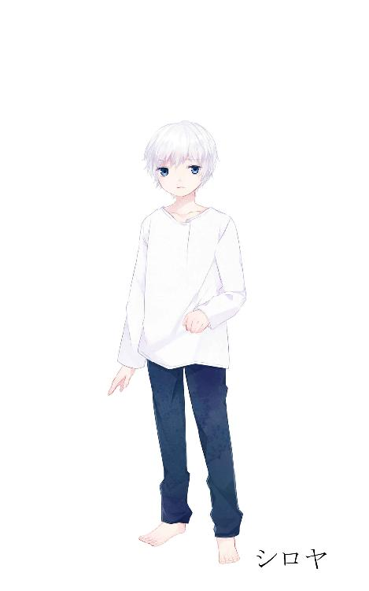
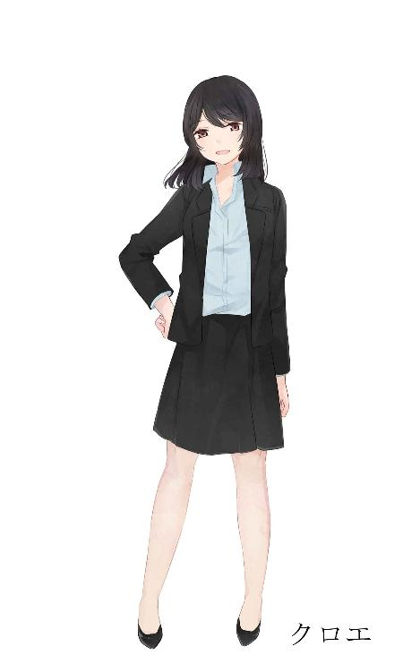
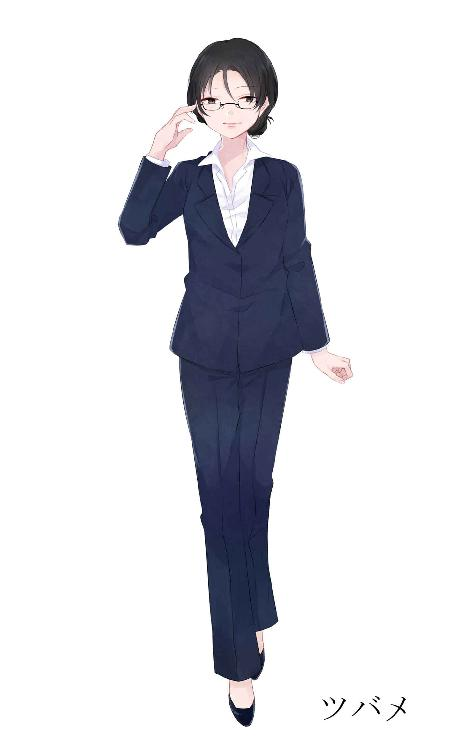
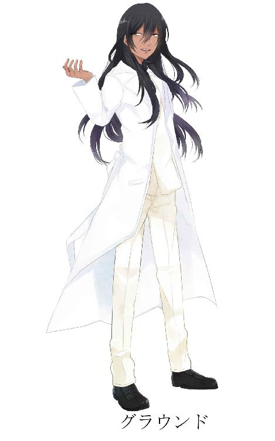
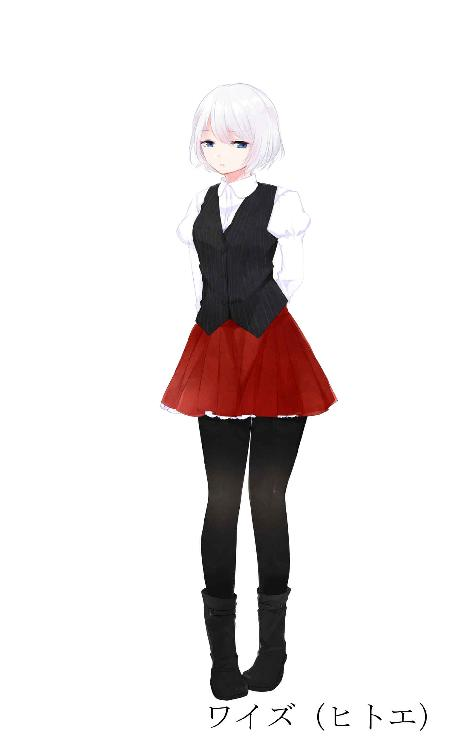
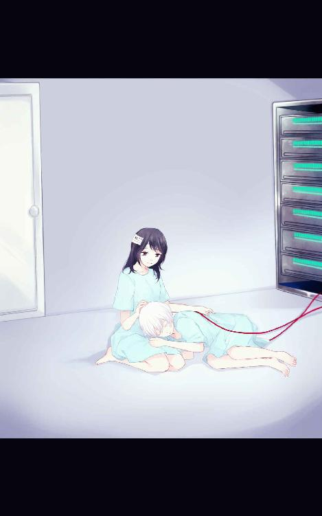

| ゼロリバーシ ゼロオセロ | |
| 白色黒蛇 | |
| (2017) | |
白色黒蛇
賢者より愚か者のほうが世には多い。
しかも賢者さえ、心は分別よりも狂気で満ちている。
―――セバスティアン・ロシュ・ニコラ・シャンフォール

・鶴巻シロヤ
１５歳、白髪
誰と話す時でも必ず敬語で喋るオダ研究社から送られてきた少年。
かつて患った障害の治療兼試験として脳に脳接続型コンピューター「ストリクス」を搭載している。これにより、半径１キロ圏内のインターネットを介して発信されたデータを閲覧、操作を行える。ストリクス対応機材を使う事でより多くの事が出来る模様。普通のハッカーじゃまず太刀打ちできない。
クロエに対して特別な感情があるかも？

・鳩矢クロエ
２４歳、黒髪
高校、大学の同級生で旧知の仲であるツバメの推薦で0課に抜擢される。面倒見が良い婦警で前の彼女の管轄地域のご老人や子供達からも慕われていた。父子家庭で父親に憧れて警察官になる。０課についてからはシロヤを弟のように接している。
シロヤを取り巻く大人たちから彼を助けたいと思っている。

・美空ツバメ
２４歳、黒髪、眼鏡
クロエとは高校からの友人。大学卒業後上京して警視庁に入庁後警視監秘書まで異例の出世を果たした。鷹田警視監の秘書として０課の監督を行っている。影では０課の活動の痕跡の抹消。テルトラにまつわるデータの秘匿。それに触れた捜査官の口封じ等、汚れ仕事も行っている模様。
飲食に関して意地汚く、時にハイエナのように食いつくす。
・鷹田警視監
５０代前半、髪の毛は最近後退気味。結構ムキムキマッチョマン。
０課の書面上の責任者。「コード６０」の隠ぺいに拘っている。
ヘビースモーカー、３度の飯より煙草好き。
警察に入って少し経った頃の話だ。
『お前に言わねばならない事がある、会いに来てくれないか』
それは父からの手紙だった。
いや、あの人を父と呼ぶのはどこかいけ好かない。訂正しよう。
それは父"だった人"からの手紙だった。
優柔不断で、その癖ワガママで、まるで子供のような人だった。
私が中学校に入ったばかりの夏。父は母以外の女性と交際、つまり不倫していたことが発覚し、すぐに離婚した。
「退屈だったんだ」なんて言い訳をあの人から聞いた時には怒りを通り越してあきれ果てたのを良く覚えている。
どの道、私からしても最悪なイメージしかない。父とは認めるのは癪である。
そんな元父に「言わねばならない事がある」と言われた時、一抹の不安を覚えた。あの人のことだ。借金なんかしているのではないかと思ったのだ。借金だけ作られて死なれたら私にそれが降りかかって来ないとも限らない。
それを確かめるためにも、元父に会う事にした。
「３０３号室......ここだわ」
スライド開閉のドアの前には父の名前が書いてあった。わざわざ個室を取っているようだ。
ノックを３回、私はそのドアをゆっくりと開けた。
「あぁ......本当に来てくれたのか。嬉しいよ」
「あなたみたいな人でも一応血縁上では父だから」
１０数年ぶりに会う父は思った以上に無様な様子であった。
人工呼吸器と点滴、となりにある画面には絶えず心電図が写されている。
私を呼び出した主治医が言うには、末期がんで余命幾ばくも無いそうだ。
ここまで来ておいてアレだが、｢ざまあみろ｣って思う。
父は私に遺言でも告げに呼んだのだろうか？
「奥さんは？」
「先立たれたよ、もう５年前のことだ」
「そう......」
全く無様なものだ。
私はそう心の中で不謹慎ながら嘲笑った。
「言わなければならない事って何？ 自分の不幸せだった人生語りを聞かせたいのならば帰りたいのだけれど」
「違う、頼みたいことがあるんだ」
なんとまぁ図々しい。この期に及んで頼み事とは。
「引き受けて貰えると思う？」
「俺が口を閉ざせば聞いて貰えないのは確かだろう」
少しだけムッとする。しかしまぁここまで足を運んだ以上聞くだけ聞かねばならない。
「いいわ、話して」
私は脚を組んでベッドで横たわる血縁では父である男の次の言葉を待った。
「嬉しいよ、ツバメ」
ツバメ、「美空ツバメ」これが私の名前だ。
父にこの名前で呼ばれるのは何年ぶりになるだろうか？
「母さんと離婚したのはあいつとの不倫が原因なんだがな、１つ母さんに隠していた事があってな」
「まさか借金があったとかは冗談にもならないわよ」
父は首を振った。
「お前には――」
警視庁の６階の廊下の奥、「特別捜査室」と書かれた部屋がある。
しかし、その部屋の中に何があって誰がいるのかを知る警察官は多くない。
末端の警視庁職員の間で密かな噂として語られている。
ある人は「警視監クラスの誰かが倉庫として使っている」と言う。
またある人は「警察組織を常に監視している秘密部署の部屋である」と言う。
酒の席で、昼食時のおしゃべりで、暇な時の雑談で、度たび話題になることがあるが、真相は誰も知らないし、誰も調べない。
ほとんどの者からすれば、正直真相などどうでもいいのだ。大半の者はそんな噂の真相より目の前の事件、ひいては自分の出世の方が大事だと思っている。
故にその部屋で「子供が捜査に関わっている」と思っている職員はいない。しかも、「この国で暗躍しているテロ組織を相手にしている」なんて誰１人として思うはずもなかった。
警視庁特別捜査班第０課。
テロ組織「テルトラ」を追うために編成された捜査班だ。
テロ組織を相手する部署だが、メンバーはたった２人。
今まで地方でごく普通の警察官だった鳩矢クロエ。
オダ研究社から送り込まれ、その脳に脳接続型コンピューター「ストリクス」を付けられた実験体である少年、鶴巻シロヤ。
たった２人ではテロ組織を追うなど、普通に考えれば無理で、無茶で、無謀だと大方の者は考えるだろう。
しかし、彼らはシロヤが脳内に持つ「ストリクス」を駆使し、確実にテルトラに近づいており、今彼らの元にはテルトラの足がかりになりそうな情報がそれなりにある。全て、２人が今まで艱難辛苦を乗り越え、やっと得られた情報だ。それを頼りに、クロエとシロヤは「コード６０」と呼ばれる警視庁の信頼を脅かす情報を持つ彼らを検挙する為に今日も警視庁６階の特別捜査室と書かれた狭い部屋で捜査に当たっていた。
２人のペースで。
「おいひい！」
「シロヤくん、ほっぺにクリーム付いてるよ」
休憩中。私が買って来たシュークリームを無邪気に頬張るシロヤ。
私が住んでいる家の近くにとてもおいしいと評判のスイーツショップがある。前々から有名だったらしいが、私がその評判を知ったのはここ最近の話である。私はそれを知ってから、何度か休憩中にシロヤと食べる為にとケーキやシュークリーム、エクレアなどを買いに足を運んだ。
されど流石は有名店。蛇のような長い行列にあったり、既に売り切れていたりとしばらく購入に手を焼いていたのだ。
しかし今日は平日朝早くに家を出た為にさほど長い行列にはなっておらず、今まで買う事の出来なかった人気ナンバー１のシュークリームを購入する事に成功したのだ。
甘いものを食べるシロヤの満面の笑みを見ているとこちらも笑顔になれる。買って来たかいがあるというものだ。
季節は秋。夏の暑さは過ぎ去り、ほんの少し肌寒くなってきた。温かく甘いミルクティーと甘いスイーツを楽しみながら２人はゆっくりと休憩時間を過ごす。
それはまるで本物の姉弟のようだった。
「クロエ！ まだありますか？」
「シュークリームはもうないけどエクレアなら」
「大好物です！」
更に目を輝かせるシロヤ。あまり甘い物の取り過ぎは体に良くないと分かっているのだが、甘いものを食べているシロヤの笑顔があまりにも幸せそうで、そんな笑顔が見たくって、それでつい、彼にスイーツを与えてしまう。
「そう慌てないの」
シロヤの甘いもの好きは尋常じゃない。シロヤ曰く、以前は朝食に菓子パン。夕食も甘いものを摂っていたと言う。最近は私が作り置きした惣菜等を食事としてちゃんと口にしているようで、食生活もそこそこ改善されていると思うが、だからと言って甘い物の摂取量が減ったという訳では無い。
というか、食べる量は増えているのに太る様子はないところが少し羨ましい。
摂取したカロリーはどこへ行っているのだ？
「あ、そうだ、今日僕もとっておきのおいしいものを持って来たんですよ」
そう言うと机の下から紙袋を取り出すシロヤ。
「とっておきのおいしいもの？」
甘いものだろうとは思うがシロヤが持ってくるとは珍しい。と言うか初めての事ではなかろうか。
シロヤが取り出した紙袋の中身から出てきたものはコーンフレークだった。派手なパッケージの文字は全て英語で書かれているから、恐らくは輸入物だろう。
「最近支給されたインターネット通貨で買ったんですけど、おいしいのでクロエにおすそわけです」
シロヤは茶棚から白いスフレカップを２つ取り出しコーンフレークを入れ、机の上に置いたままであった牛乳を注いだ。私何も「今食べる」とは一言も言っていないが、なんとまぁ手際が良い。
そういえばコーンフレークって食べたことないな......朝食はいつもパンだったからこういうものの存在を知ってはいたが手を出した事は無かった。
シロヤの持って来た輸入物のコーンフレークは一粒一粒の形状が異なっており楕円形の粒、三日月型の粒、三角、四角の粒と見ているだけでもユニークだ。
「ささ、どうぞどうぞ」
牛乳に浸かったコーンフレークがクロエの前に置かれる。
「あ、ありがとう......」
「早く食べないとふにゃふにゃになっちゃいますからお早めに」
そういうとシロヤは私の反応を楽しみにしているのか爛々とした目でこちらを見つめた。
強引に用意された上になんだかじーっと見られながらと言うのは少々食べにくい。
しかし断るのも悪い。私はコーンフレークをスプーンですくって口に運んだ。
「あ、おいしい」
牛乳と良く絡んで甘く、歯ごたえが良い。そして食べやすい。
「本当ですか！？」
手早く用意できて甘くて食べやすい。何よりおいしい。
なるほど朝食にこれを食べる人が多い訳だ。
「こういうの買ってみても良いかも」
私がそう呟くとシロヤはまた笑みを浮かべた。
「良ければ次からはクロエの分も取り寄せましょうか？」
そう提案され、少しだけ考えた。
基本的に朝食はちゃんとしたご飯を食べたいと思う。とはいえ朝早い時や寝坊した時には良いかもしれない。それに保存も効きそうだ。非常食として考えても良いのではないか？
「じゃあ......お願い、しようかな」
家にあってものではないだろう。私はその提案を受け入れた。
するとシロヤは笑顔で答える。
「クロエがそう言うのなら」
「甘いもの頂きに来たわ！」
気付くと特別捜査室にはもう１人。
鷹田元義警視監の秘書を務め、０課に指示を与える監督官、そしてクロエの学税時代からの友人である美空ツバメがやってきた。
「来た！ ハイエナ！ でも残念ながら――」
「冷蔵庫にシュークリームとエクレアがもう１個ずつあるのはお見通しよ！」
ツバメは捜査室に置いてある冷蔵庫をビシッ！ と指示し、ドヤ顔で寄越せ寄越せと迫ってきた。見事正解である。
「怖っ！？」
学生時代から優秀で警視庁でも大いに活躍しているエリート......だが食べ物が絡むと彼女は意地汚いハイエナに豹変するのだ。飲食絡みでは何度も彼女に手痛い仕打ちを食らっている。
しかし学生時代からの仲故に、ある程度傾向と対策は取れている。なので当然シロヤと２人で食べる分とは別に用意した。
ハイエナ用にあらかじめ別口で買っておいたシュークリームとエクレアを彼女に差し出すとシロヤと同じように目を輝かせツバメはシュークリームに齧りついた。
「サイコー！」
「それは何より」
「ホントここのシュークリームって甘くておいしいわ......本当にクロエにあのマンション勧めて良かった」
「......え？」
急な異動の為に今住んでいる部屋はツバメが探し、家賃も警視庁持ちになっている。住み心地も申し分なく交通の便も悪くない。私としてはとても助かっている。
しかしこう言われるとなんだか複雑な気分になった。
「まさかそれであの家に......って訳じゃないよね？」
休憩中の茶会は１匹のハイエナの乱入で一気に賑やかになった。
いや、騒がしくなった。
「ここにあるもう１個貰っていいですよね？」
「シロヤくんもう全部食べでしょ？」
「シロヤくんのじゃないなら勿論私の分よね？」
「何が勿論よ。そんな訳ないでしょ」
ツバメは後から来たにも関わらず、シロヤと同じぐらいの量を食べている。
だいたい私の２倍くらいの量だ。
「これは私の分だから。ていうかツバメもシロヤくんも食べ過ぎ」
容赦なく、より多く甘いものを口にしたがるこの２人がまるで池に投げ込んだ餌にバチャバチャと飛びつく鯉のように見える。
いつもそうだ。スイーツを持って行くとこの２人はとてもよく似た反応をする。全部この２人に食べ尽くされることを見越してシュークリームとエクレアを自分用に１個ずつ分けてとって置いてあるがそれすらも食わんばかりと言ったところだ。
それにこの２人には私が買って来たケーキを"私抜きで（ここ大事）"１つ残らず全部食べ尽くした前科がある。
すると唐突にツバメが妙な事を言いだした。
「クロエ......アンタまた少し太ったんじゃなぁい？」
なんだかツバメらしくない妖艶なもの言いだ。
「そんなことないって」
「いやいや、最近またお腹周りが......」
なんとなく狙いは見える。
どうやらツバメはもう１個食べたいが為に｢ダイエット｣という名目を利用して食べようとしているらしい
ハイエナめ、なんと意地汚い。
しかしそんな手に引っ掛かる訳があるまい。
私は「それはお見通しだ！」とビシッと告げてやろうとした時だった。
「クロエは太ってないですよ？」
そう口にしたのはシロヤだった。
真顔で、さもそれが当然であるかのように、予想外なところから助け舟がやってきた。
「僕が見る限りクロエの方がツバメさんより良いスタイルだと思います」
マセた事を言うようになって......というか恥ずかしさが勝って思わず吃ってしまう。
「な、なんですって！？」
これにはツバメも驚きを隠せない。シロヤはつらつらと自分の発言の捕捉をする。
「署内での仕事や車での移動の多いツバメさんより、徒歩での捜査を行っているクロエの方が運動しています。それに糖分の摂取量もクロエの方が低いので当然ツバメさんの方が太っていると思いますよ？」
否定すべきところはない。正論だ。当然ツバメは反論出来なかった。
「む、むぅぅ......言うようになったわね」
悔しそうな顔をするツバメ、それにしてもシロヤがそんな話をするようになるとは。
ここ数カ月で成長したのだなとクロエは少しだけ嬉しく思った時だった。
「と、言う訳で、これでクロエの面子が保たれたのでシュークリームもう１個良いですか？」
丁寧に両手をこちらに向けてねだってきた。
ご褒美をくださいと言う事らしい。
シロヤくん、お前もか。
その手には乗らない......乗らないよ？
「......ダメだからね？」
ツバメは甘いものを食べに来たと言うのは正しいが、彼女がこの部屋に来た理由はそれ以外にもある。
定期的にシロヤ、ツバメ、そして私の３人で捜査報告と今後の方針を話し合う事にしている。
今日がその話し合いの日なのだ。
「とりあえず、これからの捜査で僕とクロエから１つ提案があります」
「提案？」
私とシロヤは「ベイサイトホテル鈴宮」で１度だけテルトラと接触している。更に私はその時関西弁で話すテルトラの男と直接対峙した。その時の彼の発言から私たちは１つの可能性を見出したのだ。
「前回テルトラと接触した時にテルトラの男が喋ったんだけどね。相手は私たち、つまり０課の事を知っているらしいの。０課の事を知っている人ってこの国にほとんどいないでしょ？」
０課を知っているのは０課の存在を知るのは警視庁にいる警視監３８人と警視総監の１人。そこに、ツバメとシロヤ、そして私。
部外者であるはずのテルトラが０課を知っているとなると、自分たちと０課の責任者である鷹田警視監を抜いた３８人の内、誰かがテルトラと繋がっていると考えられる。
「もちろん警視監の誰かが直接テロに関わっていると言うよりテルトラに指示していると言った感じだと思います」
「私たちはこれから鷹田警視監以外の警視監と警視総監、計３８人に探りを入れてテルトラと繋がりあるかどうか調べるつもりなんだけど、どうかな？」
具体的に言えば対象の３８人の身辺調査とメール等の受発信記録の傍受と捜査。シロヤの手にかかれば、今すぐにでも調べることは出来る。
だが、身内に、まして警視庁のトップの人間に無断で探りを入れるというのはいくら法的手続きを必要としない自由な捜査を許された０課とは言え、後々トラブルとなるかもしれない。
それ故に監督官であるツバメのゴーサインを得ようと思ったのだ。
だが私と付き合いの長いツバメのことだ。快くうなずいてくれるだろう。
ツバメも私と同じ正義感の強い女性だ。例え自分より立場が上だろうと悪を見過ごすようなことはするまい。
それに何よりツバメは私の親友。すぐにＮＯと言うはずがない。
しかし、
「流石にちょっと待って欲しいわ」
とツバメはゴーサインを出してくれなかった。
「流石にやり過ぎかなぁ？」
「これが一番手っ取り早いんですけどね」
ツバメが出て行った後、シロヤもクロエも特にやる事が無かった。
私はデスクの前でぼーっとしているしか無く、シロヤは携帯ゲーム機で遊んでいる。
「でもよくよく考えてみれば、そうだよね。警視監や警視総監が怪しいので全員調べますなんて、警視監に説明しにくいよね」
０課の監督役でもあるツバメは、０課の捜査の進捗を書類上では０課の責任者である鷹田警視監に報告する義務がある。
彼女の立場を考えれば即答でＹＥＳとは言えなかったのだろう。
いくら親友とは言え、彼女にも立場と言うものがあるということなのだ。
シロヤはなんだかツバメが出て行ってからと言うものどうにも浮かない表情をしていた。こう焦らされると落ち着かないのだろう。
「そういうものですかね」
「そういうものなんじゃないかな？ こればかりはもうちょっと待とう。シロヤくん。それにツバメのことだからきっとすぐにゴーサインが出るよ」
私がそう言うと渋々シロヤは頷いた。
「クロエが、そう言うのなら」
こうやってシロヤをセーブするのもクロエの仕事の一つだ。でないと何をするか分からない。シロヤは彼が持つ「ストリクス」も含め、優秀な捜査能力を持っているがシロヤ自身はまだまだ１５歳の子供だ。
しかし私もどこか引っ掛かるものを感じている。もし警視監クラスの誰かが黒幕なら、そもそも０課を編成しテルトラの捜査などやらせるものだろうか？ テルトラが警察に対する情報の盾として握っている「コード６０」を含め、まだまだ分からない事の方が多い。
「クロエ、ツバメさんが何か隠しているなんてことありませんよね？」
私はその言葉にドキッとした。まさかツバメが？ いやいや、ツバメに限ってそれは無いと思ってはいる。しかしそれは私とツバメが学生時代からの友人だからと言う私情からの信頼でもある......いや、考えすぎだ。それは絶対あり得ないだろう。
「流石にそれは無いと思うよ」
そう答えた。
無いと思う。ツバメは私と同じく、０課編成の際に上に化かされた１人だ。彼女が私に嘘をついているなんてことは無いはずだ。そのはずだ。
警視庁、警視監室。
「捜査は順調なようだな」
警視監、鷹田元義。０課の書類上の責任者である。
今警視庁に属する警視監３８人の中で最も「次期警視総監」に近いと言われ、警察組織の中でも大きな発言力がある権力者だ。その要因の１つに警視庁特別捜査班第０課の活躍があるのだが、それを知るのは彼自身とツバメのみである。
彼はいつも通り、悠々と立派な木製の机越しにツバメの報告を聞いていた。
「今後はテルトラに近づく手段を検討するようです」
これは嘘だ。
ツバメは警視監クラスの人間を２人が疑っている事は話さなかった。むしろ話せなかった。と言う方が正しい。
「それは結構。それでは会議に行くとしよう」
「御意」
鷹田が椅子から立ち上がった瞬間、タイミング良く内線電話がかかってきた。「なんだ？ 会議が中止にでもなったか？」
「それはないかと」
「ははは、冗談だよ、真に受けないでくれ」
そう笑うと、鷹田警視監は受話器を取った。
「鷹田だ」
その様子を真顔で見つめるツバメ。
徐々に鷹田警視監の顔が険しくなっていく。表情を見るに、少なくとも会議が無くなった訳ではないようだ。
しばらくして
「きっとタチの悪いいたずらだ。一応それはこちらに回してくれ、中身を確認した後鑑識に回す」
そう告げるとそのまま受話器を置き、鷹田は一呼吸置いた。
「いかがしました？」
ツバメは堪え切れず訪ねた。
「脅迫状だよ。テルトラからな」
「脅迫状！？」
テルトラが脅迫状を送ってきた。２年間も沈黙を続けてきた彼らが何故このタイミングで動いたのだろうか。
いや、それよりも問題は、脅迫状の中身である。
「それには、なんと？」
鷹田警視監はスーツの胸ポケットから煙草を取り出し咥えた。彼自身驚かされ、気分を落ちつけようとしているのだろう。
「警視総監を殺すとな。しかも交通安全イベントの初日に、だ。挙句にまたも「コード６０」を盾にして来た。相変わらず卑怯な連中だ」
２年前と同じだ。
もしかしてクロエとシロヤの捜査が引き金となり彼らを動かしてしまったのだろうか。今１番に思いつく可能性だった。それが引き金になった可能性は大いにある。
「もうじきその脅迫状がこの部屋に届けられる。会議に向かう前にそれを持って０課に渡して来て欲しい。君が戻り次第会議に向かう。また後ほど、鑑識に回す『偽装用』の脅迫状を作成してくれ。それと、窓口係の口封じも忘れずに頼む」
「ぎ、御意」
ツバメは内心、気が気で無かったが今ここで慌てても仕方がないと言い聞かせ、
普段と変わりない返事を心がけた。
５分後、特別捜査室。
「脅迫状！？」
私は驚いた。
「やりすぎたかもしれませんね」
しかしシロヤはどこか冷静に見た。
すぐに０課の２人もこの脅迫状を目にする事となった。
ツバメはそれを届けるとすぐに仕事と言って部屋を出て行ってしまったが。
手紙の内容はこうだ。
『全国交通安全週間の初日、セレモニーで登壇を予定している鳥居警視総監を殺害する。なおメディア等にこの予告状、および我々の存在が露見した場合、我々が持つ「コード６０」を世間に公表する。留意されたし』
２年前の警視庁爆破事件、入江元警視総監殺害事件と同じだ。
「でも『登壇を予定している鳥居警視総監を殺害する』って言ってるのになんで『存在が露見したら』なんて言ってるんでしょう？ 登壇を予定している人物を殺せば自分たちの存在も露見するって考えるのが自然だと思いますけど」
言われてみれば矛盾している。警視庁爆破は事故と言う形で隠蔽された。入江元警視総監殺害は死亡時期のズレと共に病死と言う形で広まり、本当のことは一部の人しか知らない。
どちらもメディアに触れないように処理出来るものだったが今回はそうは行かないだろう。
全国交通安全週間の初日の登壇ともなればテレビ各局や新聞社等メディアが来ない訳がない。メディアが見ている前で殺害しようものならテルトラの存在がたちまち露見するのは必至だ。隠蔽するのは不可能に近い。
「メディアが見ている前で警視総監を殺して「コード６０」を公表したいとか？」
「それだとするとなんだか回りくどい気がするんですよね、「コード６０」を先にメディアに公表しても同じと言うか......」
思えば不可解なところが多い。
「警視総監の登壇日は１カ月後か......防ぐ手段を考える時間はあるけど正直妙なところが多いね」
しかし自分たちが考えた警視庁のサーバー捜査より優先して取り掛かるべきである。そこの認識は一致していた。警視総監殺害はなんとしても阻止せねばならない。２年前と同じ結果にしない為にも。
「とりあえず私は一度現場に行くね、シロヤくんも来る？」
私がそういうと長考していたシロヤの真剣な表情が急に明るくなった。
「クロエがそう言うのなら、一緒に行きます」
私とシロヤは１０分程地下鉄に乗り、全国交通安全週間初日のセレモニーが行われる都内の公園へ、現場の下見に向かった。
この公園は国が管理している公園の１つで、省庁関連のイベントが開催される際の会場としなる事が多い。
直近では文部科学省主催のイベントでが理科の野外実験をやっていたらしい。
公園の中央には野外ステージが設けてあり、今回のセレモニーの登壇もそこで行われるだろう。
シロヤは公園を見渡すときっぱりとこう言い切った。
「公園内で仕掛けてくる事はないと思いますね」
確かに、セレモニー中に会場内で暗殺を狙うのは簡単ではないだろうが、そんな簡単に言いきれるものだろうか？
「どうしてそう思うの？」
理由を聞いてみる。
「メディアや参列者はあらかじめ手荷物チェックも行われますし攻撃用ドローンで攻めてきても警察が用意している「ドローン捕獲用ドローン」を全てかわせるとは思えません」
言っていることは最もだった。警視総監の登壇ともなれば当然セキュリティは厳重になる。公園内に危険物を持ち込む手は皆無とは言えないがかなり難しいだろう。
｢どちらかと言うと警戒すべきは遠距離からの狙撃ですね｣
シロヤが注目しているのは公園ではなくその周辺のビルだった。
スナイパーライフルによる狙撃なら公園内に入る必要は全くない。その辺のビルに入るだけなら荷物チェックも無く、ステージが射程内に収まる場所からならどこからでも狙撃できる。
「ステージの後ろは木々が多いですし狙撃の障害が多いですから狙撃を狙ってくるとなるとステージ正面から見える３つのビルのどれかですね」
リハーサルのようにステージ付近に立つと、高層階のビルが３つ見えた。あれらの上層階からなら難無く狙撃は出来るだろう。
私はそれを確認するとシロヤに言った。
「ツバメに言って当日は３つのビルに入れないようにして貰えれば狙撃は防げるかな？ テルトラの確保を考えると厳しいけど警視総監とセレモニーに来る人の安全を考えたらそうするべきだと思う。今回の目標は「テロを防ぐ」ことを一番に考えよ。テルトラの確保は大事だけど、セレモニーに来た人を危険に晒すわけにはいかないから」
私たちは０課と言う特殊な捜査班ではあるが警察官であることには変わりない。警察官として第一に優先すべき事は"市民の安全の確保"だ。なので防げる事故や犯罪は出来る限り防がなければならない。
テルトラとの事件の捜査で頭から離れがちになってしまうが、このことは警察官として忘れてはならないこと。市民を餌にしてテルトラを確保するなんて考え方は論外だ。
シロヤは私の言葉に文句なく頷いた。
「クロエがそう言うのなら」
周辺の情報収集を２人で済ませて警視庁に戻ろうとした時には既に辺りは暗くなり始めていた。時計を見れば午後５時を回っている。
夏とは違い、この時間になれば外の気温が下がり、少し肌寒く感じる。日没がだんだん早くなり冬に近づいているのだ。
「シロヤくん、今日は一緒にご飯食べに行かない？」
ベイサイトホテルでの一件以降、こうして定期的に私はシロヤと一緒に夕飯を食べる事にしている。そして私がこう提案した際にシロヤが断る事は決して無かった。
「はい！」
シロヤはいつも通り元気よく、嬉しそうに返事をした。
２人が向かったのはピザやパスタなど、イタリアンが定番である全国チェーンのファミリーレストラン。
２人が訪れると午後６時の夕食度に前だと言うのに満席だった。私は予約シートに自分の名前を書き、順番待ちの為に設けられた椅子にシロヤと座る。
「言っておくけど甘いものばかりは駄目だからね」
私がそう言うとシロヤは笑顔で返す。
「分かってますよ。「身体に良くない」ですよね」
シロヤは何度もしつこく言い続けたためすっかり覚えてしまっていた。
「でもなんだか子ども連れが多いですね」
「ファミレスだからね」
「こんな賑やかな場所でご飯食べるのはなんだか新鮮な気分です」
シロヤからすればファミレスは異界のように思えるのだろう。長い事施設で１人きりで食事をしていたのだ。それに警視庁に来てからもしばらくは警視庁の中にある自室でいつも１人で夕食を摂っていたと言う。
新鮮に感じるのも理解できる。
「クロエはここに来たことあるんですか？」
「あー......学生時代に何度か来たかな？ 課題の発表とかで夜遅くまで学校にいた時とか帰りによくツバメと寄ってご飯を食べてたっけ」
半分にしようということでピザを頼んだが、私がドリンクバーで飲み物を取りに行った少しの時間でハイエナにピザを３分の２程平らげられていたのは今でも忘れられない。本当に酷いと思った。多分ハイエナ本人は覚えてもいないだろうから余計に腹が立つ。
「じゃあクロエはこの店で一番好きなものとかありますか？」
「え？ うーん......「ほうれんそうのクリームパスタ」は好きだった......かな？
長い事行っていなかったからまだあるかは分からないけど。」
すると「２名様でお待ちの鳩矢様」と名前を呼ばれた。
私がメニューを見た時の第一声は
「ま、まだある！？」
だった。パスタメニューのページには堂々と「ほうれんそうのクリームパスタ」と書かれている。これは嬉しい。個人的に定番メニューにはならないだろうと思っていたので、正直もう食べることはできないだろうと思っていたため、喜びを隠せない。
「まだあったなんて！ ......またあれが食べられるなんて！」
わたしは珍しくはしゃぐ私にシロヤが声をかけた。
「良かったですねクロエ、ただ少し恥ずかしいです声のトーン落としてください」
年下にたしなめられ、少しだけ冷静になった。
うぅ......ふがいない。
当然悩むはずもなく私は注文するものを決めた。
「シロヤくんは決まったの？」
初めてきたシロヤはどれを頼もうか迷うのではと思った。ハンバーグにパスタにとメニューは豊富だ。すぐに決まることはないだろうと思ったが
「はい！」
とあっさり注文するものを決めていた。これは意外だ。
「急がなくてもいいんだよ？ ピザとかグラタンとかいろいろあるし......」
「大丈夫ですよ、オーダーしましょう」
「え、あぁ......うん」
言われるがまま私はテーブル脇の呼びだしボタンを押した。
"ピンポーン"と呼び出し音が店に響き渡り、すぐに店員がやってくる。
「ご注文をお伺いいたします」
クロエはメニューを指さし
「「ほうれんそうのクリームパスタ」を......」
１つ、と言いかけた時、
「２つお願いします」
とシロヤが指を２本立てて注文した。
私と同じものを食べようと思ったらしい。道理で決めるのが早かったわけだ。
私はパスタの他に、２人で食べれるようにポテトフライと、シロヤのためにプリンアラモード、そして最後にドリンクバーをつけて注文を終えた。
店員が去った後、私の目の前に座っていたシロヤは満面の笑みをしていた。
「別に同じにしなくても良かったのに」
「クロエが昔好きだったと言っていたので、興味があったんです」
最近どうにもシロヤは「クロエと同じもの」にこだわる時がある。
スマートフォンにつけているキーホルダーや使っているペン。気がつけばスマートフォンも同じ機種だと気付いた。主体性の無いチョイスだとは思うが別に本人の自由だと思って何も言う事はない。とは言え気になることはあるけれど......
「それじゃドリンクバー行くけど、シロヤくんも来る？」
「はい！」
ドリンクバーから席に戻ると早速ポテトフライが運ばれてきた。
表面は黄色とオレンジの中間のような色をしており、細くカットされ、つまみやすい形をしている。
ケチャップとマヨネーズが盛られた白い小皿もあり、それに付けて食べれば旨いなんてことは言うまでも無いだろう。
「シロヤくんもいいよ」
「ありがとうございます！」
２人でケチャップの小皿にポテトを付け口に運ぶ。そういえば私も０課に異動になるまでしばらく誰かと一緒に食事を摂ることをしていなかった。県警警務の時に食べた美味しいものよりも、ファミレスのポテトフライが美味しいと思えるのは何故だろう？
「同じポテトを揚げたものでもポテトチップスとは違うんですね」
「調理法は似ているけどポテトフライのほうが油少ないって聞いたことがあるかな？」
「だからポテトチップスよりあっさりしてるんですね」
「あっさりって表現あってるかな？ ......うーん」
それからまもなく「ほうれんそうのクリームパスタ」が２つ運ばれてきた。
「懐かしいなぁ、頂きます」
私とシロヤはそれぞれ運ばれてきたパスタをフォークに絡めて口に運んだ。
クリームパスタの上にほうれんそうと小さなベーコンが少々乗っかっているだけのシンプルなものだがほうれんそうとベーコンの相性が良く、クリームで口当たりが更に良い。
「へぇ......これは確かにおいしいです。ほうれんそうってこんなにおいしかったんですね」
「でしょでしょ！？」
どうやら、シロヤも気に入ってくれたようだ。
今までの食生活の話を聞いていると、率先してほうれんそうなんて食べていなかっただろう。
そう言った意味でもシロヤのこの反応は私にとって嬉しいものだ。
シロヤのファミレスデビューは私にとっても楽しい時間になった。
そうして食事を済ませ、シロヤを警視庁の裏口まで送った。
「とりあえず今日はお疲れ様」
「はい、ごちそうさまでした。帰りは気をつけて下さいね？」
「もう、子供が偉そうなこと言わないの」
「僕だってクロエが心配になることはあるんですよ？」
生意気、でもその気持ちから彼の優しさが伝わる。正直に嬉しいと思うがそれは胸の奥にしまった。
「優しいんだね、ありがとう」
そう言ってシロヤの頭を撫でる。
子犬のように、尻尾が見えていればブンブンと振り回しているようにみえるくらい、シロヤは嬉しそうな表情をしているのを見て愛おしく思えてしまう。
私にとってシロヤは弟のような存在になっている。
「じゃ、また明日ね」
「はい！ また明日」
そう言ってシロヤに手を振り、私は警視庁を後にした。
大分慣れ始めてきていた。ただでさえ、異動という新しい環境ということに加え、普通ではありえないシロヤとの２人の部署、思っていた捜査とは違うことに戸惑いを感じ、ツバメに言って０課を抜けさせてもらおうと考えた時もあったが、その度にツバメやシロヤが私の心の支えとなった。
２人の事を思うと辞めるなんて事は出来ない。
それにシロヤにとって私は文字通り姉のような存在になりつつある。
今までずっと１人きりで外の世界に触れずに生きてきたシロヤに様々な事を知って貰いながら、シロヤとテルトラを追う。
そしてテルトラとの戦いが終わったら、シロヤを自由にしてあげたい。
きっと彼を警視庁に派遣したオダ研究社や警視庁と揉めることになるかもしれない。しかしツバメと協力すればきっと出来ると私は信じている。
シロヤが自由に生きられるようになるその日の為にも、シロヤを守りながら戦うことを心に決めてからもう２ヶ月近く経っていた。
午後１０時３０分。住宅から漏れ出た弱い光と、それほど強くない街灯が真っ暗な道を照らしている。電車を降り、自宅に向かっている時だった。
「鳩矢クロエ、でしょ？」
後ろから声をかけられた。
女性の声。
どこか聞き覚えがあるような、無いような。
名前を知っていると言う事はご近所の誰かだろうか？
「なんですか？」
私は声のした方を振り向く。
するとそこには私と似たようなレディーススーツを着た女性の姿が見えた。
あれ？ どこかであったような......
「ごめんなさい」
「え？」
"バチバチ"と何かが弾けているような音が聞こえ、目の前が真っ暗になった。ブレーカーが落ちたように身体の感覚が抜ける。何が起こったのだろう？ そう言う思考すら働かない。意識が飛ぶ直前、声が聞こえたような気がした。
「悪いな、堪忍してや」
それは私、美空ツバメがクロエに手紙を送る２ヶ月前の事だった。
私は鷹田警視監の秘書に抜粋されてから数カ月経ち、仕事に慣れ始めて、いつものようにスケジュールを調整している時に彼に呼び止められた。
私が向かうと、彼は警視監室に設けられた接待用の黒い革のソファーに座り、いつものように煙草をふかしていた。近くにあった灰皿には既に４本の吸い殻と灰が山のように積もっている。
「警視監、煙草吸い過ぎです」
「ん？ あぁ、少し匂いがキツいかな？」
「それもそうですけど、お身体に障りますから」
「ははは、まるで私のカミさんみたいだな」
ヘビースモーカーである鷹田警視監には何度も煙草を控えるよう言ったが本数は一向に減らない。何時かガンで倒れるのではと思うと心配だ
「それで、何かございますか？」
「あぁ、実は来月もう１人秘書を迎えることになってね。君には彼女に一通りの業務を教えてやって欲しいのだ」
そう言って鷹田警視監は１枚の紙を差し出す。新しく入ってくる秘書のプロフィールだ。茶髪、ショートカットでどこか日本人離れした顔つきの女性だ。経歴を見ると帰国子女らしい。
「......何故今になって秘書を増やすか、疑問に思うかね？」
妙な質問だ。新しく入ってくる秘書ではなく新しく秘書を迎えることに疑問などその質問をされるまで頭に無かった。理由がまったくない事はないだろうがさして私が勘繰ることはないだろうと思っていたのだ。
しかしその質問をされた以上、もっと重大な何かあると思うのは当然だ。
「特に疑問はありませんが......何か特別な理由があるのですか？」
そんな事を言われたら何かあると思うに決まっている。そう思ったが表情には出さない。
吸った煙草を灰皿に押し付けると鷹田警視監は自身の対面のソファーに腰掛けるように促した。
「失礼します」
それに従い、ソファーに腰掛ける。
「君に特命で任せたい一件がある」
「特命......ですか」
「あぁ、それも警察組織全体の信用を左右するものだ」
何と大仰な。私からすれば、そんな責任重大な仕事を任されるような成果を挙げた覚えはない。
何故私なんだ？ そんな重大な案件を......
それを私が問う前に鷹田が話を進めてしまった。
「一部の警察関係者しか知らない事だがね、この国には凶悪なテロリストが潜伏していてな」
「テロリスト！？」
その言葉を聞くと鳥肌が総毛立った。
鷹田は続ける。
「そのテロリストは警察組織の重大機密を握っている。それを握られている以上はおいそれとメディアを通して国民に警告を発する事も、規模の大きな捜査をする事も出来ずにいる」
それでは警察組織はそいつらに剣を喉元に突き付けられているのも同じではないか。
それでは手も足も出ない。
テロリストごときに警察は何の手も打てない事実を知り、私は驚愕した。
屈辱的な話だと思う。
「それで......私は何を？」
鷹田警視監は吸い終えた煙草を灰皿に押し付けて重々しく告げた。
「警視庁内にこのテロリストを密かに追う部署の人選とその監督を任せたい
部署の名前は――」
『警視庁特別捜査班第０課』
警視監室はしばらく静まり返った。
元々鷹田警視監と私しかいない以上、元から静かではあったものの正直私からすればどう反応すれば良いか分からなかったのだ。
その様子を察した警視監はため息をついてソファーから立ちあがった。
「け、警視監？」
「こんな話をいきなり聞かされても分からないのは無理もないだろう......やれやれ背に腹は代えられまい」
そう呟き、警視監の机の裏にある金庫に手を出しダイヤルを回した。
「君には全てを見せておかねばなるまい。そうでなければ筋が通らなかろう」
金庫のロックを解除し、金庫を開けると中には大量の書類の束があった。その中からファイルを一部取り出し私に差し出した。
そのファイルには「コード６０：概要」と書かれている。
「これが、奴らが握っている「コード６０」の全てだ」
「う......ん？」
冷たい風がうとうととまどろんでいた私は眼を覚ました。
少しだけ空気が埃っぽい。少しむせてしまいそうだ。
どうやら私は椅子に座ったまま眠っていたらしい。
しかし椅子の後ろで両手の人差し指を結束バンドで縛られている。さらに椅子の足に私の両足をそれぞれロープで縛られており、見動きが取れない。まるで誰かに捕らわれているようだ。
周りを見渡そうにもアイマスクを付けられていて周りの様子は分からない。かすかにゴウンゴウンと大型の換気扇のような音が聞こえるのみだ。
「ここは？」
そもそもなんでこんなところにいるのか分からない。昨日は確か......
シロヤくんとセレモニー会場予定地の下調べをして一緒にファミレスでご飯を食べて......シロヤくんを送ったらそのまま家に帰ろうとして......それから、それから......女の人に声を掛けられて......
それ以降の記憶が無い。
と言うよりそれ以降"起きていた気がしない"
眠っていたのだろうか。
というより今の私の現状を考える。
アイマスクで覆われた視界、縛られた両手両足、昨日の夜からどうやら完全に記憶が抜け落ちている時間......と言うか眠ってた時間......
それらのことから私は１つの答えを導き出した。
「誘拐......された？」
誘拐、ゆうかい、ユウカイ......
その言葉を意識した途端、だんだん心拍数が上がってきた。やばい。かなりやばい。こっそり脱出しようにもどうやってこの結束バンドを外そうか思い付かない。そもそも脱出して大丈夫だろうか。誰かに見張られていたりしてないだろうか。
いくら考えても打開策が浮かばないどころか、今置かれている状況すら正しく認識できなくなっていく。
犯人の目的は？ そもそも犯人は誰だ？ なんで私を狙った？ 目的は？
分かったところで実際どうしようもない疑問ばかりがポンポン出てくる。
それほどまでに私は動揺していた。
すると"ギィィ"と扉が開く音が聞こえた。
まばらな足音がこちらに近づいてくる。
足音がまばらに聞こえると言う事は１人ではないらしい。
とはいえ、目を塞がれたままでは性格な人数は把握できない。
複数人がこちらに徐々に近づいてくる。
それに連れて更に心拍数が上昇する。
そして緊張がピークに達した時、そいつはようやく口を開いた。
「起きとるか？ 返事してくれるとありがたいんやけどな」
耳に入って来たのは男の声、関西弁の口調。
前にどこかで聞いた事があるような気がする。
「ワイズ、外したれ」
ワイズ？ これもどこかで聞いたような......
誰かが私の座る椅子の後ろに立つと、しばらく私の視界を遮っていたアイマスクが外された。
「ッ......」
真っ暗だった視界に一気に光が入ってくる。視界が真っ白になり、そこから視界が少しずつ晴れて行く。目の前の光景が輪郭を帯びて行く。
そこは体育館のようだった。しかし体育館の割には木箱やら段ボールやらがところどころ積まれている。
廃校だろうか。私はその体育館のど真ん中に座らされている。そして声をかけてきたその男は座らされている自分の目の前、体育館のステージの上にある演台の前であぐらをかいていた。
「久しぶりやな、嬢ちゃん」
その男は余裕そうに私を見ている。口元を吊り上げたにやけ面。長い黒髪、白くて派手なコート......
「あ、あなた！？」
その顔は以前見た顔と同じものであると理解した。ベイサイトホテルでクロエの前に立ちはだかったテルトラのメンバーだ。
「ホテルの時は世話んなったなぁ、あの時は驚かされたで！」
誘拐犯はこいつだろうがこの男はまるで自分の家に友達を連れて来たような愉快そうな態度で話しかけてきた。
まるでファインプレーに魅せられたような、陽気な口調だった。
その反面私は悔しさと屈辱で胸がいっぱいになり、唇を噛みしめるた。
テルトラは０課のことを何故か知っているのは分かっていた。
テルトラからすれば、０課は暗殺決行の際の障害と捉えられていただろう。
ならば、暗殺決行前にその障害とである０課を排除したいと思うのは道理だ。
何故それに気付けなかった！
自分のうかつさと不注意が恨めしい。
「こんなとこに連れて来て......どういうつもり？」
しかしここで弱気な姿を見せたらもっと付け上がるだろう。私は内心怯えながらも冷静を装い、目の前の男に問う。
「ん？ あー......」
男はしばらく考え込むような素振りをして見せた。
と思いきや
「理由は特にあらへん」
と素っ気なく返してきた。
馬鹿にしているのか、それともこちらが感情的になるのを狙っているのか。
どちらにせよ腹が立つ。
「理由なしに人さらい？ ふざけたこと言わないで、と言うか、だったらコレ外して欲しいんだけど」
「いやいや、ふざけるも何も、俺ら特別何かをやらせるために連れてきたんとちゃうし、脅して金を要求するとかもせんわ。ただしばらくここにいて貰おうと思ってな。ちょいと強引やけど連れてきたって訳や。両手両足はちと窮屈やろうけど堪忍な。連れてきた以上は逃がすわけにはいかんからな。まぁ退屈せんよう色々話したるわ。時間はたんとあるしな。嬢ちゃんの疑問もある程度話したる......あぁ、そういや喉乾いたやろ。水でも飲んで落ち着きや。」
男が声をかければ、私の後ろから女性が1人。女性の手元をよく見れば、よく見かける天然水のフィルムが付いたペットボトルの蓋を開けている。そこにストローを入れ私の口元に差し出した。
どうやらこれを飲めということらしい。
ぼんやりとした記憶を辿っていけば、この女性もベイサイドホテルにて見た覚えがある。あの時は確か「ヒトエ」と呼ばれていたはず。
それに恐らく入江元警視総監の事件の際の監視カメラ映像で呼ばれていた人物と同じと見るべきだ。
「いらない？」
彼女の声で一度思考を停止する。目の前に差し出されたペットボトルの水をじっと見て、首を横に振る。
｢一応言うけど、毒とか入れてないから｣
それでも、私は首を横に振り続ける。
出来るだけワイズを見ないように顔を背けた。
私が頑なに拒絶した為か、諦めてワイズはペットボトルの蓋を閉め、私の横から後ろへと移動した。
その一部始終を見届けた男はパンと空気を変えるかのように手を叩く。
「さてと......そしたらお話の時間や」
と愉快そうに言った。
「まず......名前名乗っとかんとアカンな。「お前」とか「あなた」じゃ会話しにくいったらあらへん」
「どうせ本名は名乗らないんでしょ？」
刺々しく返してやった。しかし男は相変わらず微笑を浮かべて話を続ける。
「俺は「グラウンド」っちゅうんや。お嬢ちゃんの言う通り本名やのうて、コードネームやけどな。頭に入れといてくれると嬉しいわ」

やっぱり、本名を名乗る気は無いらしい。
そんな簡単に聞けるとは思ってなかったけど。
「なんや、捜査しとる犯人のコードネームが分かったっちゅうのに、ほとんど無関心そうやないかい」
「そんなこと知っても何の役にも立たない」
私があしらうと男は苦笑いを浮かべる。
「冷たいなぁ......まるでドライアイスや、まぁええ、続けよか」
そういえば、捜査室でシロヤくんはどうしているだろうか。時間次第だけどいつも行く時間に来ないことを心配してくれているだろうか。最近よくお菓子を買って行っているから、ツバメが捜査室に顔を出してくれて、私がいなくなったことに気づいてくれないだろうか。とはいえ、２人ともテルトラに拉致されているなどと考えていないだろう。しばらく助けは来ないと思った方が良い。そうなると今はどうやらグラウンドに極力従うしかないだろう。
「さて、話を始める前に聞きたいことがあるんやけどな。さて、話を始める前に、聞きたいことがあるんやけどな。お嬢ちゃんの仲間に"脳接続型コンピューター"を持っとる奴おるやろ。」
さらっと吐き出されたそのワードに驚愕する。
「脳接続型コンピューター」とグラウンドは確かにそう口にした。
こいつら、シロヤの秘密を知っている？
かなり驚いたが、なんとか口に出すのを堪え黙り続ける。
シロヤのことも把握しているのか。
「答えへんか......まぁ俺らはそれを前提で話をさして貰うで」
シロヤの事をどこまで調べたのだろうか？
０課そのものが警視庁の機密になっている上にその中でシロヤの存在はトップシークレットとなっているはずだ。一体どうやって調べたのだ？ いや、そもそもどこからシロヤの情報が漏れたのだ？
「その子、オダ研究社出身やろ？ そうやないとこの前のワイズを凌ぐハッキングとかの説明がつかんからな」
オダ研究社のことも既に知っているようだ。まさかテルトラは私が答えずとも既に全てを知っているのだろうか。
どこまで知っているかは分からないが、下手に答えればシロヤに危害を加えに動くだろう。それだけは絶対にあってはならない。
クロエはしらを切り続ける。
「なんのこと？ 私にはさっぱり」
徹底して私はシラを切り続ける。反抗しない方がいいと思ったが、シロヤのこととなれば別だ。シロヤは私が守らなければならない。
しかし隠そうとしてもお見通しと言った様子でグラウンドは微笑を浮かべた。
「オダ研究社出身の子供は１人だけやと思うなや」
獰猛な笑みを浮かべ、グラウンドはこちらに近づいてくる。
「そこにいるワイズも同じや、頭ん中に脳接続型コンピューターが入っとる」
「どういうこと？」
脳接続型コンピューター。そう呼ばれるものが、シロヤの脳入っている。シロヤは自分で「ストリクス」と呼んでいた。シロヤはストリクスを使う事で半径１キロ圏内のインターネットを介して発信されたデータを閲覧、少しならば操作もできるようになる。今の０課の捜査の要だ。
同じ脳接続型コンピューターが何故テロリストであるテルトラのメンバーが持っているのだろう。
「ようやっとまともに話をする気になったか？」
それに反比例するかのようにグラウンドの顔が更に得意げになる。
「『ファルコ』」
突然私から見て後ろにいた唐突にワイズがそう口にした。
「私の頭には『ファルコ』がある。あなたの仲間が持っているのはきっとその後継機」
後継機......同一、もしくは発展した運用思想や目的に沿って開発され、既存のものと置き換えるため制作されたものを差す。
ワイズの"ファルコ"の技術が、シロヤの"ストリクス"に生かされているからこそ、ベイサイドホテルの一件はしてやられたと言いたいらしい。
という事は、オダ研究社がテルトラに加担しているのということか。そう考えるとさっき彼らの口からオダ研究社の名前が出てきたことも納得出来る。
シロヤ以外の人に対しても実験を行っているばかりか、テロリストに手を貸しているのか？
「言っておくがオダ研究社は共犯っちゅうわけやないで。」
ここまでの話を聞くと嘘にしか聞こえない。
「そんなの信じる訳ないでしょ」
「どう思うかは勝手や、まぁオダ研究所が法外な研究をしとるのは元々やしな、そこは今横に置いとくとして。嬢ちゃんは、根本的なとこで大きな勘違いをしとる。そっから始めんと話が進まんやろし」
グラウンドは一呼吸おいて、それを口にした。
「俺らは元々警察官、お前らと同じ０課や」
「冗談でしょ？」
「事実や」
テルトラが元警察官？ 私たちと同じ？
ふざけるな、ふざけるな、ふざけるな！
入江元警視総監を殺したくせに、警視庁で爆破事件を起こしたくせに。
よくもそんな事が言えたものだ。
「そんな訳ない！」
そんな訳がない。そんなことはあってはならない。
そしてそんな嘘で私たち警察を侮辱されたことが許せない。
「しゃあないなぁ......」
少し感情的になった私に対してグラウンドはため息をついた。
そしてやれやれとぼやきながらポケットを探りだす。
「これを見ても同じこと言えるか？」
グラウンドはポケットから財布のような黒いものを取り出した。
良く見ると、旭日章と呼ばれるシンボルマークがはっきりと見える。所謂警察手帳だ。そして手帳に張られた写真は目の前の男。...本物と言いたいところだが、悲しいことにコスプレ文化の今、警察手帳の偽物も出回っている。これだけでは信用できない。
｢...手帳は本物そっくりだけど、どうせテロリストってバレないように偽物でも用意したんでしょ。｣
｢...はぁ、嬢ちゃん本当頑固やなぁ。本名は晒すつもりなかったんやけど。これ、見えるか。当時のだからこれも偽物って言われたら信じてもらう手段がもうないねんけどなぁ｣
グラウンドはクロエの前に投げられた手帳を拾い上げ、紙のようなものを取り出す。どうやら名刺のようだ。
警察手帳に書かれた名前と、名刺に書かれた名前が一致している。
「北条ダイチ」それがこの男の本名らしい。
そして、この名刺の形式は私が持っているものと同じであった。
手帳は偽造されようと、名刺の透かし模様までは基本的に真似ができない。
彼が警察官だったまぎれもない証拠を突きつけられてしまったのである。間違
「そんな......そんなこと......」
テルトラが０課。そう考えると少しだけ話が見えてくる。
警察にスパイがいたから彼らは０課を知ったのではない。彼ら自身が０課であった故、元々０課を知っていたのだ。
ヒトエの「ファルコ」にしてもそうだ。オダ研究社はテルトラに加担していたんじゃない。２年前にもシロヤと同じような形でワイズが送られてきたのだ。
「俺らは０課で甲斐田組が仕切ってた大規模な麻薬売買ネットワークを壊滅させるように集められたんや。捜査自体は上手く行っとった。ワイズの"ファルコ"でネットワーク全体を隅々まで調べ上げ、それを俺ともう１人で全部台無しにしてやった。麻薬工場は爆破した。本部に銃を持って２人でカチコミをかけた。武装して抵抗した奴らは片っ端から射殺した。出来る事はなんでもやった。相手が相手や。手段なんか選んでられへん。もちろん「そうしても構わん」って言われとったし、そうでもせんと倒せんかった」
入江元警視総監時代に受けたという甲斐田組の大量検挙の話を思い出した。なるほどこれが原因らしい。
「麻薬売買のネットワークを壊滅させて一件落着......と思った時や、奴らは、警察上層部は俺らに逮捕状を申請しやがった。」
「それは、あなた達が過激な手段に出たからでしょ？ 今言ったじゃない大勢殺したんでしょ？ それで許されると思ったの？ ただの自業自得じゃない」
麻薬ネットワークを潰すためとはいえ、人を殺していい理由になんかならない。
そんなやり方は正しくない。当然だ。当たり前だ。
彼らに逮捕状が出たのは当然の報いだ。
「そう言うならどうしろっちゅうねん！？」
グラウンドはここに来て初めて声を荒げた。
その叫びがピリピリと肌に伝わる。彼の本気が伝わってくる。
まるで猛獣の咆哮だ。
気のせいか体育館の温度が上がっているように思えた。
「じゃあ暴力団相手に「麻薬売るな」と話し合いでもせぇってか？ そんな穏便に片付くような奴らだと思えるんか？ そんなんで暴力団の餌食になった奴らが助かるとか思うとるんか？ あいつらにお前の綺麗な理想が通じるとでも思ってるんやないやろな！？」
「だとしても私はあなた達を正しいとは思わない！」
「それはお前が甘いっちゅう証拠や！」
甘いというグラウンドの言葉が胸に刺さる。そんなことは分かってる。確かに、私の考えは甘いと言われても仕方がないのだろう。テルトラ、彼らのように目的の為に手段を選ばないのが正しいというモノの見方がある事は知っている。でも今まで私が生きていた中で、私の信念として正しいとは思わないし、思いたくない。
まして人を傷つけて、人を殺して成し遂げることが正しいはずがない。
「人を殺すんが間違っとる事なんて分かっとるわ。せやけど他に現実的な手なんてない。誰かを助ける事が目的なら、目的の為なら手段なんか選んでられへん。なら人殺しでもなんでもせんとアカンのは当たり前や、そんな事も分からんのかい！？」
「間違いだと分かっているなら......その報いを受けることになることだって分かるはずでしょ？」
「ホンマにそう思ってんのか？」
「当然よ」
そうだ。こいつらは間違ってる。
だから警察に追われるのも何もかも、当然の報いだ。こいつらは間違ってる。こいつらは正しくない。
だから私たち警察が捕まえるんだ。
「じゃあ、お前の上司も、仲間も、報いを受けなきゃならんなぁ！？」
グラウンドの言葉を聞き、怒りが頂点に達した。
「ふざけるな！」
今この男は仲間を侮辱した。ツバメを、シロヤを、他にもお世話になった人たちを侮辱した。許せるものか。
「ほぉ、違うか！ お前の周りは皆清廉潔白ってか？ 何も汚いことしてる奴はおらんってか？」
当たり前だ。
こいつの言うことは間違っている。
頭でグラウンドの言葉を否定し続ける私にこいつは更に畳みかけてきた。
「お前は己の正義感を信じたいがために他人の考える正義に蓋をして全否定しとるだけや。自分に味方する、自分を支える人物を正義と思いたいだけや。せやからお前は気付かない。敵だと、悪だと見ている奴の正義も。味方だと見ている奴が秘めている「悪意」もな！」
悪意？ ふざけるな、ふざけるなふざけるな！
「私の仲間は、お前らみたいなテロリストとは違う！」
従おうなんて思っていた気持ちはどこかへ行ってしまったかのように、私は感情を昂らせる。
「そう言うなら、お前は何もおかしいと思わんのか？ なんでこの一連の事態の中核やっちゅう「コード６０」がロクに０課のお前に知らされないんや？」
「そんなの関係ない！」
「なんで「捜査の対象が元警察官」だってことを知らされてないんや？」
「それは......きっと言えない都合が......」
「なんでお前みたいな特別目立った活躍をしていたわけでもない警官がいきなり０課なんで特別な部署に抜擢されたんや？」
......分からない。
ギリッと私は自分の唇を噛み締める。
少し疑問に思ったことは確かにあった。シロヤとの生活であまり考えてなかったが、自分でも少し不思議に思う人事異動だ。
ツバメの推薦というのはあるかもしれない。しかしそれだけなのだろうか？ 本当にそれだけなのだろうか？ 他にもっと理由があるかもしれないが......
「間違いなく嬢ちゃんは俺らと同じで上に利用されとる。それに気付いとらんやろうけどな、お前の体内には発信機みたいなんが埋め込まれとった。ワイズが探知したんや」
発信機？
なんのことだかさっぱりだ。
こいつが何を言っているかさっぱりだ。
「どこに行ったのか、何をしてたのか、何を話してたのか、ぜーんぶ監視されとったはずや」
私は......監視されていたのか？
そんな、そんな馬鹿な。でも誰が？ ツバメか？ いやこういうことをやるとしたらシロヤか？
私を監視してどうするつもりだったのだろうか。
そもそもどうやって発信機なんか......
「それでも、お前の周りは、正しいか？」
その問いには答えられなかった。
答えが分からなかった。
ただ「自分の周りは間違っている」と考えてしまうとクロエが今まで信じてきた何もかもが崩れ去ってしまう気がした。そんな迷いを悟られたのだろうか。グラウンドは諭すように言った。
「大方お前は「悪い事をした奴には法の裁きを与えること」を正義やと思うとるんやろ。警官の鏡やなぁ？ せやけど、お前、一番の悪を目の前で見とるはずやろ？ 「脳接続型コンピューター」それの人体実験、これが悪でなくてなんなんや？ それを見逃しておいて何が正義、笑かすな」
確かにこいつの言う通りだ。警察組織が人身売買、人体実験を認めている時点で警察に正義もへったくれも無い。そんなこと始めから分かっている。
しかし、そもそも私がこの捜査に加わっているのは「そんな大人たち」からシロヤを助けるためだ。
あれ？ だとしたら、なんで今もなお『自分の周りを正しいと思っていた』のだろうか。なんでそうシロヤに教えたんだろうか。
そんな事は無いと心のどこかでは分かっていたはずだ。
警察が正義ではない。本当は理解していた。理解していたんだ。
なのにいつの間にかそのことを忘れていた。いや、意図的に考えないように頭の中から排除していた。ただただ「シロヤを普通の暮らしが出来るように自由にしてあげる」とだけ盲目的に考えていた。
目の前の悪を見逃していたんじゃない。
完全に無視していたにも等しい。
目の前にそれがある事自体を認知出来たはずなのにしていなかったのだ。
グラウンドの言葉が否定出来ない。
「目の前の悪事を見て見ぬふりしといて正義を語るお前に、正義を語る資格はあらへん。」
言葉が出ない。なんと否定して良いか分からない。
けどその言葉を飲み込みたくはなかった。受け入れたくはなかった。
ずっとシロヤに間違った事を教えていたのだろうか。
私の正義を教えた彼はいつか自分を傷つけてしまうのだろうか。
お父さんも間違っていたのだろうか。
そうは思いたくはないが、今の様がその顛末なのだとしたらどうだろうか。
気がつけば最初は軽々しかったグラウンドの態度が一変している。まるで幾度も修羅場を乗り越えた戦士のような顔つきだ。そんなグラウンドを前にただただ黙ってうつむくしかなかった。
「はぁ、こんな話続けてもしゃーない。話進めるで」
グラウンドは指を２本立てて告げた。
「お前には２つの選択肢がある。
１つ、俺らの味方になる事や。お前の仲間も連れて来てくれるとなお嬉しいな。一緒に警察組織の頭を叩こうやないか。全てが終わったら自由になれる事を約束したる。もちろんお前もお前の仲間もな」
シロヤを自由に出来る。それが叶えばどれほど良いだろうか。
警察も、オダ研究社も、シロヤを縛る全ての鎖を断ち切れるのならば......
「俺らの味方になれや。それで本当の悪をお前自身の手で裁け。俺らと一緒にこの事態の元凶を消して全部終わりにしようやないかい」
でも、それはつまり、ツバメを裏切ることでもある。
警察は間違っているかもしれないが、ツバメは違う。
本当に良いのだろうか。今まで支えてくれた友人を裏切ってシロヤを助けることが、私にとってはベストな選択なのだろうか？
それに、ツバメを裏切って、警視総監の暗殺に手を貸して、それで助けられたとしてシロヤくんは本当に幸せになれるのだろうか？
「さもなくば......２つ、ここで俺らが事を終えるまで待つ事。まぁそう時間はかけん。飯も３食くれてやるわ。そこでしばらくお前の正義がどんだけ間違っとるか考えるとええ」
テルトラと同じようなことをして、そんな有様になった私を見て、シロヤくんはどう思うだろうか？
テルトラが正しかったと言って、私がテルトラに従ったら、シロヤはどう思うだろうか？
シロヤを助ける為だけに戦う事が、その為にどんな事をしても誰を傷つけても構わないと考える事が、それが本当に正しいのか？
でも、テルトラと共に戦う事でしかシロヤを助けられる手がないとしたらどうだろうか？
彼らと敵対しても、シロヤを縛る鎖の元は断ち切れないのではないか？
「私は......」
クロエは決められなかった。迷い続けていた。
「グラウンドッ！？」
突然、今までに聞いた事のないような大声でワイズが叫んだ。
「奴が来た」
「んなアホな！ 電波防壁を強いてたんとちゃうんか？」
グラウンドの表情がまた険しくなった。
「電波防壁は異常ない。でもあれをどうやって突破したの？」
「そんなことは後でええ！ 今はズラかるのが先や！」
「了解......あぁっ！」
ワイズは頭を抱え、苦しい表情を浮かべる。
その様子は以前見たそれと良く似ていた。レストランで苦しんで倒れたその時の再現のようだった。
プツリ、部屋中から何かが切れたような音がそこかしこから聞こえた。
回っていた大型換気扇が回転を緩やかに止め、ステージを照らしていたライト、が一斉に消灯する。
「ワイズどないした！？」
「ＥＭＰ攻撃......電磁パルスを食らったみたい。周辺警戒をお願い！ ３０秒で回復させる！」
「わ、分かった！」
グラウンドが返事をしたその時だった。
ドカン！ ドカン！ と大きい爆発音が舞台を正面から見て後方より響いた。
その場の状況を整理する間もなく３回目の爆発音で体育館の後方の壁があっという間に、粉々に吹き飛んだ。
即座に硝煙の匂いがなだれ込んでくる。粉塵がものすごい勢いで舞ったため私は２，３回咳き込んだ。粉塵は靄のように視界を塞いだが次第に爆発の後の惨状がぼんやりと確認出来るようになった。目にしたのはさっきまで壁だった破片の末路。私の元までは届かなかったものの無残に粉々にされていたのを目の当たりにした。
ワイズに向かって叫ぶグラウンドの声が聞こえる。
「急げワイズ！ お嬢ちゃんを連れて――」
「行かせる訳ないだろ！」
少し時間を遡る。
クロエとファミリーレストランで食事をした翌日、僕が８時半に特別捜査室に訪れた際いつもは先に来ているクロエの姿は無かった。
いつもこの時間にはクロエは先にいて
『おはよう、シロヤくん』
とあいさつをするのがいつものことだ。
とはいえ、珍しい事もあるものだと思い、机のパソコンを立ち上げる。
今日もクロエは何か買ってきてくれるだろうか。どんな話をしてくれるのだろうか。そんな事を考えながらクロエを待ち続けた。クロエと捜査している時間は楽しい。捜査以外の時間も勿論楽しい。そんな楽しい時間を今日も過ごせると信じ、クロエを待つ。
しかし９時を過ぎてもクロエはやって来なかった。１０分経っても、２０分経っても、３０分経ってもクロエはやって来ない。画面右下の時刻表示とのにらめっこが続いたとりあえず
「まだ来ていませんが？ なにかありましたか？」とメッセージを送った。しかし返信どころか既読もつかない。
「クロエも寝坊をするんですかね」
誰にだって寝坊する事もある。もしかして体調不良かもしれない。
クロエだって人間だ。ミスをするし身体も壊すだろう。
しかし連絡もせず、既読も付けない。こんなことは今までなかった。
そもそもクロエはこんなことをするような人ではない。休むなら連絡を入れるだろうしメッセージを無視するなんて絶対にしないだろう。
じゃあこれは一体......
考えるとすぐに「１つの嫌な想像」が浮かんだ。
まさか......いやしかし......
そして僕はスマートフォンを開き"あるソフト"を立ち上げた。
ノートＰＣを使い作業を続ける。
操作音だけが特別捜査室に響く。
ちょっと前までは、僕だけしかいない静かな空間は当たり前だったのに、今では静かすぎるこの空間が妙にもどかしい。
クロエがいない、というそれだけなのにこのような強烈な違和感を覚えてしまうのはのはどうしてなのだろうか。
すると扉を３回ほどノックされた。恐らくツバメだろう。もしクロエならばこの部屋に入る時にノックなどしない。そしてこの部屋にクロエ以外に訪れる人がいるならば、ツバメを除いて他には誰もいない。
「どうぞ」
そう言うと扉が開いた。予想通り扉の先にはツバメがいたようだ。
静かすぎる特別捜査室に入り、静かで寂しい部屋の様子を見るなりツバメは
「あら？ クロエはいないの？」
と首を傾げる。まぁそう言う反応をするだろう。
「クロエ今日はまだ来ていませんよ」
「もしかして外出中？」
「セレモニーの会場予定地でやることがあるとだけ言ってました」
僕は嘘をついた。理由は後で述べる。
僕の嘘を疑わずに納得した様子でツバメが
「そう......」
と呟き静かな捜査室を見渡した。クロエがいないんじゃ長居する理由はないだろう。
「ツバメさん、クロエに何か御用でも？」
「うん、昨日の脅迫状のことで、何か手を回すことが他にあるかなって思って顔を出したんだけど......」
それと僕とクロエの休憩時間に水を差しに来たんだろうな。
「今のところはまだありません......後ほどお願いする事がありましたらお伝えしますよ」
そう言えば出て行くだろう。
予想通りツバメはクロエがいないなら仕方ないとため息を付く。
「また来るわ、なにか起きたらすぐに連絡してね」
と告げ静かにツバメは特別捜査室の扉を開けて去って行った。
やっと出て行ったか。
「......ツバメさん、あなたに出てこられる訳にはいかないんです」
シロヤのＰＣ画面に映っているのは関東地域のマップだ。そこには何かのルートを示すかのようピンク色のラインが不規則に引かれている。
「それにしても、まさかこんなに早く役に立つとは思いませんでした」
シロヤは険しい表情で画面を見ていた。それが示すのは昨日の夜からのクロエの移動ルートだ。
「１つの嫌な想像」は不本意ながら的中した。
僕はもう気付いていた。クロエが拉致された事に。
自宅に向かっていた途中でいきなり自宅から離れて移動を始め、そこから高速に乗って北関東まで移動した。
普通に考えればあり得ない行動だ。ましてクロエが自分からそんな意味の分からない行動をするはずがない。
そうなるともうあとは「誘拐された」としか考えられない。
誰の仕業かは大体検討が付く。十中八九テルトラだ。僕とは違って普段警視庁の外で生活しているクロエは最悪"いつか狙われる"危険感を覚えていた。だからこそ僕は保険目的でクロエの体内にＧＰＳを搭載したマイクロチップを入れておくことにしたのだ。
マイクロチップのおかげで、使用したルートからどこに潜伏しているかはなんとなく知ることができた。マイクロチップの反応を追うとクロエの反応は特定の区域内に入ると反応が消滅した。反応の消滅理由をストリクスで調べると、特別何もない山奥のくせに電波防壁が半径５ｋｍにしかれていたのが原因だった。確かベイサイトホテルの時もジャミングを仕掛けてくる奴がいた。そいつの仕業だろうか。
どうあれこのエリア内に奴らがクロエを拉致して潜伏していることは明白だった。
場所が絞り込めたからこそ、今はとりあえず捜査室にいても仕方ない。このタイプの電波防壁の突破は僕からすれば朝飯前だがその為には現地に赴く必要がある。
それに、出来る事なら今すぐにでもクロエを救出したい。
どちらにしても急がねばならない。
シロヤは０課捜査用のバンを自動運転に設定し、警視庁の駐車場の監視カメラ、Ｎシステムのコントロールを全てハッキングし車を走らせる。
ちなみに運転席にはレディーススーツを着た女性に似せたアンドロイドを置いて誤魔化している。ホテルの無人受付に使われるものと同じタイプで、良く見なければそれが人形だとは気付かない精巧さで定評がある。これならば検問や警察官に目を付けられるか、走行中に他の車の運転席を凝視するようなドライバーがいない限り誤魔化せるだろう。
僕は急いで電波防壁がしかれている一帯へと向かった。
だいたいその場所は警視庁から片道２時間くらいで到着した。事前に確認していたが見渡す限り山と木しかない。
またマイクロチップとは別にこの地域の役所のサーバーにあった詳しい地形データ入手した。電波防壁がしかれているエリアにある人工物を探すためだ。電波防壁がある為シロヤのストリクスで調べられない以上はこう言った公式の地形図が頼りになる。
クロエが木々の中にある小屋にでも捕らわれているなら話は別だが、この山奥に少数あると思われる人工物の近くにクロエがいるのではと思い、ちろっとハッキングをしてやった。
すると予想通り、そのエリアには廃校となった元中学校と廃村があった。
位置的に廃校となった元中学校の方が車の交通量等も考えて人目に着かないだろう。電波防壁を突破したらまずはここに向かう事にした。
さて、肝心な電波防壁の突破に移ろう。
このタイプの電波防壁を正面から電子戦で突破することはシロヤでも不可能だ。外部からの電波の侵入は一切許さない。鉄壁と言える。
こう言うと鉄壁のように思えるかもしれないが、侵入の方法はこの「電子防壁を知ってさえいれば」これ以上ないくらい簡単だ。
一言で言えば「手持ちの全ての機器、頭にあるストリクスを含め全部をオフラインにしてしまえば良い」
こう言われるととんだ抜け作、大穴だと思えるだろうがこれはこの「電波防壁を知らないと思い付かない突破方」だ。
山奥に入ると言うだけで手持ちのオンライン機器を全部オフラインにするようなことは普通はしないだろう。もしツバメに知らせて大勢で乗り込んでいたら、きっと誰かしらの通信機器が反応して侵入が悟られていたに違いない。
簡単に突破した後は役所から拝借した地形データに乗っ取り車を走らせ、廃校となった元中学校に向かった。
そして元中学校に着くとまず銀の軽自動車が目に入った。ここに不法投棄されているものではないと一目で分かるほど綺麗なその車を見ればここにクロエが捕らわれていると一発で分かった。
あとはそこからクロエを奪還するだけ。
とはいえこんな場所だ。手段は山ほど思い付く。
人気のない山の奥深く、ここなら建物が全損しても構わない。
山で爆発があったとしても被害はほとんどない。
ハッキリ言ってテルトラが死のうが全然構わない。
銃火器だって爆発物だってなんでも使って構わない。あいつらがこんな場所を選ばなければもうちょっと慎重に動く必要があったかも知れないが、まぁそこは自業自得って事だ。
後でクロエは少し怒るかもしれないなぁ。
けれど、僕は今それ以上に怒っている。
「行かせるわけないだろ！」
自動運転車は位置座標で言えばクロエが拘束されている地点の隣にぴったり急停車するように設定した。ＥＭＰを起動させると同時に高速で建物内にスキャンをかけ、更に詳細な位置情報を手に入れる。そして爆破した壁の奥から捜査用のバンが猛獣のように飛び出した。テルトラのメンバーと思われる女はもちろんのことクロエまでもが目を丸くしている。テルトラの女はとっさに身体を翻し車両を回避。そんなのおかまいなしにクロエのとなりにバンは急停車する。車両の加速度の急激な変化、そこからの急停車による慣性力によって車内で体勢を崩す。しかしもたもたしていられない。僕はすぐに立ち上がり、バンを飛び降りた。それと同時に捜査用バンの半径３メートルにスモークを散布する。僕の降車中が最も狙われるポイントだ。その隙を出来る限りつかれないように敵の視界だけでも塞ぐ必要がある。
「クロエ！」
僕は急いでクロエの元へと駆けつける。
クロエの拘束は、手元は結束バンドで簡易的に、足元は逃げられないようにしっかりとロープで縛られていた。まずは手元の結束バンドをサバイバルナイフで切り裂く。
「早く！ ロープを切ってください！」
次に自由になったクロエの手にサバイバルナイフを握らせる。僕がこのまま足元も解こうかと思ったが、外側から切ろうとすれば、もしかしたらクロエに怪我をさせてしまうのではないかと考えた為だった。クロエはそれで足のロープを切ろうとしたが、ロープは思ったより頑丈で手を縛っていた結束バンドとは違い切断するのに時間がかかる。
その隙にプロペラが回転する音が聞こえた。バンの正面から２、３機、ドローンがやってくるのが分かる。スモークは人の視界を塞げても、赤外線でこちらを探知してくるドローン相手では無意味だ。
しかしそれもおおよそ予想出来た。反撃してこない訳はないだろうな。そしたら僕も急いで３機のドローンを周囲に展開する。今回は正真正銘、向こうと同じ実弾を発射するドローンだ。
僕が操るドローンが先制攻撃を仕掛ける。クロエのロープの切断を手伝いながらドローンを３機操るのはなかなか忙しいもので、ストリクスがあったとしても至難の業だった。それ故ドローンの射撃の狙いは粗くなってしまうが目的は敵のドローン迎撃じゃない。前方から接近してくるドローンに発砲しながらの体当たりだ。白兵戦のようにドローンが前進する。プロペラが接触してガガガガガと断続的に音を立てた。スモークで様子はイマイチ目視できないが、もはやそんなことは関係ない。
「ッ！」
するとところどころ脳内にノイズが走る。ストリクスに誰かが電波干渉を試みたのだろう。僕の動きを止めて事態の収拾を図るつもりらしい。
ベイサイトホテルの時もジャミングやらハッキングやらを仕掛けてきた奴がいた。多分そいつだ。
ストリクスのシステムにあるセキュリティ防壁が削られていく。脳が少しずつ食われて行く感覚だ。痛み、違和感、吐き気、眩暈。ありとあらゆる「気持ち悪い」と感じるものが一斉に、じわじわと襲いかかってくる。
「お前......なんかに！！」
ストリクス、「脳接続型コンピューター」はいわば「念じるだけで動くパソコン」だ。それが動作不順を起こしたり攻撃を受ければ当然直接接続している使用者にも反動が来る。
脳接続型コンピューターの電子戦とはとどのつまりむき出しの脳で殴り合うようなものだ。下手をすれば命を落としかねない。
「お願い、降参して」
ドローンがもみくちゃの乱闘を繰り広げる中、ふとそんな声が聞こえた。
そいつが僕のストリクスに攻撃を仕掛けているらしい。
「降参？ 降参だって？」
優位に立ったつもりか？
それしきのことで、それしきの攻撃で？
優位に立ったつもりなのか？
舐めるなよ、僕のストリクスを！
舐めるなよ、この僕を！
セキュリティ防壁を破ってくる相手をしながらドローンを操作するので僕自身は手一杯だ。身体はついでにクロエの縄を切る作業をしている。攻勢に出る余裕なんかこれっぽっちもない。しかし対処は簡単。こういう時のための奥の手はちゃんと用意していたのだから。
「でも......こう言うのは考えてないはずだ」
ただストリクスを攻撃している先のパソコンに送りつけるだけで良い。たったそれだけ。それだけやれば、この戦いは終わる事を知っている。
「これは！？ あぁっ！！！」
女の悲鳴が聞こえる。
パソコンを攻撃するのはパソコンだけでは無い。
簡単に言うなれば「トロイの木馬ウイルス」と呼ばれるものだ。
向こうがストリクスの防壁のデータを奪い取ろうとしている最中に送りつけてやった。しかしそれでここまでの悲鳴が聞こえると言う事は......僕と同じ脳接続型コンピューターか？ なんでテルトラがそんなもの持ってるんだ。
僕のこのウイルスはストリクスで作ったもの。
一般的なものとは比べ物にならない速度でシステム中枢まで侵攻する。
今やあいつの頭の中は有象無象の害虫が無数に蠢いているようなものだ。早く除去しないとあいつの脳は黒こげになるだろう。
段々と頭から痛みも違和感も消えて無くなった。ややその余韻はあるが、どうやらストリクスの侵入を止める事が出来たらしい。
クロエに手を出すからだ。当然の報いだ。ざまあみろ。
「僕に勝てるなんて思うな、身の程を知れよ」
電子戦を制した頃、少し時間がかかってしまったがクロエの足を縛っていたロープが切れた。
あいつはシロヤが送ったウイルスの除去に必死になっている。
今がチャンスだ！
僕はクロエの手を取りバンの中に乗り込み急いで扉を閉める。
「すぐに離脱します！」
バンを自動運転で離脱させようとした時だった。
「行かせへん！」
遠くでそんな声が聞こえた。
すると"何か高速で移動する物体"がバンを追い越す。その速さとスモークの影響でそれが何かはとっさに判断できなかったが
ズドン！
という重い爆発音と爆風がバンの扉や車体そのものをガタガタと揺らしたことにより、おおよそ今の物体が何かを理解した。
「ＲＰＧかっ！」
ソ連、ロシアの携帯対戦車グレネードランチャー。あんなものをまともに食らえばバンなどひとたまりもない。
あいつら甲斐田組からあんなものまで仕入れてたのか。
この捜査車両は一応防弾装甲ではあるがグレネードランチャーの直撃なぞ全く想定していない。
それに今更打てる手なんかありはしない。出来る事と言えばただ飛んでくる弾道に当たらないように走り抜けるだけ。
ストリクスを持ってしても真っ直ぐ撃たれたＲＰＧの弾道を逸らす事なぞ出来ない。オンラインで追尾するタイプだったなら話は別なのだが今こちらに向けられているのは全く違うタイプのようだ。
それでも、それでも止まる訳にはいかない。
「構うもんかぁぁぁ！！」
とにかくここから全速力で離脱するんだ。
バンはギャリギャリとかなり大きいスリップ音を立て急発進する。爆破で空けた穴から飛び出して曲がる。車体が横に向き、前進した直後にバンの後方から大きな爆音と風圧が車体に襲いかかってきた。２発目のＲＰＧだ。間一髪回避したというところだろう。
そのままバンは前進し、見晴らしのいい校庭のような場所に出る。後はこのまま一般道に出るだけだがこんな場所では狙われ放題だ。
校庭内をめちゃくちゃに走り回って撹乱しながら外に出るか？
いや、そんなの時間の無駄だ。
ならばいっそのこと一般道に向かって一直線に......
そんなの的になるだけだ。
こうなったらもういっそ......
考えるより速く車を急停車し、停車と同時にドアを開ける。
「クロエ！ 車から降りてください！ 走って逃げますよ！」
「ちょっと！ シロヤくん！？」
バンを止め、僕はバンから素早く飛び降りる。
「さぁ！」
バンの外から僕は手を差し伸べる。クロエは一瞬戸惑ったものの僕の手を掴んでくれた。
突然こんなことが起こって混乱しているのだろうか？ だとしたら無理もない。それとも......いや、余計な事を考えている時間はない。
僕は強引にクロエの手を握り車から飛び降り走り出した。
前に、前に、とにかく逃げねば。
無我夢中で走った。クロエの手を離さないように握りしめながら。
車から走り出して２秒くらいした時のことだった。
後ろからまたも爆音が響いた。そして爆風が生身の僕たちに強く吹き付ける。立っているのは正直困難だ。僕は前のめりに転倒し、それにひっぱられるように手を握っていたクロエも倒れた。
ふと後ろを見るとついさっきまで乗っていたバンが炎上しているのが目に映る。ＲＰＧの直撃を受けたのだろう。微かに黒い車体の輪郭が炎と黒い煙の中に見える。
僕はすぐに立ちあがった。止まってなんかいられない。幸い、燃えているバンとその炎と煙が２人とＲＰＧの射手の目線を遮ってくれている。
再びクロエの手を握り走りだす。廃校と一般道の間には柵のようなものは無かった。正確にはあったのだろうが、経年劣化で錆びきって崩れ、今や残骸になりはて柵の役目を果たせぬまでになっているようだ。構わずそれを踏みつけ、僕らは全速力では駆け抜ける。そしてそのまま人通りも車通りも少ないが間一髪、一般道まで辿り着いた。
ここまでくれば少なくともＲＰＧのような爆発物を撃っては来ないだろう。
しかし彼らが全く追跡を止めるかどうかは分からない。僕らはそのまま走り抜けて行った。
「あのガキ......ようもやってくれたの」
ツバメは自身のデスクで頭を抱えていた。
新しく入った秘書に仕事のイロハを教えたあと、私は正式に０課の設立に動いた。
テルトラに、いや、この呼び名はやめよう。
かつて警視庁特別捜査班第０課だった面々に対抗しうる新たな０課を作るための人選を行っていた。
元０課のメンバーの名簿を見るとその濃さに圧倒されてしまう。
元警視長捜査一課で手腕を奮っていた敏腕刑事「駿河ソラ」
元ＳＡＴ、で数少ない実戦経験を持つ若き熟練兵「北条ダイチ」
そして電子戦に長けていたと言うハッカー少女「立花ヒトエ」
この３人に対抗しうる人選となると......相当なエリート集団となる。
「どうやって探せってのよ」
先代の０課を編成した人の人脈は常軌を逸するものがあると言える。しかし当時０課を編成した人が誰かなんて資料には書いてなかった以上。前任者にアドバイスを貰うことすら叶わない。
とはいえ、「コード６０」の正体を見てしまった以上はこの件から引く事は出来ない。と言うよりこの件から引くことは許されないだろう。
そんな訳で少なくとも３日はずっと頭を悩ませていた。
私の携帯が震える。非通知だった。
「もしもし」
電話に出ると聞こえてきたのは聞いた事もないような男性の声だった。
『どうも、こちら美空ツバメ様のお電話でよろしかったですよね？』
私の名前を知っている？ 一体どこの誰だ。
「えぇ、どちら様でしょうか？」
『これは失礼を、私"オダ研究社"の灰村と申し上げます』
オダ研究社？ 聞いた事のない企業だ。
そんな国営企業があるのか。しかし何の用だろう。
「オダ研究社？」
『はい、鷹田警視監には長い事良くして貰っております』
なるほど鷹田警視監の伝手か。私の名前を知っていたのもなんとなく分かった。
『この度、「脳接続型コンピューター」実験体の派遣を検討していらっしゃるとお聞きしまして』
「脳内接続型コンピューター！？」
脳にコンピューターを接続する。想像すると血の気がサーっと引いて行く。
海外で密かに研究されているなんて眉唾ものの都市伝説を耳にしたことはあったがこの国でそんな研究が行われていたなんて。
『はい、派遣させて頂きます実験体の候補のプロフィールを、後ほどすぐにメールにてお送りさせて頂きますが、その前に一度ご連絡を申し上げました次第で御座います』
なんかカチンと来た。「実験体」とこの灰村と言う男は口にしているがそれはつまり「人体実験の被験者」だろう。人をなんだと思っているんだこの男......いや、この企業は。そもそもこんな事が許されているなんてこの国もいよいよ末期だと思う。
全く腹立たしい事この上ない。こういう企業を検挙するのが警察の役目ではないのか？ それがこともあろうに警察の上層部、警視監が繋がっているとは。
しかしここで目くじらを立てていても仕方がない。
そうして割り切ることで私は出世してきたのだ。
「分かりました。では後ほど、拝見させて頂きます」
最低限度の対応をし、私は電話を切った。
いつか出世して彼らに対抗しうる権力を手に入れてやる。
そしてその時に、鷹田やオダ研究社を検挙すればいい。
そう出来る権力を手に入れる為に、今は目の前の仕事をこなそう。
昔はこんな事、考えもしなかった。
昔はキャリアを積むことの達成感に酔いしれるように、がむしゃらに働いていた。その中で警察組織の闇を目にすることも何度かあったが、それはさほど気にはならなかった。汚職とか、天下りとか、そんなものはどこの世界でもあるものだと思い、気にも留めなかった。
けれどこれは、こればかりは、そんなものじゃ済まない。
吐き気がした。おぞましいと思った。憎悪を覚えた。
汚職、天下り、そんな些細なズルとは比べ物にならない程の凶行。
私が内心怒り心頭になっているとあの男の言う通り、オダ研究社から携帯にメールが届いた。
タイトルには「派遣候補の実験体リスト」と記載されている。
実験体リスト......
いよいよ我慢しきれなくなってきた。
ふざけるな、ふざけるな。
こんな奴らの手なんか借りない。こいつらだけの手は借りるものか！ むしろこいつらの元に今すぐにでも殴りこんで全員に手錠をかけてやりたい。
「こんな......ものッ！」
中身を見ずにメールを消そうとした時、ふと指先が止まった。
１つ引っかかる事があったのだ。それを思いだした。
確か電話で男は「灰村」と名乗っていた。
どこかでその名字を聞いたことがある気がした。
「灰村」なんて名字は決してメジャーな名字では無いだろう。
デジャビュか？ いや、どうもそんな気がしない。
更に言えば、私はどこかで、同じような怒りを抱いたことはなかったろうか？ すぐには思い付かないが、どうもこの感じは初めてじゃない。
前にも一度、同じような怒りを抱いた事がある気がする。
メールに添付されたエクセル表を開くとそれは味気ない文字列だけの表だった。
なんとなく予想していたが内容はおぞましいデータだった。２０人分の被験者のデータがずらりと並んでいる。しかも年齢の欄を見ると皆年端もいかない子供たちだ。携帯を握る手がより一層強張る。一番右の列には「評価」と書かれており、アルファベットで「Ｂ」とか「Ｄ」とか記載されている。
こんな子供たちを実験体にした挙句優劣評価を付けているのか。
「マッドサイエンティスト」という言葉が浮かんだ。
テルトラよりよっぽど悪質ではないか。
子供たちを実験体に使っているオダ研究社に、それを容認している警視庁に。
法の番人を謳う警察がこの有り様か、何が法だ。何が正義だ。笑わせる。
影でこんな非道をしておいて、こんな外道に手を貸しておいて。
どの口が「凶悪なテロリストを捕まえろ」と言うのか。
「どっちが凶悪よ」
どうしようもない怒りが私を襲う。
しかし、その感情はすぐに吹き飛ぶ事になった。
評価欄にただ１人「Ａ」と書かれた実験体。
その名前に戦慄した。その名前は、私が抱いた怒りが、決してデジャビュじゃないことを証明していた。全て繋がっていたのだ。
狂気を孕んだ子供たちのリスト。彼の名前はそこにあった。
『鶴巻シロヤ』
「昨日は結局どこ行ってたの？」
「ちょっと、捜査にね」
クロエが拉致され、そして救出された翌日、特別捜査室には一昨日と何ひとつ変わらぬ様子でクロエ、シロヤ、ツバメの３人が紅茶と甘いものを囲んでいた。今日の茶菓子はずんだ餅。東北の名物だ。
「クロエ、これもう１個ありますか？」
シロヤがまたクロエにずんだ餅をねだる。
「あるよ、でもさっきお昼食べたばかりで大丈夫？」
「甘いものは別腹ですから」
そう、甘いものは別腹だ。それは正しいがまさかシロヤがそう言うとは誤算だった。
お昼過ぎを狙えば多少はクロエの持参した甘いものを多めに頂けると考えたのだけれど。
「いいこと言うわねシロヤくん、でもシロヤくん食べ過ぎ」
私がそう言うとクロエはじと目で
「ツバメが言える台詞じゃないからそれ」
と指摘してきた。いやそんなことないし、まだ全体の半分程度しか食べてない。
「だっておいしいんだもん、ずんだ餅」
そう言いながら私は１個口に放り込む。甘くておいしい。
「そこは同意です」
シロヤももう１個口に運ぶ。
「２人とも私の分も残してよ！」
気がつけばずんだ餅は残り１個になっていた。ラスト１個のずんだもちは何故かシロヤに与えられたのがイマイチ納得できない。
私に譲ってくれれば良かったのに。まだ食べ足りない......
そう思っていたらシロヤが海外製のコーンフレークを持ってきていた。
コーンフレークか......そう言えば最近は滅多に食べない。
いや、マズい訳はないだろうが......うーん......
シロヤが更に「どうですか？」と勧めてきた。そこまで言うなら頂こうかな？
私はどうせならとお言葉に甘える。
シロヤが手早く用意してくれたコーンフレークを前にすると微かに甘い匂いがした。
正直忙しい時はカロリークッキーとかで済ませるし、正直コーンフレークと言うものにはやや雑多なイメージがある。
とはいえ、出された以上は食べねばとそれを口に運んだ。
驚いた。
たかがコーンフレークと甘く見ていたが口にしてみると思った以上においしい。
結構イケる。これはもっと食べたいな。
それに朝食をもっと簡単にしたいと思っていたのだった。そう言う意味でも都合が良い。
「海外のコーンフレークってこんなにおいしいんだ！ シロヤくんあとで売ってるサイト教えてくれる？ これ私も買うわ」
私は早速シロヤに訪ねた。
「いいですよ、ＵＲＬをメールで送りますね」
「いつも朝どたばたしてね、朝食がカロリークッキーとかになる日もあるからこういうの欲しかったのよ、助かるわ」
良いものを教えて貰った。そう思いながら私はまたコーンフレークを掬い、口にした。
そうして一昨日ぶりの特別捜査室のお茶会はこうしておしまい。
スフレカップが空になったところで私が本題に入った。
「とりあえず今後、あなたたちは全国交通安全週間のセレモニー、鳥居警視総監暗殺の阻止を最優先に動いて貰うわ。これは鷹田警視監からの指示よ」
「やっぱりそうですか」
シロヤは予想通りとばかりに答えた。クロエも頷いている。
まぁ当然だ。反対されることもないだろう。
「でも今回はテルトラの確保より鳥居警視総監、あとセレモニー来場者の保護が最優先よ。テルトラの確保は二の次で良いと上も行っているわ」
するとクロエはセレモニー会場の航空写真を取り出し、３人の真ん中に置いた。
「その件ツバメに相談なんだけどね、前にセレモニー会場でシロヤくんと狙撃される場合の予想地点をマークしたの。向かいのこの３つのビルね、ここのビルを当日完全に立ち入り禁止に出来ないかな？ セレモニー中マークして続けても良いんだけど、それならいっそ立ち入り禁止にして狙撃そのものを不可能にした方がいいと思うの」
「でもそれだとかえって来場者にも危害を加える手段に出られる恐れがあるわ。向こうも２，３やり方を用意してくるでしょうし」
「その場合も抜かりはないですよ！」
そうして今度はシロヤがノートＰＣを取り出し画面を見せた。
「当日会場にはドローン捕獲用ドローン、そして空撮用ドローンが飛ぶ事になってますよね？ そこに混じってこの「精密狙撃ドローン」を飛ばします。簡単に説明しますと「人工知能付き空飛ぶスナイパーライフル」ですね」
「そんなの何時の間に！？」
そんな装備があったのか？ 警視庁が一般に警備等で使うドローンの性能では無いとはいえそんなハイスペックなもの聞いたことない。
「前に沖縄の"ある場所"にハッキングした事があるんですけど、そこで見つけた時にデータだけコピーしたんです。出来あがったのはつい最近のことでして」
沖縄の"ある場所"からデータをコピーした。まさか！？
出所がどこか想像すると背筋が凍る。恐らく――
「シロヤくん......今更仕方無いけど......その場所にハッキングは二度とやらないで？」
バレたらどこまでの事態になるか想像できない。
「大丈夫です。向こうにはバレないよう痕跡も消してあります」
親指を立てて自信満々に返すシロヤ。
「そういう問題じゃなくって！」
本当に恐ろしい子だ。たった１５の子供のやったことがそのまま外交問題になりかねない。油断ならないと再確認させられる。
「ともかく、３つのビルを完全封鎖して頂きたいのはそうして頂く事で「僕らだけ狙撃が使える状況にしたい」っていう目的もあるんです。もう１機、危険物を探知するスキャン機能を付けたドローンを飛ばして来場者１人１人の行動を監視し、鳥居警視総監を始め来場者に危害を加えるような行動を検知し次第狙撃ドローンで狙撃するつもりなんです。もちろん可能な限り致命傷を避け、手や足などを狙って行動を止めるようにしますけど」
「ともかく」で済む話ではないのだけれど。まぁ向こうが気付いていないようならば今回は良しとするか？ ここでぎゃーぎゃー言っても仕方ないだろうし。
そして３つのビルの完全封鎖か、想像すると結構大変だ。
この規模のビルの完全封鎖となると何社くらいに頭を下げれば良いのだろうか？ というか頭を下げただけでは聞き入れてくれないだろう。となるといくらか用意しなければならないかもしれない。それに――
私は仕方なく頷いた。
「仕方ないわね、３つとも民間が管理しているものだろうから完全封鎖はちょっと手間がかかると思うけれど、やってみるわ」
「ありがとうございます！」
シロヤが礼を言うと
「いつもごめんね、ツバメ」
とクロエが手を合わせて頭を下げた。
「いいのよ、そういうサポートをするのが私の仕事だから。あとクロエ、後でちゃんと叱っといて」
私はやれやれと息を吐いた。
それにしてもこの２人と会うたびに距離が縮まっているのが分かる。
見てるとなんだか妬けてくるほどに。
いいなぁ。いいなぁ。
本当に羨ましいなぁ。
「本当にお似合いのコンビね、あなた達は」
つい、私はそんな言葉を口走ってしまった。
「お似合いって、そんなカップルみたいな言い方しないでよ」
からかった訳ではないのだけれど。
「違うんですか？」
シロヤが首を傾げた。シロヤくんは本気でクロエが好きなのだろうな。
「え？ いや、カップルの定義にもよるけどこの場合は――」
シロヤの言葉を聞いてクロエはあたふたした。
もしかしたら、クロエも実はシロヤの事が好きなのではないだろうか。
だとしたら、本当に、本当に嬉しい。
「いいなぁ」
シロヤとクロエがこちらを凝視してきた。
おっと、また心の声が漏れたらしい。
「「え？」」
２人揃って同じタイミングで。まるで本当の姉弟みたいだ。
「こんな仲の良い捜査班見たことないわ。私今からでも入りたくなっちゃった」
そう出来たら、そう出来たなら、どれほど良いだろうか。
「ツバメだって０課みたいなものじゃない？」
まぁクロエはそう言ってくれると思っていた。気持ちは分かる。けどそう言う訳にはいかない。
「何言ってるの？ 私は鷹田警視監の秘書、それ以上でもそれ以下でもないわ」
そう、私は０課には入れない。入ってはいけない。
私がこの２人の中に入ることは決して許されないのだ。
０課はクロエとシロヤだけのもの。所詮私は橋渡しだ。
どれだけ仲良くても０課には入れない。
だから私は名残惜しくとも、用が済んだらこの部屋から出て行かねばならない。
私は０課じゃないのだから。
私は他にもやらなければいけないことがあるのだから。
「ビルの封鎖は話を通しておくわ、何かあったら連絡して、それじゃ」
そう言って特別捜査室の扉を開け、外に出て行った。
本当全ては知っていた。
昨日何があったか、昨日クロエとシロヤがそれぞれどこにいたか。何をしていたか。全部、全部知っていた。
知っていたけれど黙っていた。
２人とも本当のことを言わなかったから、知らないフリをしていた。
それを口に出せば、全てバレてしまうから。
無機質な警視庁の廊下に立ち、特別捜査室のパタンと閉める。
警視庁の廊下は心なしか寒々としていた。
つい先ほどまでの温かい３人の茶会が嘘のようだ。
ずっとあの時間が続いてくれれば良かったのに。ずっとあの場所にいられたらどれほど幸せだろうか。でも......
「ごめんね、私はあなた達の仲間にはなれないから」
何度も何度も言い聞かせながら、は警視監室に戻った。
ツバメが戻ると、警視監室には誰もいなかった。
鷹田警視監は会議中だ。予想通りこの部屋には私１人だけ。
レディーススーツのポケットから携帯を取り出した。そしてある人物に通話をかける。プルルル、プルルルとコール音が耳に流れ込む。
しばらくすると耳障りながらも、もうひと組の共謀者の声が聞こえてきた。
相変わらずその"関西弁"は癇に障る。
『よお、連絡待っとったで？』
ツバメはその名前に戦慄した。
「鶴巻シロヤ」
一度見殺しにした少年の名前だった。
父、血縁上そう呼ばなければならない男がこの世から去る２，３週間前にその名前を聞いた。それが、私が聞いた限りでは父の最期の言葉だった。
「母さんと離婚したのはあいつとの不倫が原因なんだがな、１つ母さんに隠していた事があってな」
「隠していたこと？ まさか借金があったとかは冗談にもならないわよ」
父は首を振った。
「お前には、弟がいるんだ」
なんですって！？ と驚きはしなかった。
いや、驚きはしたが態度に出てしまう程では無かった。
『弟』それは本人から見て傍系２親等の年少の男性、通常は同じ父母から生まれた年少の男性を差す言葉だ。
私はずっと自分は一人っ子だと思っていたし、周りにもそう伝えていた。学校の先生にもクラスの皆にも、一番親しい友達、クロエにも。
だから当然ながら初耳だ。身に覚えなんか欠片もない。
そうなると、あとは必然的にこうなる。
「正確には......異母姉弟と言う奴だ、俺と......２人目の妻の子だ」
そうなるか。そうであろう。
腹違いの弟と言うのならおかしいことはない。離婚した後にまた子供を授かったのだろう。
「それで、その子の面倒を見ろとでも言うの」
この話の流れならば、そうなると思った。
私が小学校のころに離婚したと言う事はその子はおおよそ１０代半ば、もしくはそれより下と見受けられる。父の不倫相手、その子の母親は他界している訳だから身よりは私、もしくは父かその子の母親の親、祖父母になるだろう。当たり前だが独りで暮らしていける年齢ではない。
ツバメだって忙しい身で面倒を見切れる自信は無いとはいえ、それでも同年代と比べれば割と多めに貰っている。それを踏まえれば子供の１人を養うだけなら決して不可能ではないだろう。
この男の尻拭いと思うと不快感はあるが仕方ない。この男の元に産み落とされた子だ。赤の他人とは言い難く、野垂れ死にさせるのも人として、また一応姉として忍びなく思う。
私はこの男とは違う。断じて違う。血の繋がった弟を見殺しにするほど人として終わっていない。
とはいえ、すんなり引き受けてやるのはなんだか気に入らない。
それだけのことを私に頼むのだ。可能な限り誠意を見せて貰おう。
この男が涙ながらに懇願し、無様に謝罪の意を見せたら仕方なく了承してやる心の準備を始めた。
しかしその準備は意味を為さず、父はゆっくりと首を横に振った。
「そうじゃない、そう言う訳じゃあ......無いんだ」
「はい？」
弟がいる事だけ言って終わりか。
いや、それならそれで構わないけど。
本当にそれだけなら「あっそ」で終わらせるだけだ。
後あと必要になったらその時にその弟とやらにでも会いに行けばいい。
なんだ、案外大したことはなかったな。
とは言え、半分血を分けた弟がいることが分かっただけでも決して無意味では無かった。
すると更に、ただでさえ小さかった声を落として父はこう言った。
「その子を......助けてやってはくれないか？」
「はぁ？」
何を言っているのだ。この男は面倒を見ろって訳ではないと首を振った。それなのに「助けてやってはくれないか？」と言っている。まるで意味不明。話がちぐはぐだ。
「全然意味が分からないんだけど」
「なんというかな......１から説明するとだな、その子は、病気だったんだ。脳に障害を負っていてな」
病気"だった"と言う言い回しに違和感を覚える。どうやら複雑な話になるのではないかと身構えた。
「俺と妻は必死になってその子を治せる医者を探したよ......けれどどの医者にも「治療は難しい」と言われてね、それでも海外の医療機関にもかけあってみたりしたよ......結局同じことを言われてしまったけどね」
この男にも我が子の為に奔走するような姿勢があったとは意外だった。これでも１人の父親だと言う事らしい。
出来ればその姿勢を自分や母にも見せてくれれば少しはマシに思えたろうに。
「そしたら「息子さんを治せるかもしれない」と言って来た人が現れたんだ。灰村と名乗っていたよ」
「なるほど」
「その人が言うには、「研究段階だが、あの子の身柄を差し出せばその治療を施してくれる」と言っていた。「海外では認可が降りている。確実な治療法だ」とね」
「研究段階」と言う言葉に引っかかるものを感じた。
そして「身柄を差し出せば」と言う言い方も妙だ。普通そういう時は「入院させれば」とかそういった言い方になると思うが......これじゃ、まるで――
「それ......まさか！？」
背筋が凍った。その子を治験に、いや、人体実験に使うと公言しているようなものではないか。
普通なら、少なくとも私ならば引き渡しなんかしない。
「それで、その子を引き渡したの？」
この男は頷いた。
馬鹿か、こいつは。
明らかに怪しい連中に我が子を引き渡したと言うのか。
信じられない。どこまで愚かなんだこの男は！
「医者も見つからない。我が子もますますおかしくなっていく。そんな状況に耐えられなくなった妻は精神的に参っていたんだ。我が家がどんどん壊れて行く。何もかもが狂っていく。私だって辛かったんだ！ そして私は......我が子を差しだしたっ」
「あんたって人は！」
思わずとびかかり、胸ぐらを掴みそうになった。
しかし既に弱り切り、点滴と人工呼吸器でなんとか生き永らえている病人だと思うと、なんとか一歩踏みとどまる事が出来た。
それでも私の怒りが静まらない。
「私だって辛かった！ でもそうするしかないじゃないか！？ それしかあの子を助ける手なんてもう見つからなかったんだよ！」
感情に任せ、弁明を試みる父を見るとなんだか怒りを通り越して呆れてきた。
冷やかな目で私が見ているのを気付いた父はすぐに落ち着き、また口を開いた。
「後で調べたら、灰村は医師の中でも相当評判の悪い人物だった。「人さらい」なんてあだ名があるくらいね」
「そうでしょうよ、むしろそういうのは先に調べるべきだわ」
「返す言葉も無いよ」
それすら忘れていたと思うともう救いようがない。何の下調べもせずに我が子を差しだしたこの男の浅はかさがよく分かる。
「私は......取り返しのつかない事をしてしまった」
「本当よ、最低だわ」
この男に捨てられた母と私はまだマシな方だと心から思った。
可哀想に、例え脳に障害があったとしてもこんな男の元に産まれなければ障害を抱えながらでもそれなりにちゃんとした人生を歩む努力をする道だって選べたかもしれない。そう思うとその子が、弟が酷く可哀想に思えた。
「それで、私に最終的にどうしろというの？ この手遅れにも程がある状況からどうしてくれと言うのかしら？」
「息子を......取り返してやってくれ、灰村の手から！」
今更、ふざけたことを言う奴だ。
「そんなの無理よ！」
「灰村」という引き渡しの際にいた人物の名字だけで何が分かる。私だって助けられるならそうしてあげたいとは思う。私だって部外者面出来る話ではない。この男に不幸にされた傷を舐め合いたいとは思わないが、この男の手で不幸にされたのならばせめてそこから救い出してあげたい。しかし流石にこればかりは厳しい。この手の組織は基本的に巧妙に法の穴を潜り抜けながら活動している。一筋縄ではいかないだろうし、証拠も掴めない以上不確実な情報だけ捜査に踏み切るほど警視庁は簡単じゃない。
「手遅れにも程があるって言ったでしょ！？」
それでも父はひらすら
「頼む！ 頼む！......」
と目をつぶり、首を微かに立てに傾ける父。頭を下げているつもりだろうがこれが精一杯なのだろう。あぁ胸糞悪い。
そうやって頭を下げる姿勢を見せれば聞いてくれると思っているのだろうか。
最低だ。最低だ。最低だ。最低だ。
「無理よ、諦めて」
それでも父は「そう言わないでくれ」と涙ながらに懇願し続けた。
なんと見苦しい、腹立たしい、不愉快だ最悪だ最低だ。
どうしようもないじゃない。今の自分に何が出来る？
何もできない。そうやって見離す私も最低かもしれないけどこればかりは何も――
そして椅子から立ち上がり、これで全ての因縁を立ち切ろうとするように部屋から出て行こうとした時だった。
「......シロヤ」
その男は絞り出すかのような声でそう言った。
「鶴巻シロヤ、俺の子だ！ お前の......弟の名前だ」
私が直接聞いた限りでは最期の父の言葉がそれだった。
忘れようとしても忘れる事が出来なかった。
思いだす度に自分の身体に流れる血が呪いだと思える。
そしてまた不愉快にもその呪いを思い出させられたのだ。
オダ研究社から届いたメールにその名前があった時、震えが止まらなくなった。当たって欲しくはなかったが予想通り人体実験を受けていたのだ。そして何の因果か、姉である私がそれを知る事になろうとは。おぞましい。憎たらしい。
神様がいるのならばこれは何の冗談だと顔を殴ってやりたい。
「こんなことが......こんなッ！」
認めたくない現実が目の前のエクセルデータにしっかりと表示されている。
畜生、畜生、私の血は本当に呪いか。
しばらくその事実に心の中で憤慨していたが、はっと冷静になる。
オダ研究社から電話が来る前まで考えていた事。テルトラと対抗しうる新しい０課の人選のことを頭から消し去っていた事に気付いた。
そうだ、こんなことより人選をどうにかしなければならない。こいつらは私が出世した暁に関係者全員に手錠をかけてやればいい。それが出来る力を手に入れるためにも、出世する為にも、テルトラに対抗しうるメンバーを考えるんだ。
捜査メンバーを......
メンバー......
私の脳裏に、正気を疑うようなある考えが浮かんでしまった。
唐突に、突然に、俗に言う「神が降りて来た」というような感じでそれを思いついてしまった。
「いやそんな......」
何を馬鹿な事を。
しかし私は大きく首を横に振った。
駄目だ駄目だ駄目だ。
こんな事は許されない。私のキャリアを台無しにしてまでやる事じゃない。
駄目だ駄目だ駄目だ。
今までの努力を無駄にする気か？
駄目だ......駄目だ。
でも、これはもしかしたら......
いや駄目だ......けれど、けれども。
今の美空ツバメならば、今の美空ツバメだからこそ、鶴巻シロヤを助けることができるかもしれない。
父であるあの男の話を聞いた時、私は「助けたい」と思った。
でも「手遅れだ」「無理だ」と諦めていた。
しかし今なら出来るのではないか。
これは呪いだ。けれど同時にチャンスでもあるかもしれない。
父が残した呪いを解くたった１度の、千載一遇の好機だ。
弟を助ける。そして真っ当な人生を歩ませる。
それが出来るのはまさに今しかないのではないか？
せめて姉として、同じろくでなしを父に持ってしまった弟を助けたい。
その思いに嘘はない。
しかしこんなのきっと許されないだろう。
こんなのきっと認められないだろう。
万人から狂っていると思われるかもしれない。
万人から咎めを受けるかもしれない。
それでも......それでも、これを思いついてしまった以上、これが全てを解決させられる以上やるしかない。今しかない。
これはチャンスなのだから。
普通はこんなチャンスはあり得ないだろうから。
偶然見つけた活路、これは自分しか思いつかないのだろうから。
私は――
「計画」の始まり、それは、"彼ら"との接触を試みるところから始まった。
いくら姿を眩ませているとは言え、裏社会に回ればもしかしたら......
そう思い、私は指定暴力団「甲斐田組」と接触し、ある交渉を持ちかけた。
都内のとある暴力団事務所。
『仁義』と書かれた立派な掛け軸。松の盆栽。造形に凝った鳳凰の彫刻。
事務所の什器、備品も高級品で埋め尽くされ、驚くほどイメージ通りな室内だ。そこにサングラスをかけ、それぞれ黒、紫、黄のスーツに身を包んだ如何にもな男たち。そしてその男たちに守られるように囲まれた大柄の和服の男が私を睨んでいる。恐らくこの和服の男がこの組の組長、もしくはそれに匹敵する立場の人物だろう。
「警察がガサ入れのタレコミだとぉ？」
「えぇ、この資料の通り、明後日には都内４か所の事務所にガサ入れが入るわ」
私が彼らに差し出せて、かつ彼らが喉から手が出るほど欲しいものを手土産に私は組事務所に乗り込んだ。
４課、暴力団取締課が予定しているガサ入れの密告。当然こんなことは警察官として許される事では無いだろう。
しかし、それを踏みにじってでも、やり遂げねばならない。
「お嬢さん、何が目的だ？」
まぁ、彼らが疑心暗鬼になるのも無理は無い。組と通じている訳でもない警察官が組に乗り込んで、いきなりガサ入れの予告を告げてもすんなり受け入れるとは思えない。
「テルトラ......彼らと直接話がしたいの。彼らの情報が欲しい。そして出来れば渡しをつけて頂きたい」
「ほぉ......テルトラねぇ......珍しい名を言うなぁ」
今、和服の男は「珍しい名を言う」と言った。「そんな名前は知らん」と否定しなかった時点でこいつらがテルトラと繋がりを持っていることは間違いないだろう。
「裏社会で大きなネットワークを持つあなた方なら知っていると思ったんだけど」
私がそう言うと和服の男は煙草の煙を私に浴びせ、口元を吊り上げた。
「肝の据わったお嬢さんだ。明後日、本当にガサ入れがあったら教えてやる」
話はそれだけで終わった。
そしてその２日後、私はあっさりテルトラの連絡先を手に入れたのだった。
次にテルトラとの接触。
彼らの最終目的が分からない以上、とりあえずは警視庁内から協力する意思を示す以外に手が無かったが、紆余曲折の末私はなんとか会って話をするところまでこぎつける事に成功した。
彼らのコントロールも「計画」の重大な鍵だ。しくじる訳にはいかなかった。
指定された廃校に車で向かい、ボロボロになった体育館に入るとそこには鷹田警視監に見せて貰った通りの顔ぶれ、元警視長特別捜査班第０課の面々がいた。北条ダイチ、そして隣には立花ヒトエ。一目でその２人だと理解した。
ただし、駿河ソラの姿だけが見当たらなかった。ここだけはどうも気がかりだ。
廃校の体育館の周りには段ボールやら木箱やらが詰まれており、体育館のど真ん中には体育館と言う場所には不釣り合いな小さな円卓が置かれていおり、その周りにはこれまた不釣り合いな座布団が３つ置かれていた。また円卓の上には３つの湯飲みと急須が置かれている。
違和感しかない構図だが彼らなりの歓迎の用意だろうか？
「......こんなとこまでご足労すまんかったなぁ」
関西弁、あぁ、確か北条ダイチは関西出身だったか。
「問題ないわ、直接会うのは初めてだから先に名乗っておくべきね、警視庁捜査１課の「美空ツバメ」です。以後よろしく」
鷹田の秘書をしている事は伏せた。鷹田の手のものと思われれば彼らの信用を得ることなどできないだろう。
「こら律儀にどうも、俺は「グラウンド」ちゅうんや、んでこっちは「ワイズ」よろしゅうな」
コードネームか、まだ本名を名乗ってくれるほど信じてくれている訳ではないらしい
私たちはその円卓の周りの座布団に座った。
「どうぞ」
と立花ヒトエが茶を飲むよう勧めてくるのでお言葉に甘えて温かい茶を飲む。
なんてことはない普通の緑茶だ。
湯飲みの茶を飲み干すと私は早速本題に入った。
「率直に聞くわ、あなた方の最終的な目的は何？」
「いきなりかい、ま、手っ取り早いのは嫌いやないで」
あまり長居したい訳じゃなかった。
北条ダイチは茶を一口飲み、語った。
「俺らの目的は今警視監をやっとる鷹田をぶっ殺して、警視総監の家で殺された仲間のかたきを取ることや。」
０課を統括している鷹田警視監を殺す。それは納得出来るが......
「殺された仲間？」
「あぁ、俺らの他にソラって奴がおったんや。でも鷹田に殺された。その上鷹田は己がやらかした違法行為を丸ごと俺らにおっ被せて警視監の椅子に踏ん反り返って座っとる。だからあいつを殺したいんや。なにがなんでもな。それ以外は考えとらん」
駿河ソラは殺されていたのか。鷹田警視監から見せて貰った資料には書いてなかった。で、その仇討ちが目的と言う訳だ。
駿河ソラが死んでいたのは意外だったがとりあえず目的は理解できた。
なんだ、好都合じゃないか。
こちらも鷹田警視監が「いなくなれば」色々と都合よく進めるわけだから。
「いろいろ聞きたい事はあるけど......お互い深い詮索は控えましょう。何の得にもならない。その話、私としては一応協力させてもらう方針に変わりは無いわ」
こっちはあらかたそちらの事情を理解しているけど。
「ホンマ助かるで、ツバメはん......やったか。しかしあんたもえげつない事考えよるなぁ？ 俺らに上層部の解体の手伝いをさせるだなんて」
事前に彼らには「今の警視庁の体勢は歪んでいる。それを壊す手伝いをして欲しい」と言う感じの事を伝えていた。
「私は今の上層部を取り壊せればそれでいいの、そうすれば警察組織はより良くなるはずだわ」
「そらどうやろなぁ？」
でっちあげの動機だ。怪しむような反応が返ってくるのは無理もない。
ここは少しだけでっちあげでも信用されそうな話を聞いて貰おう。
鷹田は警視監の中でも注目されている存在。次期警視総監とも目されている。そんな鷹田が殺されればどうなるだろうか？ 捜査１課が殺人の捜査の過程で彼の身辺を調査するだろう。そうすれば彼が秘匿していた裏金や癒着が明るみになって行く。それを世間にばら撒けば......そうなれば最終的に警視庁上層部の信頼と支持は丸潰れになる。
と説明した。もちろんこんなことする気は毛頭ない。
それを聞くと北条ダイチは一応は納得してくれた様子で
「ま、こっちも協力者がいてくれるに越したことはあらへん。歓迎するで、ツバメはん」
と握手を求めてきた。
よし、成功だ。テルトラ側のお膳立ては完了した。
さて、ここで考えねばならない事があった。
「計画」はテルトラ側と「"新"０課」側の両方のコントロールを私が握ることで成り立つ。しかしこの計画で最も難しいのが「"新"０課」のコントロールだった。
それは"彼"と初めてあった時の事。
それは人里離れた樹海の中にあった。一応コンクリートで整備された道路に面した場所ではあったがそこに向かうまでに人工物らしいものはほとんど確認出来なかった。
オダ研究社のラボ。
私は実の弟であるシロヤを警察で引き取るため片道５時間かけてその研究所に向かった。
オダ研究社から渡されていたリストに顔写真は無かったため、私の弟の顔を見るのはこれが初めてだ。
オダ研究社は表向きにはマイクロチップや人工知能と言った最先端テクノロジーを研究している会社である。国内、海外含めて様々な企業に技術供与を行っており、宇宙開発産業にも携わっているらしい。どうやら「その筋では有名」な企業だそうだ。
当然だが、オダ研究社の公式ホームページにはこの研究所の存在は公表されていない。つまりあのラボはオダ研究社の裏の顔とも言えるだろう。
そこは真っ白い部屋だった。研究室の地下３階。
私はようやくその部屋で弟と初対面を果たした。
初めてシロヤを見た時に、ツバメはまず驚いた。
姉弟のはずなのにツバメとあまりにも「似ていなさすぎていた」からだ。
顔つきも、目元も、まるで赤の他人のようだ。ツバメどころか父親とも全く似ていない。母親似なのだろうか？ いや、だとしてもおかしい。
宝石のように青い目、そして普通の子供と比べて明らかに白い髪。
血筋どころか下手をすれば国籍すら違うのではと思った。
後で聞いたところによると「脳接続型コンピューター」を頭に埋め込むと副作用と言う訳ではないが身体の一部の色素が薄くなるらしい。
それにしてもその異質さにツバメはただならぬものを感じた。やはり自分の弟とは思えない。
しかしこの子が正真正銘私の実の弟なのだ。
初対面を果たし、最初に口を開いたのはシロヤの方だった。
「初めまして、です」
初対面のシロヤはどこか余所余所しく、少し警戒しているようだった。
ラボの職員はシロヤにはこれからの事を一切伝えていないらしい。
「え、えぇ、今日から私があなたの身元引受人になるの、よろしくね」
出来るだけ会話は最小限に、事務的にしなければ。
弟との初対面、といえども私は彼を抱きしめに来た訳ではない。
「計画」の為に来たのだ。
「あの......僕はこれからどうなるんですか？」
そこから説明しなければならないのか。とは言え警察でどんな捜査をするかはオダ研究社に一切伝えていない。それにそう言ったことは聞かれない契約にもなっている。
「後でちゃんと話すわ、とりあえず、私の車で警視庁の建物に向かうから、準備はいい？」
とにかく警視庁に連れて帰ろう。そうしてすぐにシロヤと一緒に出て行こうとした時だった。
「せめてっ！」
「え？」
「せめてお名前だけでも教えてくれませんか？ 僕は鶴巻シロヤっていいます」
知っている。その名字は忌々しい父の名字。そしてその名前はその父が最期に私に伝えたものだ。
彼自身からその名前を聞くと、ツバメはざわつくものを感じてしまう。やはりこの子は自分の弟なんだと自覚させられる。この施設で、実験体と呼ばれる子供が自分の弟だ。そう思うと胸が締めつけられた。
今すぐにでもこの施設ごと焼き払いたい気持ちになる。けれどそんなことをしても何も救われない。救えない。
そんな複雑な感情の渦の中にいたツバメをシロヤはじーっと見つめていた。
しまった。そこで初めてツバメはそのミスに気付いた。
どうやらツバメは、事務的に済ませようとし過ぎたようだ。
今のツバメはまるで誘拐犯のように見えたのかもしれない。
それに気付いてこほんと咳払いをし、ツバメは名乗った。
「私はツバメ、今後はツバメって呼んで頂戴ね」
あえて名字は教えなかった。「美空」と言う名字を探れば、いつかツバメが彼の姉である事がバレてしまうような気がしたからだ。
それに気付いて「お姉さんと一緒にいたい」と思わせてはいけない。
最終目標である彼の亡命に支障が出るかもしれないから。
しかし弟、シロヤは思った以上に聡い子だった。
テルトラの事、０課の事、２年前の事件の事、これからの捜査の事。ネット上にも警視庁のサーバーにもない情報を言える限り教えるとすぐに理解してしまった。それどころか
「いつから捜査始まりますか？」
「捜査開始したら調べてみたいところがあるんですけど......」
「他にテルトラに関する情報はありませんか？ 彼らの仕業と思われる未解決事件とかあったら教えて欲しいんですけど......」
と予想以上に積極的になってしまった。ちょっと予想外だ。
ある時様子を見に行くと、シロヤはここ２年間でテルトラが関与している可能性がある事件を警視庁のサーバーに勝手にアクセスし、ピックアップしていた。
これは流石に静止した。
ある時様子を見に行くと、捜査の準備と称してストリクスで捜査するドローンやいざという時の為に実弾、殺傷兵器を用意していた。
これも流石に静止した。
こんなことが繰り返され、いつしか私はシロヤに恐怖するようになっていた。
思い返せば、シロヤはオダ研究社から最初に送られてきたエクセル表で「評価」の項目が「Ａ」だった。
そう、シロヤは極めて優秀なのだ。
テルトラが元０課であることは伏せていたが、下手をすればいずれこの子はそれに気付いてしまうのかもしれない。最悪の場合は私が全てをコントロールしている事も――
「テルトラと接敵した際はどこまでの反撃行動が許されますか？」
「捜査範囲は無限と言いましたけど衛星をハッキングした捜査となると流石に許可がいりますよね？」
日が経つに連れ、彼はますます過激な事を口にするようになった。反面、テルトラの捜査をまるで修学旅行前の学生のように楽しみにしている彼の無邪気さがより一層恐ろしく感じる。
「入江元警視総監が使用していたＰＣのサーバーをハッキングしてみました」
「ＦＢＩにも似たようなテロ集団がいないかデータを覗いたんですけれど......」
言動どころか行動までもが過激になった時、厳重注意をしながらツバメはこの子を本当に危険だと判断した。
優秀なハッカーが組んだ防壁や厳重なセキュリティをものともしないクラッキングスキル、それを無邪気な１５の子供が自らの手足の如く操っている。情報社会と言われる現代で彼は核兵器のような存在にも思える。もしコード６０がデータ化してあったら一瞬でシロヤに全てがバレていただろう。
シロヤをセーブ出来るような人物を登用しなければ、シロヤが際限なく動ける捜査態勢になってしまうと私の「計画」は最終的に助けるべき弟自身に潰される。
どんな人物を登用すればいいか、０課に配属させるもう１人を私は決めかねていた。
なんとかしてシロヤの手綱を引けるような人物はいないだろうか。
厳格な刑事ならばシロヤを操れるか。いや、機嫌を損ねて１人で動きだすようなことがあればいけない。
ではシロヤと同じサイバー捜査に長けた人物なら......いや、どんな経験者でもシロヤのもつストリクスに敵わない。シロヤと同じ土俵で捜査させても抑えられないだろう。
では事務仕事に長けた婦警なら......いや、甘く見られてもいけない。影に隠れて動かれれば結局抑えられないのと一緒だ。
こうしている間にもシロヤは私の計画を見破るかもしれない。
誰ならいい、誰ならシロヤを抑えられる？
「厳格で、面倒見が良くて、それでいて機嫌を損なわせずに優しく接してあげられる人......」
そんな人、今の私の周りにはいない。
出世を目論むキャリア組、言われたことだけやる指示待ち人間。
シロヤに親身に、それこそ姉のように接してくれる人は下手をすればエリートを探すより難しかった。
過去に当てはまりそうな人と言えば......思い当たるとしたらそうだな、学生時代一緒だったクロエくらいか。
活発で、お父さん譲りの正義感を持ち、ご近所のお年寄りから子供達にまで好かれていた。
迷子の子供がいれば、親が見つかるまでその子の傍を離れなかった。
駄菓子屋で万引きをした中学生を何キロも追いかけて、駄菓子屋のお婆ちゃんの元まで連れて行き頭を下げさせていた。
優しく、時には厳しく。私はそんなクロエに憧れすら抱いていた。
クロエみたいな人だったら任せられるのに。
クロエみたいな......
............
そうして私は筆を取った。
クロエへ
元気ですか？
警視庁での仕事は正直大変。大学の時みたいまた２人でご飯食べたいな。
ここからが本題。
今度警視庁に新しい部署を作る事になりました。詳しい事は言えないんだけどその新しい部署に移るようクロエに辞令が下ると思います。今の内に準備をしておいて下さい。
警視庁で待っています。
美空ツバメ
「計画」
これの最終目標は私の弟である「シロヤの国外亡命」である。
私は今「０課」そして「テルトラ」双方の手綱を握っている状態だ。それでいて双方とも私が相手方と通じている事を知らない。
０課が捜査を始めてから数日はテルトラの準備の為、様子見に徹していた。
テルトラは裏社会でも甲斐田組の組長クラスと一部の人間しか認知していないため、前もって与えた監視カメラの映像だけでは捜査は全く進まないだろうと考えていた。そしてテルトラが準備を完了したら鷹田警視監宛てに「警視総監暗殺予告」を送りつけ、０課の２人の目をそっちに移させる。そして当日、２人が何も起こらないセレモニー会場で警備をしている間に警視庁内に残っているグラウンド、北条ダイチを手引きし鷹田警視監を暗殺。テルトラの本懐を遂げさせる。その後、テルトラを逃がしたら０課の２人に鷹田警視監が殺された事と失敗したことで０課が解体される決定が下ったと偽情報を与える。そうなればシロヤは再びオダ研究社の施設に戻される事になると考えるだろう。その前にＴ国大使館に２人を誘導し、シロヤとクロエを密かに亡命させる。
その後、「警視庁特別捜査班第０課がテルトラにより殺害された」と偽の報告をすれば計画は完了だ。鷹田警視監を殺してしまえば「警視庁特別捜査班第０課」に「誰がいたか」を知る人物は私だけになる。オダ研究社も実験体が「死んだ」と言われればそれ以上深く介入出来ないはずだ。警察との癒着が露見するリスクを負ってまで調査に踏み切るとは思えない。結果、警察上層部もオダ研究社も鳩矢クロエ、鶴巻シロヤの両名の詳しい情報を知る事が出来なくなり弟であるシロヤを完全に自由にしてあげられる。
これが私の考えた「計画」の全容だった。
忌々しい父の遺言に従うことになるが、これで私は人として、姉として、弟をちゃんと助けてあげられる。そう思っていた。
しかし「計画」は少しずつ狂っていった。
クロエがシロヤを抑えるどころかクロエとシロヤが思った以上に活躍してしまい、捜査が進み過ぎたのだ。
甲斐田組とテルトラの結びつき、おまけに人身売買の実態を暴き、テルトラの武器密輸の密会までも突き止めた。シロヤがいる以上、捜査進行を直接妨害する事も出来ない上にデータの隠蔽も難しい。だからと言って０課の動きをテルトラに洩らせば私が０課と繋がっていると知られ、かえってテルトラ側の信頼を失うだろう。
結果、０課とテルトラの衝突を静観するしかなかった。幸いにも両者大したダメージは無く、「計画」に支障をきたす事態にはならずに済んだが、これは更に予想外の事態を引き起こした。
「０課が動いている」と言う事を知ったテルトラは「特別捜査班と名乗っている捜査班」つまりは０課の情報をリークするようを要求してきた。元０課だったテルトラは、０課に配属された警察官が「データ上どういう部署名で捜査員名簿に載るか」を知っていたのだ。シラを切り通そうとも思ったが、こちらの要求を誤魔化す事も、下手をすれば信用を失い、これまた計画に支障をきたす恐れがあった。他に手は無く、私はクロエのプロフィールだけを彼らにリークせざる得を得なかったのだ。
そしてこれは全てが終わったあとで知ったことだが、元０課、テルトラの２人は鷹田警視監暗殺まで監禁するためにクロエを拉致し、更にそれを知ったシロヤが私に無断でクロエ救出の為に突入を敢行したらしい。
私はもうテルトラも、０課さえも抑えられなくなっていた。どちらも私の手から離れ、行動を取ってしまっている。
私に出来る事と言えば、鷹田警視監の指示と詐称してでもシロヤとクロエをセレモニー警備に釘づけにする事。そして鷹田警視監の暗殺を最後まで遂行させ、「計画」を強引にでも完遂する事。
これ以外に無かった。後戻りも途中辞退も許されない。
幸い、それ以上の混乱は無かった。
シロヤもクロエもセレモニーの警備の強化に熱心になっているように見える。基本的な警備体制は変えてはいないが、シロヤのストリクスで様々な暗殺方法をシュミレーションし、それを１個１個潰していく作業を繰り返していく。２人曰く
「２００通りの方法は潰しました」
と胸を張って私に語っていた。
テルトラにしても「今は当日の準備が先決や、０課と争って無駄な消耗はしとうない」と告げてきた。今ごろ当日の武装や脱出手段を準備しているはずだ。
決行には支障ない。
大丈夫だ。誰にも私の狙いはバレてない。
０課とテルトラの接触があったとはいえ、私が両者に通じていることは相変わらず誰も知らないままだ。
問題ない。
手はずは整っている。
後の事もシミュレーション済みだ。
私なら出来る。私なら出来る。
弟とクロエを助ける事が出来る。
この血の呪いを解くことが出来る。
全て終りに出来る。
私なら出来る。だからやってやる。
そうして、運命の全国交通安全週間の初日を迎えた。

「大事ないか？」
車のガレージのような場所に、銀色の軽自動車が１台。それを中心にソファーやパソコンや段ボールが雑に置かれていた。
ここは私たち「テルトラ」の臨時のアジトだ。
元々アジトとして使っていた廃校舎は、鳩矢クロエの仲間の急襲を受けた結果元から少しボロかった建物が更にボロボロになってしまった。
それだけではなく、鳩矢クロエも襲撃してきた０課の者も逃がしてしまったため、居場所を突き止められない為にも臨時のアジトとして用意していたこの場所に急いで移動したのだ。
「まだ少し、頭痛い」
「そか、まぁ無理すんな大事な身体や」
「分かってる」
ソファーで横になっている私の頭を、ダイチがそっと撫でてくれた。
私以外の人には上から目線で無神経に接するくせに、私と一緒にいる時だけはとても優しい。優し過ぎるくらいに。
「子供扱い、しないで」
私だけに優しい。そう思うと少しだけ照れくさくなる。なんだか変な気持ちだ。
「アホ、妻に優しくすんのは夫の"矜持"言うもんや、子供扱いした訳やあらへん」
そういえばダイチは時々妙な言葉を使う。言葉の意味は調べれば分かるけれど。
「"きょうじ"って、何それ」
「説明メンドい、詳しいことは検索しいや」
意味分かって使ってるのかな？ もしかして格好つけてるだけ？
けれどあえて私は指摘しない。こう言う時は妻として夫の顔を立ててあげるべきだと思う。私はコクリと頷いて
「分かった」
と返事をした。
そう言えば昨日までところどころ灰色になってたダイチのコートが綺麗になっていることに気付いた。
「そのコート、クリーニング出したんだ」
「あぁ、この前ススだらけになってもうたからな。ソラからもろた大事なコートや。汚れたまんま放置すんのはどうにも目覚め悪くてたまらん」
そのコートは元々私たちの仲間、ソラが着てたものだ。
私たちはかつてこのコートを着たソラの背中を追って戦った。その背中はとても心強く、私たちの支えでもあったのだ。
だから私にとっても大事なコートだ。
「でも、ダイチにはそのコートは似会わない」
真っ白なそのコートはただでさえ目立つ。なのに元々日焼けしているダイチが着るとより派手に見えてしまう。
ソラの意思を継ぐつもりで着ているのだろうが、その風貌から道行く人の目を集めてしまう時がある。
私たちはこれでも追われている身。注目を集めないように振る舞う必要があるのにな。
「似会う似会わないの問題やない。気持ちの問題や」
また妙な事を言う。そういえばソラもそうだった。「覚悟」とか「大義」とか、正直あまり意味が分からない事を時々口にしていた。
そう言うのをどうやら「見得張り」と言うらしいが、イマイチ理解が出来ない。それは私が女だからだろうか。
とはいえ、本当にカッコ良いかはさておきどうやら男の人と言うのはいざという時はカッコよくありたいと思っているらしい。
私にはよく分からなかった。
そんなことをしなくても、私の前に立って戦うソラとダイチは十分にカッコよかった。
わざわざそれを態度で示す必要なんてないのにな。
「髪もまた伸びたね、今度切ってあげる」
「そか？ そしたら今度整えてくれや、ビシッと頼むで」
でも切り過ぎると拗ねるから注意しないといけない。
女の人のように長い髪なのだ。思い切って短くしたらと言うがそれは嫌がる。
なんでかな。
「分かった」
「でも、体調元に戻すんが先やぞ、無理したら承知せぇへんからな」
「うん」
私は数日前、０課の急襲を受けた時に私の持つ脳接続型コンピューター「ファルコ」に電子ウイルスを送りこまれしばらく寝込んでいた。寝込んでいたと言っても眠っていた訳では無く、ファルコに送り込まれたウイルスの除去とそのウイルスによって発生したエラーの修正を続けていた。
ウイルスを送りこんできた相手は私と同じく脳接続型コンピューターを持っている今の０課の人。ちょっとだけ聞えた声だけのイメージだとだいたい１０代の男の子だと思う。
私と似たような境遇で育った「弟」のようにも思えるが、彼が操るのは私のファルコの後継機、性能が別物のように段違いなのは直接電子戦で相対して良く分かった。
「しかし、あのお嬢ちゃんのお仲間もえげつねぇ事しよるなぁ、建物の壁を爆破して強行突入とか、ホンマ予想外やったわ」
脳接続型コンピューターの性能もさることながら、彼の行動力も恐ろしいと思った。
まさか鳩矢クロエを奪還する為にあんな荒っぽい手を使ってくるのだ。一体何が彼をそれほどまでに駆り立てたのだろうか？
私たちの潜伏先を即座に特定し、張り巡らせた電波防壁をやすやすと潜り抜け、放っておけばファルコの機能を完全に破壊しかねないほどの電子ウイルス。それを作成するほどの脳接続型コンピューター。
爆発物を使った強行突入を敢行し、鳩矢クロエを速やかに奪還する。
警察の特殊部隊顔負けの行動力と度胸、戦闘能力。
彼の何もかもが恐ろしい。私の後釜にしては、「弟」にしては私より強過ぎる。
「私の「弟」があんなに強いなんて......」
初めて接触したベイサイトホテルでも彼のハッキングによってあっという間に形成を逆転させられ、一時的にダイチが手錠をかけられた。きっと状況判断力と機転にも優れているのだろう。
油断できない。いや、最も警戒すべきだ。
それに私たちはまだ「弟」のことをロクに知らない。私と同じくオダ研究社から送り込まれたと言うことしかまだ分からない。
ハッキリ言って絶対に相手にしたくない。
けれどダイチは前向きにこう言った。
「奴らは十分恐ろしいが、今奴らの目は全てオトリの脅迫状に書かれたセレモニーの警備に熱心になっとるはずや、きっと今回は遭遇すらせえへん。なぁに、美空ツバメの内偵やと警察の上層部の一部がピリピリしとって、セレモニー会場には覆面警官がうじゃうじゃ徘徊しとるらしいで。向こうが本気になっとる証拠や。恐らく、こっちの狙いはバレてない」
ダイチの言う通り、警視庁にダミーの警視総監暗殺予告を送りつけてあるため、プラン通りに行けば次の計画は鳩矢クロエと「弟」に一切接触せずに終わることが出来るはずだ。しかし私は一抹の不安を拭いきれない。
「だと、良いけど」
そもそも協力者である美空ツバメをどこまで信用して良いか分からない。彼女のおかげで鷹田をスムーズに、手っ取り早く取り除けるプランが立てられたのは良いけれど......正直話が出来過ぎている気もする。
しかしこの機会を逃してまた新しく鷹田に復讐する計画を立てるとなるとそれは厳しいものがある。それに今の０課にいる「弟」と接触せずに鷹田を始末する機会なんて二度と訪れないだろう。
「心配すんなって、大丈夫や。そないなことよりヒトエはまず身体を治す事を第一にせぇ。"この子の為にもな"」
そう言うとダイチは私のお腹に触れた。
ずるい。危ない役目は全部背負って行っちゃうんだ。
私は妊娠している。
父親はもちろんダイチだ。
それが分かったのはベイサイトホテルで、０課と初めて相対してからすぐのこと。ダイチに伝えた時、彼は泣きながら喜んでくれた。「ありがとう、ありがとう」と何度も何度もお礼を言いながら。そのあと「妊娠中でも動きやすいようにいろいろ用意せんとな！」と言って通販ですぐにいろいろ注文し出した。金が足りないからって２０万近くするギターを売り払って車椅子とベビーチェアを同時に買ったのは本当にやり過ぎだと思ったけれど、彼が全身全霊で喜んでやり過ぎなくらい私を支えようとしてくれたのは、本当に嬉しかった。
復讐者として２年間生きてきた私たちに守るべきものが出来たと言うのは正直違和感でしかなかったけれど、彼のおかげでこの子が産まれてくるのが心の底から楽しみで仕方ない。
「名前、どうしよっか？」
「ん？ あぁそやな、決めてやらんとアカンな」
「名前は、ダイチが決めて欲しい」
私とこの子を置いて戦いに行く前に、そんなずるをされる前にせめてダイチに「父親」としての役目を何か果たさせたかった。
「俺が？ ええんか？ 俺がつけてもうて」
「うん、父親の最初の仕事、最初に子供にあげるプレゼントだから。とびきり良い名前にして欲しい」
私がそう言うと、ダイチは照れた様子で
「そ、そら......責任重大やな、どんなんがええやろな、例えば――」
と分かりやすく考えだした。
ダイチはいつもそうだ。
いつも真っ直ぐで、正直で、気分やで、お調子者で、掴みどころが無くって、私以外の人と話をする時だけ無神経で。
そしていざという時だけカッコ良くって頼りになる。
「別に、急がなくていいのに」
「何言うとる、こういうのは出来るだけ早く決めた方がええって。前にソラが教えてくれたんや」
「ソラが？」
「あぁ、一緒に酒呑みに行ったときにそんなこと言われた......はずや」
曰く、早めに子供の名前をつけて、母親のお腹にいる時からその名前で呼んであげると子供に良い影響が出るらしい。
医学的根拠もない話だ。信憑性に欠ける。
こういうのを「言い伝え」とか「ならわし」とでも言うのだろう。
こう言ってしまえばそこまでだが、無駄な行為だ。
しかしそう言うのを律儀に守ることもある意味、親の愛なのだろうか？
親のいない私には、正直良く分からない。
だた、そういう「言い伝え」や「ならわし」と言うのは、祈りと同じようなものだと聞いたことがある。
子供が健やかに、幸せになって欲しいと願うそれは、まさに祈りのようだ。
そう願い、祈る事も、親の務めなのだろうか。
「でも、まだ生まれてくる子が男の子なのか女の子なのかもハッキリしないのに名前なんて決めていいの？」
「そう言われれば......そうやな、ってことは「どっちでも問題なさそうな名前をつけろ」ってわけか？ それとも「男の子だった時と女の子だった時と別々に考えろ」ってわけなんか？」
「分かんない」
「せやなぁ......難儀やで」
そう言うとダイチはしばらく考え込んだ。
たまに「いやちゃうなぁ」とか「響きがイマイチや」とか、零しながら。
私はただ、そんなダイチの姿を見ていた。
２年前、目の前でソラを殺され、たった１人鷹田から逃げ出した私をダイチはまず優しく抱きしめてくれた。
「怖かったな」「ヒトエだけでも生きとってくれて良かった」
そう言ってくれたダイチの顔を良く覚えている。
少しだけ涙を流しながら、私を安心させようと笑顔を浮かべていた。けれどその目は、今にも鷹田を殺したい。償わせたい。思い知らせたい。そんな復讐に燃えているような目だった。
ソラは私をかばって死んだ。
あの日、逮捕状を発行された私たちが考えたのは「警視総監宅に乗り込んで直談判、もしくは脅迫し、警視総監の権限でもって逮捕状を取り下げてさせる」と言うものだった。
裁判所の正式なものを発行された以上、それを取り下げるためには強い権力のある人物の圧力を使うしかないと考えたのだ。
しかし警視総監の家に直談判しに向かった私とソラが目にしたのは、銃殺された入江元警視総監だった。
警視総監を撃ったのは、鷹田だった。どういう意図があったのかは分からないが鷹田は私に気付くと、何も言わずに拳銃を向け、さも当然のように引き金を引いた。
警視監殺しの現場を目撃したからなのだろうか。いや、多分それだけじゃない。
元からあの特別捜査室で爆殺したと思っていた私たちを見て、ほとんど条件反射で銃を向けたんだと思う。
現場を目撃されたという焦りも、なんでこんなところにいるのかと言う動揺も、鷹田の目からは感じなかった。
例えると「その辺に蚊がいたから叩き潰そう」そんなような雰囲気だった。
話し合う事も出来ず、一方的に逃げるしかなかった。
私とソラは死に物狂いで逃げたるも足の遅い私は鷹田から逃げ切る事が出来ず、足を滑らせて転んでしまった。
ソラは、私を逃げる時間を稼ぐために鷹田警視監に徒手空拳で立ち向かい、そして殺されたのだ。
ソラのおかげで鷹田から逃げ切った私からそれを聞いたダイチは、
「あの野郎、殺したる！ 許さん、絶対許さへんぞ！」
と、すぐに報復に出る用意を始めた。
ダイチの気持ちは痛いほどよく分かった。もちろん私だって同じ気持ちだった。
でもこのまま行かせてしまうと私はダイチまで失ってしまうような気がした。
そうなれば私はまた一人ぼっちになってしまう。それが何より怖かった。
だから私は涙ながらにダイチを引き留めた。
「行かないで」「ダイチまで死んでほしくない」「また次の機会にしよう」なんてことを泣きながらデタラメに喚いて叫んだ。と思う。
あれから２年経つ。ソラを殺した鷹田は今も許せない。
必ず、報いは受けさせてやりたい。きっとダイチも同じ思いだ。
だから、２年かけてチャンスを待ち続けた。
必ず、鷹田に報いを与えてやる。
でも、私の「変化」が私の憎しみを徐々に和らいで行っている。
鷹田にされた仕打ちや憎しみを思うことより、お腹の中にいるこの子を思うことを思う方がずっと大事だと感じる。何故かはまだ分からなかった。
「ダイチ」
「なんや？」
私は子供の名前をずーっと考え続けているダイチに、やっと声をかけた。
真面目なダイチはかれこれ３０分もああじゃないこうじゃないと言いながら、名前を考えてくれていた。
「絶対、戻ってきて」
「ん？ なんやいきなり」
「お父さんがいないと、この子が可哀想」
そう言うとダイチはいつも"私だけに"向ける太陽のような笑顔を浮かべて
「心配すんなや、最後は必ず、ヒトエの元に帰ってくる」
と返してくれた。このやり取りは何度目だろうか。
それだけが理由ではないが、私はこの子がいる以上、鷹田暗殺の決行当日は参加できない。何があってもダイチを助けられないのだ。
だから、不安になる。怖くなる。けれど、私に出来る事は１つだけだ。
だから何度でも、何度でもダイチに告げるのだ。
『絶対、戻ってきて』と。
そう言い続け、彼の無事を祈るしか私には出来ない。
例えそれが無意味な祈りであっても――
「ヒトエ、思い付いたぞ」
「本当？」
「あぁ、とびきりええ名前やでぇ、」
「凄い自信、何て名前？」
ダイチはおもむろにメモ帳とボールペンを取り出し、いつも文字を書く以上に時間をかけて、丁寧に、線の一本一本にありったけの思いを込めてその名前を書いた。
「この子の名前はな――」
「おはよう、２人とも」
私は普段と何も変わりなく特別捜査室の扉を開けた。中では既にシロヤとクロエが出発の準備をしている。これからセレモニー会場に向かうのだろう。
「おはようございます、ツバメさん」
「おはようツバメ、昨日は大丈夫だった？」
「えぇ、３つのビルの完全封鎖はなんとかなったわ、今まであんなに頭下げた事はないわよ」
私はここ数週間この２人に言われた通り、狙撃ポイントとなりそうだと予測される公園前の３つのビルの完全封鎖をするためにビルの管理人や所有者、またそのビルに入っている全ての企業責任者全員に、セレモニー当日の一切の出社を控えさせるよう頭を下げて回っていた。
すんなり受け入れてくれた所もあれば
「その日は忙しくて......」
と最後まで頑として聞き入れてくれない企業もあり、完全封鎖は難航。何社かは致し方なく鷹田警視監名義で裏金を掴ませて納得させたりもした。そうして昨日、最後の１社を納得させなんとかビル完全封鎖を成し遂げたのであった。
意外とやろうと思えばできるものなのだな。と思う。
とはいえ、これはあくまで２人に疑われない為のものだ。ハッキリ言ってこんなことしても何も意味はない。
「本当に助かった！ ありがとうツバメ！」
それでもクロエはツバメの両手を固く握りしめてお礼を言った。
「これくらいは当たり前よ」
胸が苦しくなる。ごめんね、ごめんねと何度も心の中で謝った。
なんだかこの部屋にいるとおかしくなってしまいそうだ。昔はあんなに居心地が良かったのにな。
私はこの部屋を出て行くために、せめて２人の監督官らしい演技をする。
「それじゃ今日はお願いね」
「了解っ！」
クロエがビシッと敬礼をする。その顔は学生時代、近くで見ていた明るい笑顔そのものだった。
「シロヤくんも頑張ってね」
「はい、ツバメさんの為にも頑張ります！」
それにしても良い表情をしている。本当に良いコンビだな。羨ましい。
羨ましい。本当に羨ましい。眩しい。でも、息がつまりそうになる。
「じゃあ私は戻るから、２人とも期待してるわ」
そう告げ、私は特別捜査室の扉をパタン閉める。
警視庁の廊下は相変わらず無機質だ。
しかしセレモニーの準備と今行われている重役の会議の為、廊下を通る人は全くおらず、珍しく閑散としている。
逃げるように部屋を出たのにその息苦しさはなおも続いた。
私の頭の中から２人の表情が浮かんでなかなか消えなかったからだ。
私の親友の笑顔。私の弟の笑顔。
......私が裏切っている２つの笑顔。
ギュッと目をつぶり、深呼吸した。
今は感情的になってはいけない。目的を忘れてはいけない。私の本懐を失念する事は許されない。
私の血の呪いを取り払うために。父が犯した罪を洗い流すために。
何より弟を、シロヤをこの狂気の渦から助け自由な人生を与えるため。
そのためにここまで来たんだ。私には私の戦いがある。
繰り返し言い聞かせた。今更迷わないように、今更躊躇わないように。
携帯が震えた。相手はなんとなく想像がつく。
「なんで今......」
少し駆け足気味で扉の前から歩き出し距離を取る。
私は特別捜査室から離れた給湯室に駆け込んで通話ボタンを押した。
「美空です」
『おう、グラウンドや。俺は警視庁に近いとこまで来とる。そっちはどうや？』
やっぱりお前か。相変わらず癪な声だ。
「問題ないわ」
『そうかい、いよいよやな』
ほとんど間を置かずにもう１つの０課、テルトラから通話が入ってきた。まるでは狙ったかのようなタイミングについ、舌打ちをしてしまった。
「後２時間でセレモニーが始まるわ、その頃になったら下の駐車場に来て頂戴」
『はいはい、ほなまた』
それだけで通話は切られた。
というかそれだけならイチイチ電話をかけてこなくても良いではないか。あらかた動きは事前に決めている。それに私はイライラするからなるべく彼の声を聞きたくない。
しかしこれが終わったら２度と会う事も話す事も無いだろう。気にしない方が賢明だ。
電話を切り、給湯室を出て警視監室に戻る。
警視監室に鷹田警視監はいなかった。と言うよりまだ戻っていなかった。
相変わらず少し煙草臭い。私は部屋の換気扇を全開にし、空気清浄機を付ける。戻ってくればまたきっと煙草を吹かすのだろうから焼け石に水かもしれないがやらないよりはマシだ。
スケジュールで言えば今は警視庁の重役の会議中。会議には脅迫状でターゲットに指定した鳥居警視総監も出席していてその会議が終わり次第セレモニー会場に向かう予定だ。
セレモニーに遅れることの無いよう会議は時間通りに終わるだろう。そうなると鷹田警視監はあと数分で戻ってくるはずだ。
その前に私はもう１つ、連絡をせねばならない人物がいた。
鷹田警視監を殺害した後、シロヤとクロエを亡命させるために亡命先の大使館に２人を受け入れて貰うよう根回しをする必要があった。
私は警察に入ったばかりのこと、就労ビザ偽造を行う業者の摘発を行ったことがある。その時、強制退去の際に共に仕事をした人物と交友関係を持った。海外の友人は初めてだったし、出世する上でも有益なパイプであったため、後に生かせるかと思っていた。それで私は今回その友人に亡命の手はずを整えて貰うよう頼み込んだのだ。
少し手間取るかとも思ったが「あなたの頼みなら」と意外にもすんなり引き受けてくれた。
『リンです。ミス美空、連絡ありがとう』
少しカタコトが混じった日本語が聞こえる。
リン・シャオメイ。Ｔ国大使館勤務の二等書記官だ。
「えぇ、リンも元気そうね。首尾はどう？」
『既にＴ国行きの便も取ってあります。言われた通り２席分。ビザも既に発行してあります。あとこれは私の独断なんですけど、Ｔ国での当面の生活拠点も目途を付けておきました。』
流石リン、素晴らしい仕事をする。
「助かったわ、ありがとう」
彼女は亡命の手はずを密かに整えていてくれた協力者だが、彼女にはテルトラや０課の事は一切伝えていない。
それでも何も疑わずに手筈を整えてくれたばかりか、依頼以上の仕事をしてくれた。今度しっかりとお礼をせねばなるまい。
『受け入れ準備は整っているから、こちらに向かわせる時に一報をお願い』
「えぇ、もちろん」
確認すべきことを話し終えるとリンは楽しそうにツバメに言った。
『ミス美空、また今度食事でもしませんか？ 美味しい北京ダックのお店を見つけたの。あなたもきっと気に入るわ。』
彼女は誰かと食事するのが何より好きだと前に語っていた。またそのお誘いらしい。
「それはいいわね、是非」
断る理由はない。おいしい店を見つけることに関してはリンの右に出るものはいない。値段はそれなりに上下するが彼女の目利きには絶対の信頼を置いている。ただし彼女は結構な大食いだ。きっと北京ダックも１羽丸ごと食べてしまうかもしれない。
私が払う事になったら覚悟しないといけなさそうだ。
『決まりですね！ 日付は後で相談しましょう』
「分かったわ」
『それではまた、ツァイツェン！』
リンはとても嬉しそうにそう言った。
ツァイツェン。その意味は「また会いましょう」
さようならより明るい別れの言葉だと思う。
「えぇ、ツァイツェン」
彼女と同じように私がそう言うと通話は切られた。
まだ鷹田警視監は戻っていない。時計を見ると既に会議終了時刻を過ぎている。
気が付くと少しだけ煙草の匂いが和らいでいた。
「また会いましょう......か」
そう言えば私はまだクロエお別れを言っていない。
この計画が上手く行ったら。クロエはすぐにＴ国に亡命する事になる。
「また会いましょう」
そう言ってあげられるタイミングはない。
この計画が終わったら、その後いつか私はまたクロエに会えるだろうか？ と言うより、どんな顔をしてクロエに会えばいいのだろうか？
何も知らないクロエはきっと笑顔で迎えてくれるかもしれないけれど、少し罪悪感を覚える。
思えば私はクロエに随分と酷い事をしてしまった。きっとクロエはそうとは思わないからこそ、より残酷だ。
憧れの警察官になったのにこちらの都合で勝手に呼びつけて、目の前で許しがたい現実を見せ付けて、それを助けるように煽り続けた。その上でクロエの情報をテルトラにリークし、それが元で拉致される羽目にもなった。
「本当に友達として最低ね」
いや、もう友達と名乗る事すら許されないだろう。
そんな私が「また会いましょう」なんて言えるのか？
言えない。言う権利も無い。
時計の短針は気が付けば１周している。クロエとシロヤはもう現場に向かった頃だろうか。もう２人があの部屋に戻ってくる事はあるまい。
するとガチャリと警視監室の扉が開いた。鷹田警視監が会議から戻ってきたらしい。部屋に入ってきた鷹田警視監とたまたま目が合った。
「あぁ、美空くん。君はこちらで待機だったかね」
「はい。緊急時の応援等の為に残られて頂いております」
今は従順なふりをしておこう。いつも通り事務的に、坦々と告げる。
鷹田警視監は何も疑っていない様子で満足そうに
「そうか、暗殺の件は警視総監の耳にも入れてはおいたが「優秀な今回の０課のことです。どんと構えていれば大丈夫でしょう」と狙われていることすら感じさせぬ素振りだったよ。それだけ、あの２人を信用しているのだろうが、流石警視総監、恐れ入るな」
と話した。
「えぇ......そうですね」
何も知らない様子で警視総監に感服しているこの男が少しだけ滑稽に思える。
殺されるのはあなたですから。
御恩はありますが、シロヤを助けるためです。それに......綺麗な御身では無いでしょう。あなたがやったこと。許されるはずが無いでしょう。
直接ではないが、私は人を殺めるのは初めてだ。
北条ダイチ曰く、駿河ソラを殺したのはこの男なのだという。
それを権力で覆い隠し、握りつぶし、全ての罪を彼らに被せて警視監の椅子に堂々と座っている。それで次は警視総監の椅子を狙っている。
それは流石にどうなのだろう。それで警視総監にまでなろうとしているのだ。
それが通ってしまうのは正直とても癪だ。
「警視監、申し訳ありません」
「ん？ なんだね？」
「少々、席を外します」
「構わんよ、今日は一日外出する事はないのでな、いやぁ暇で苦痛だよ。やることがないか探したくなるね」
「暇で苦痛」と言う割には鷹田警視監は上機嫌に話す。
私は一礼して部屋から出た。
「暇......ねぇ」
ありがとうございます。鷹田警視監。
おかげで少し、靄が晴れました。
警視庁の地下駐車場に着くと携帯で北条ダイチに着信をかける。しかしそれは通話の為ではない。「全ての準備が整った」と言う合図だ。
すると１台の銀色の軽乗用車から白いスーツの男が降りてきた。北条ダイチだ。ツバメの目の前まで来た。
「こっちよ」
２人で奥の業務用エレベーターホールへ向かう。正面から向かうより人目に着かないだろう。
「もう１人は？」
「あいつはちと療養中や。この前毒虫に酷く刺されたそうで」
立花ヒトエが療養中。そんな連絡は受けていない。
「なんで黙ってたの？」
「言わんでも問題ない、仕事は俺だけで済むやろ、それに鷹田殺してとんずらするだけなら俺１人で充分や」
まぁ彼の言う通り、私が警視監室まで誘導して北条ダイチが鷹田を暗殺、そのまま何事もなく外に逃がせば終わるが......
「それにちゃあんと手は打ったし大したことは無いやろ、」
彼の言う通りではある。
クロエとシロヤは今頃セレモニー会場で警備をしているだろう。そこでは何も起こらない事を知っているのはここにいる２人だけだ。クロエもシロヤもこっちが本命であることを知らないはず。それならば確かにしくじることはないだろう。
「欠員とかは連絡するのが普通でしょ」
「いつも電話かけるとムスッとするやないか。あいつがいなくても問題があるわけやないから別にええと判断したまでや」
ツバメは珍しく舌打ちをした。全く腹立たしい。
少しだけ待つと業務用エレベーターの扉が開いた。
エレベーターの中には誰もいなかった。そのまま上の階を目指す。運の良い事に誰も途中で乗ってくる事は無くすんなり目的の階へと到着した。エレベーターを降りると長い廊下を歩きターゲットのいる部屋の前にあっさり到着。
とてもスムーズな滑り出しだ。
そして警視監室に入る。
私はその前に深く、深く深呼吸をした。殺しは初めてだ。心臓の鼓動が速くなっているのが分かる。捕まえるのは出来るが自分がやる側に回ると動揺してしまう。しかしもう引き返せないのは良く分かっていた。
「警視監、失礼します」
扉を開け、警視監室の中に入る。北条ダイチは音を出来るだけ足音を立てないようにそーっと私の後に続いて部屋に入り扉を閉めた。
「警視監、戻りました」
一声かけているかどうかを再確認する。しかし返事は無い。
「警視監？」
もう一声かけてみる。やはり返事は無い。
シカトをするような人では無いはずだ。
部屋の奥は見えないが、どうやら警視監は部屋にはいないらしい。
だがしかし微かに煙草の匂いがする。さっきまで部屋にいた証拠だ。
となるとお手洗いだろうか。
今日は一日外出の用事は無かったはずだ。
恐らくすぐ戻ってくるだろう。この部屋でしばらく待っていればいい。
私は後ろにいた北条ダイチに向けて
「大丈夫よ」
と声をかけた。
「そか、全く息がつまりそうやったで」
ここに来ても軽口をたたくだけの余裕が良くある。
「いずれ彼は戻ってくるわ。その時に――」
「おかえり、ツバメ」
声が聞こえた。
とてもゾッとする声が聞こえた。
部屋の奥から、その声は聞こえた。
なんでその声が聞こえたのだろう？
幻聴か？
いや、北条ダイチの様子を見るとそうではないらしい。
彼は声こそ出さなかったものの、目を丸くしていた。
部屋の奥へ進んだ。その声が幻聴だと確かめるために。
こんなところにいるはずがない。
今頃セレモニー会場にいるはずだ。
予告状に鷹田警視監を狙うだなんて書かなかった。
いる訳が無い。あり得ない。
そうでないと困る。
しかし、それが幻聴でも何でもなく、現実のものだとすぐに思い知った。
その声の主が部屋の奥から姿を現したのだ。
もう会わないと思っていた。会えないと思っていた。会ってはならないと思っていた。会う事は許されないと思っていた人だ。
私が最もひどい仕打ちをしてしまった友人。
そこにいたのはクロエだった。
「全部、ツバメの仕業だったんだ」
クロエの声がいつも以上に冷たく聞こえる。
「これは、そ、そのっ」
「なんでその男がそこにいるの？」
「だから......これは――」
私が何か言う前に"パン"と破裂音が響く。
すると私の背後にいた北条ダイチが短い断末魔を上げ、右腕の掌を押えた。
出血している。そして彼の足元にはサイレンサーの付いた拳銃が転がっていた。
「この部屋に何も仕掛けも何もないと思った？」
仕掛け、クロエはそう言った。
今、北条ダイチはクロエに銃を向け、その「仕掛け」が北条ダイチに向けて起動したのだろう。クロエが今ここにいると言う事は、当然シロヤも気付いているはずだ。この「仕掛け」がシロヤのものであるのは明白だ。
音と北条ダイチの怪我から見るに遠隔操作で実弾を発砲できる砲台と言ったところか。今、クロエ自身は銃も何も持っていない。しかしこの部屋にあるその「仕掛け」に、私たちは囲まれているようだ。
しかも皮肉な事にそのトリガーを握っているのはシロヤ、実の弟だ。
最悪だ。全てが台無しだ。
悪あがきだと分かっていながら、私はとっさにまた嘘を取り次ぐろう。
「こ、こいつに脅されてたの！ その、私は仕方なく――」
「そんな芝居しても意味無いよ、ツバメ」
しかし、クロエはとても冷ややかだった。
「そのっ、違うの！ 私は！」
「もう嘘なんか通じない！！」
クロエは拳銃を構えた。銃口は私に向けられている。
「クロエ......そんな......」
なんでクロエがここにいる。なんでここに私たちが来る事を知っていた？
焦りと混乱の末、そんな疑問が次々と頭に浮かんだ。しかしそれもクロエのたった一言の言葉でかき消えてしまう。
「美空ツバメ、１２時３３分、現行犯で逮捕する！」
それはテルトラの元から逃げ出した時まで遡る。
ツバメが気付かなかったもう１つの、そして最大の誤算。
それに至るまでの経緯である。
あれからどれほど走っただろう。テルトラの追っ手は見えない。全速力で走ったため明らかに２人とも息が荒い。次第に速度を落とし、気がついたころには２人、人気のない山道のようなところを歩いていた。
周りを見渡せば木々だらけ。こんなところを歩いている人など２人の他には誰もいない。その上こんなところを走る車すら見かけない。ロクな街灯もない。きっと夜になれば辺り一面真っ暗になるだろう。出来る限り日が出ている間に人がいる市街地に出る必要がある。
しかし、既に私の気力はほとんど尽きかけていた。それは疲れだけのせいではない。「シロヤに助け出された」と言う事実に、クロエは打ちのめされていた。
１つは情けなさ、守るべき、助けるべきシロヤに逆に助けられた。自分の絶体絶命の危機を完璧に助けられてしまった。
１つは恐怖、シロヤを怖いと思った。あんなに早く私の拉致に気付き、アジトを突き止め、助けに来た。その事もそうだが何よりシロヤは武装したテルトラを相手に互角以上に渡りあい、切り抜けられるだけの度胸と機転を持っている。それでいて彼自身テロリストにも臆することはなく立ち向かう彼を見て、正直怖いと思った。もしかしたらどんな無謀なこともしてしまうのではないか。どんな強大な相手にも立ち向かってしまうのではないか。そしてどんな手段でも使ってしまうのではないか。彼が決して敵わない存在と相対した時。「逃げる」と言う選択肢を取らず、無謀に、非情に、立ち向かってしまうのではないか？考えると震えが止まらない。
１つは迷い、果たして私はここで助けられて良かったのだろうか。シロヤに教えたことは、教えた正義と言うのは間違ってはいないだろうか。助けられてしまった私はシロヤにまた間違いを教えてしまうのではないだろうか。そうやって最終的に間違った正義で彼を破滅させることになりはしないだろうか。
シロヤは前を歩き続けている。その手を離さずに、振り返らず、ただ前だけを見て。
しかしシロヤの足取りはどんどん重くなっていく。どれほどの距離を歩いたのかもはや見当もつかない。相当疲労しているだろう。
それでも、私はどう声をかければいいか分からない。
「あっ」
シロヤがアスファルトから出っ張った小石につまずいた。
前のめりに倒れ込むシロヤを私はとっさに素早く後ろから抱きよせて支える。
間一髪転倒することはなかったがシロヤは随分とくたびれた様子だった。
それでもシロヤは小さな声で
「ご、ごめんなさい」
と告げてまたすぐに歩き出す。歩き出してしまう。誰に言われたわけでもなく、シロヤ自身の意思で。
「あ、あの......」
何を言いたかった訳でもない。何を言えばいいのかも分からないまま言葉が出た。シロヤは足を止め、顔だけ私の方に向けた。シロヤの表情はいつもの笑顔は無く、くたびれたような顔だった。
今のシロヤになんて言えばいいのだろう。なんて言うのが正しいのだろう。
褒めればいい？ あやまればいい？ 礼を言えばいい？
ぐるぐると次の言葉を考えてもまとまらない、思い浮かばない。
なんて言えば正解なのか？ いやそもそもその正解は本当に正解か？ その疑問も抱いていい正しい疑問なのか？ そう疑問に思う事すら間違いではないのか？
そうやってぐるぐると考えた結果、やっと私の口から出た言葉は
「少しだけ、休もう？」
そんな稚拙で拙い一言だった。
「クロエが、そういうのなら」
ベンチや椅子がある訳では無かったため、一般道の隅に座り込んだ。
休息の間もシロヤにかける言葉を探りながら、それでも何も言えずに休息を取っていた。
夕日も次第に沈んでいく、もうすぐ夜が来る。
先に口を開いたのはシロヤだった。
「もう少しでバス停に着きます。そうすれば駅までは行けますからなんとか帰れそうですね」
「......分かった、行こう」
私は未だに素っ気無い答えしか返せない。
会話はただの事務連絡のような坦々としたものだった。
違う。こんな事が言いたいんじゃない。
そんな事が言いたいんじゃない。
もっと、もっと言いたいことが――
そうして何も肝心な事を言えぬまま、また歩き出した。
休息を取ったとはいえ、シロヤの足取りは重い。早くバス停に着かないものか。そう思いながら歩き続ける。そう言えばこの道、逃げ出してから１台も車が走っていない。よほどの奥地だったのだろうか。随分と遠くまで来てしまったようだ。
「見えた......あれです」
目の前に寂れた標識柱が見えた。バス停に着いたようだ。ところどころ錆びた標識柱の隣には木製のベンチがある。そこに座った２人は、かなりぼろぼろになった時刻表で次のバスの時間を確認した。
「４時間に１本しか運行してないみたいですね......次のバスは１時間後のようです」
１時間か......逃げ出してから今までテルトラの追っ手が無い以上、ここで待っていても問題は無さそうだ。あれだけ滅茶苦茶にされたのだから事後処理でもしているのか、
それともアジトがばれたと思い既に遠くに逃げたのだろうか。どちらにせよ彼らはまだまだ健在だろう。念のためもう一度ここに来て調査をする必要があるかもしれない。その時はツバメにも連絡して鑑識も......
あ、そうだ。
「ツバメに連絡した？」
今までのごたごたですっかりさっぱり忘れていた。ツバメに連絡しなければならない。特別捜査室に２人ともいない上に連絡もつかないとあって心配しているかもしれない。拉致された際に携帯は取られたようだから私から連絡する事は不可能だ。そうなるとシロヤからツバメに――
「してません、ツバメさんには黙ってきました」
黙ってきた？ ツバメに何も言わずに来たのか？
「そんな......じゃあ私を助けに来たのって」
「僕の独断です」
そんな馬鹿な！？
「なんでそんなこと......」
「クロエを一刻も早く助けたかったんです。ツバメさんに伝えたらもっと時間がかかったでしょうしその間にもしかしたらもっと遠くに連れていかれたかもしれません」
何て無茶を！？
と思ったが、言われてみれば、今思えばなんだかそれが理解できる。まずツバメだったら私を救出するのにあんな派手な手は使わないだろう。そもそもシロヤだけが来ると言う事もないかもしれない。機動隊を率いてくるだろうし、０課のことを洩らさないためと考えてもツバメ自身が来ないとは考えにくい。
「そんなのは流石にダメだよ！ 何よりそのせいでシロヤくんが一番危ない目にあったじゃない！」
自ら危険に飛び込んで行く恐れ知らずな行為だ。当然褒められるものではない。自分を大切にしないとダメだと言おうとした時だった。
「それはそうなんですけど......これは僕の考えなんですけど、ツバメさんはテルトラと繋がっているかもしれません。今回の件に関わっている容疑があります」
「え？」
ツバメが、テルトラと繋がっている。
いやいやいやいや、そんなことは絶対にない。
「そんなのありえないよ」
それを聞くと顔色一つ変えずにシロヤは私に問う。
「じゃあなんでテルトラは０課の事を知っていたと思いますか？」
「それは彼ら自身が言ってた。彼らは「元々私たちと同じ０課だった」って。０課のことを知っていたのはそれだからじゃ――」
「それだと"クロエの事まで"知っていた説明がつかないんです」
私の答えをシロヤはばっさり切り捨てた。
元０課と言うだけなら「０課と言う存在」は知っていてもおかしくない。しかしかつての０課が「テルトラ」になったのは２年前だ。
つまり「今の０課にどんな人物がいるか」まで知っているはずが無いのだ。
当然クロエの事も知る由もないはずだ。
内通者がいれば話は別だが。
「でも、だからってツバメがそうとは限らないじゃない」
「「警視庁特別捜査班第０課に鳩矢クロエと言う警察官がいる。」と言う事を知っているのは鷹田警視監とツバメさんだけなんです」
「じ、じゃあ......鷹田警視監が私たちを――」
「それは無いと思います。鷹田警視監は今「コード６０」を知る"障害"の排除に貢献している事、つまり僕たちの捜査が進んでいる事で警察上層部における発言力を増しています。それなのにわざわざクロエの情報をテルトラに流すメリットは全くありません。ましてクロエを拉致させるなんてことを指示するのはハッキリ言って自殺行為です」
私の反論は次々と、あっさりと違うと言い捨てられる。
じ、じゃあ......
「ツバメさんしかいないんです」
今までの話でおかしなことはない。けれどその結果、その結論は私にとって認められない。認めたくないものだった。
嘘だ、嘘だ、
嘘だ嘘だ嘘だ嘘だ。
「ツバメが......そんな！？」
まさかツバメも敵なのか？ いやいや、信じられない。ありえない。
「そんなわけない、そんなわけない！」
そう強く言い返すとシロヤはまるでそれを予見していたかのように返した。
「クロエの気持ちも分かります。ですからハッキリさせましょう」
シロヤがそう告げると自分のポケットを漁りだす。
そうしてシロヤがポケットの中から取り出したのはチャックのついたビニールの小袋だった。
その中にはほんの１ミリにも満たないような細かいチップのようなものが入っている。
「これは？」
「僕が作ったＧＰＳを搭載したマイクロチップです」
マイクロチップ......
「明日これをツバメさんに埋め込みます」
「ツバメに！？」
「埋め込むと言っても注射みたいな事はしません。飲食物に紛れ込ませて体内に入れる事が出来るんです。この大きさなら気付かれないでしょう。こんな大きさでもＧＰＳ機能と、ストリクスの中継機としての機能が備わってます」
それでツバメを監視すると言う事らしい。
監視、飲食物、マイクロチップ。
そのワードを聞いた時、私は背筋に冷たいものを感じた。
待てよ、それってもしかして......
グラウンドが口にしたあの言葉を思い出す。
『それに気付いとらんやろうけどな、お前の体内には発信機みたいなんが埋め込まれとった。ワイズが探知したんや』
ワイズが探知したものは、もしかしてそのマイクロチップのことではないか。
そう考えた途端にするすると想像がついた。
あぁ......そうか。そういうことか
きっと、シロヤが持って来たあの海外製のコーンフレークから私の身体の中に埋め込まれたのだろう。
更に言えば私の身体に入ったマイクロチップのＧＰＳから、シロヤは私の拉致に気付いたんだ。
間違いない。全部シロヤの仕業だ。
「それ......私の身体の中にも入ってるんだよね？」
声のトーンを落として私は問う。
私の言葉を聞くと、シロヤはしまったと言う顔をして黙り込んでしまった。
「なんでそんなことしたの？」
もう一度問い詰める。
シロヤは俯いて黙ったままだ。
「答えて、シロヤ」
私は声のトーンを更に下げて問い詰める。
「答えろ」
するとシロヤはコンクリートに涙を落しながら、ゆっくりと口を開いた。
「......僕は、前から、ツバメさんがテルトラと繋がっているのではないかと考えた時から、「もしかしたらテルトラがクロエに手を出すんじゃないか」って思っていたんです。ツバメさんがスパイだったらそうなるかもしれないって。だからっ、だからクロエがテルトラや他の誰かに狙われて、拉致されたり危害を加えられたり、そんなことになった場合、すぐにでも助けに行けるようにしたかったんです」
ところどころえぐえぐと泣きながら、言葉を詰まらせながらシロヤは全てを話した。
そうか、監視と言うよりどちらかと言えば小学生にＧＰＳ付きの携帯を持たせるのと同じ意味合いで埋め込まれていた訳だ。
私を守る為、私が心配でそんな事をした訳か。
でもそう言えば何でもして良い訳じゃない。
有害では無いとはいえ、私の知らない間に異物を埋め込んだのだ。
まるで騙し討ちだ。
「酷いよ、シロヤくん」
酷い。いくらなんでもこんなやり方は間違っている。
しかしシロヤはその眼に涙を浮かべながら反論した。
「全部、全部クロエの為なんです。クロエを思ってやったことなんです！」
シロヤがこんな風に言い返したのは初めてだ。
でも......だからって――
「だからってこんなこと、私はあなたのものじゃない！」
実験動物みたいな扱いを許すわけにはいかない。
ましてシロヤはそういう実験体みたいに扱われることがどれだけ辛いか知っているはずだ。
シロヤがそんなことをしてはいけない。
シロヤの今のやり方は間違って――
「じゃあ他にどうすればよかったんですか！？」
シロヤは更に大きな声で言い返した。
その顔は涙でぐしゃぐしゃになっている。
私はまた何も言い返せなかった。
こんな風に言い返されるとは思っていなかったからだ。
「もし今助けにいかなかったら僕の手の届かないところまで連れていかれて、助ける事すら出来なかったかもしれないじゃないですか！？ もしかしたら殺されていたかもしれないじゃないですか！？ そんなこと僕は嫌だ！ 絶対に嫌だ！ 当たり前じゃないですか！？ 僕はクロエが好きなんです！ 失いたくないんです！ だから、だからクロエを確実に助けるためにはこうするしかなかったんです！ 手段なんて、選んでいられないじゃないですか！？」
シロヤの最後の言葉が止めとなり、私は言葉を失った。
ついさっきグラウンドが吐いた言葉とほとんど同じものだったからだ。
『誰かを助ける事が目的なら、目的の為なら手段なんか選んでられへん』
間違っている。そんなのは間違っている。誰かを助けるために誰かを傷つけていいはずがない。
間違っている。間違っているけど......
そういう考えで動いたシロヤに助けられたのだ。その間違いに、助けられたのだ。そう思うと何も返せない。
正しいのは、どっちだ？
正しいのは、誰だ？
自分か？ シロヤくんか？ テルトラか？
誰が一番正しい？
何が正しい？
分からない。
誰が正しいのかも、誰が敵なのかも、誰が味方なのかも
もう分からない。
「シロヤくん、私は......私は何を信じたらいいの？」
絞り出すように口にした言葉は、先ほどのシロヤの言葉とは違ってか細く、弱いものだった。
実在するかどうかさえ分からない、そんなあやふやな神様にでもすがるような声だった。
「シロヤくん、私は......私は何を信じたらいいの？」
クロエはそう言った。
「僕を信じて」と言おうと思ったが、言えなかった。
僕は間違っているのだから。
それにクロエが信じるものを決めるのはクロエ自身だ。
「僕を信じなくてもいいです。でも......」
本当なら僕がどうこう言えるものではない。
僕は間違っている。それは十分に分かっている。
間違った僕を見て、クロエが怒るのも、哀しむのも良く分かる。
でも、クロエと二度と会えないくらいなら。クロエの怒り、哀しむ顔を見る方がまだマシだ。僕はそう思う。
クロエの言う事は正しい。僕はその正しさに救われた。
けど、僕を救ってくれたクロエを救うのは「その正しさ」ではないと思う。
確かに僕のしたことは許されないかもしれない。
けど、いくら正しくったって、そこにクロエがいないんじゃ意味がない。
正しくたって虚しいだけ。
そんなの僕は嫌だ。
だから僕はクロエのためにだけ戦うんだ。
その先で死ぬことになったって僕は構わない。
クロエが危険なら、身を投げ出してでも助けにいく。
クロエが誰かと戦うなら、僕は喜んで一緒に戦う。
クロエが迷っているなら、僕はその迷いを晴らす手伝いをする。
だから、僕は――
「真実は僕が明らかにします。それを見て、何を信じるか決めてください」
「昨日は結局どこ行ってたの？」
「ちょっと、捜査にね」
私は内心迷いつつもいつもと同じように振る舞う。
シロヤくんの推理が正しいのか否か。
一体何が真実なのか。
それがはっきりするまで、シロヤの言う通りにする事にした。
正直まだ迷っている。
ツバメがテルトラと繋がっているとは思いたくない気持ちはある。
けれど繋がっていないと言えるだけの証拠はない。
一体何が正しくて、何が間違いなのか。
答えは分からない。
シロヤの推理は外れていて欲しい。けれど、当たっていたとしたら......
それから目を背けることは許されない。
そうすれば最悪な結果になってしまうかもしれない。
下手をすればシロヤだってどんな仕打ちを受けるか分からない。
それだけはなんとしても、なんとしても――
こうなったら何もかもはっきりさせよう。
それで、決めよう。
翌日、特別捜査室には一昨日と変わらぬ様子で私、シロヤ、ツバメの３人が紅茶と甘いものを囲んでいた。今日の茶菓子はずんだ餅。東北の名物だ。昨日シロヤに「一応いつも通りを装いたいのでお願いします」と依頼されたので買って来た。いつものお茶会のムードを出すためだろうが、 もしかしたらシロヤ自身が食べたかったと言うのもあるかもしれない。
しかし、今は正直どっちでもいい。
「クロエ、これもう１個ありますか？」
「あるよ、でもさっきお昼食べたばかりで大丈夫？」
「甘いものは別腹ですから」
前にも同じ事を言っていたな。
今更だがシロヤは演技が上手い。まるで甘いものに夢中になる子供のようだ。
甘いものが好きなのは演技ではないだろうが。
「いいこと言うわねシロヤくん、でもシロヤくん食べ過ぎ」
「ツバメが言える台詞じゃないからそれ」。
ここまで何も変わったところはない。いや、本当に裏切っていたとなればそんな分かりやすく行動に出ないか。
「だっておいしいんだもん、ずんだ餅」
そう言いながらツバメは１個口に放り込む。
「そこは同意です」
シロヤくんも、もう１個口に運ぶ。
「２人とも私の分も残してよ！」
そして私は、いつも通りを装った。
ずんだ餅が全て無くなると
シロヤとツバメはどうやらまだ甘いものを食べ足りないと言った様子でシロヤが持参しているコーンフレークをシャクシャクと食べている。その様はまるで姉弟のようだ。
ツバメもそれを一口食べるたびに幸せそうな顔をしている。あのコーンフレークの中にマイクロチップが入っているのだろう。そしてツバメはそんなこと思いもしていないに違いない。
自分もああして、何も気づかずにマイクロチップを埋め込まれていた。
そう思うとやっぱりシロヤが恐ろしく思えてならない。
「海外のコーンフレークってこんなにおいしいんだ！ シロヤくんあとで売ってるサイト教えてくれる？ これ私も買うわ」
「いいですよ」
何も気づかぬツバメに私は心の中で「ごめん」と謝った。
自身のスフレカップが空になったところでツバメが本題を口にする。
「とりあえず今後、あなたたちは全国交通安全週間のセレモニー、鳥居警視総監暗殺の阻止を最優先に動いて貰いたいと鷹田警視監からの指示よ」
「やっぱりそうですか」
テルトラを追うより、迫るセレモニー当日、予告された暗殺の決行日に備えよ。その指示が出るのは当然と言えば当然と言える。
ツバメの真面目そうな態度を見ると、裏切っているとは正直思えない。
嘘であればどれほど良いことか。と言うより嘘であって欲しい。
「でも今回はテルトラの確保より鳥居警視総監、あとセレモニー来場者の保護が最優先よ。テルトラの確保は二の次で良いと上も言っているわ」
私はあらかじめ出力していたセレモニー会場の航空写真を取り出し、３人の真ん中に置いた。
シロヤに言われていた通りの行動だ。
「その件ツバメに相談なんだけどね、前にセレモニー会場でシロヤくんと狙撃される場合の予想地点をマークしたの。向かいのこの３つのビルね、ここのビルを当日完全に立ち入り禁止に出来ないかな？ セレモニー中マークして続けても良いんだけど、それならいっそ立ち入り禁止にして狙撃そのものを不可能にした方がいいと思うの」
「でもそれだとかえって来場者にも危害を加える手段に出られる恐れがあるわ。向こうも２，３やり方を用意してくるでしょうし」
「その場合も抜かりはないですよ！」
そうして今度はシロヤがノートＰＣを取り出し画面を見せた。
「当日会場にはドローン捕獲用ドローン、そして空撮用ドローンが飛ぶ事になってますよね？ そこに混じってこの「精密狙撃ドローン」を飛ばします。簡単に説明しますと「人工知能付き空飛ぶスナイパーライフル」ですね」
「そんなの何時の間に！？」
事前に聞いて驚き済みだったため、驚いたのはツバメだけだった。
「前に沖縄のある場所にハッキングした事があるんですけど、そこで見つけた時にデータだけコピーしたんです。出来あがったのはつい最近のことでして」
ツバメの表情が一時的に真っ青になる。
恐らく考えていることは一緒だろう。無理もない。
「シロヤくん......今更仕方無いけど......その場所にハッキングは二度とやらないで？」
「大丈夫です。向こうにはバレないよう痕跡も消してあります」
「そういう問題じゃなくって！」
構わずシロヤは続けた。案外図太い神経をしているんだなと思う。
「とにかく、３つのビルを完全封鎖して頂きたいのはそうして頂く事で「僕らだけ狙撃とう手が使える状況にしたい」っていう目的もあるんです。もう一機、危険物を探知するスキャン機能を付けたドローンを飛ばして来場者１人１人の行動を監視し、鳥居警視総監を始め来場者に危害を加えるような行動を検知し次第狙撃ドローンで狙撃するつもりなんです。もちろん可能な限り致命傷を避け、手や足などを狙って行動を止めるようにしますけど」
シロヤの説明を聞き、ツバメは少しだけ考えてから苦い顔で頷いた。
「仕方ないわね、３つとも民間が管理しているものだろうから完全封鎖はちょっと手間がかかると思うけれど、やってみるわ」
それを聞くとシロヤはまるで演技とは思えない程無邪気な返事をした。
「ありがとうございます！」
それに合わせて私も頭を下げた。
「いつもごめんね、ツバメ」
これももちろん台本通りだ。私が頭を上げるとツバメはやれやれと言った様子で言った。
「いいのよ、そういうサポートをするのが私の仕事だから。あとクロエ、後でちゃんと叱っといて」
私は頷いた。それを見たシロヤは苦い顔をする。
私が見る限り、今のところツバメが裏切っているようには全く見えない。
「本当にお似合いのコンビね、あなた達は」
突拍子も無くツバメがそう言って来た。
何を言い出すのかと思えば......急に恥ずかしくなる。
「お似合いって、そんなカップルみたいな言い方しないでよ」
そう言い返すと
「違うんですか？」
と、シロヤが首を傾げた。なんだか更に恥ずかしいんだけど......
「え？ いや、カップルの定義にもよるけどこの場合は――」
流石にこのままだといけない。違うと言い返さねば。
さてどう返そうか迷っていると
「いいなぁ」
とツバメが羨望の眼差しを向けてきた。
「「え？」」
シロヤくんと同じタイミングでツバメを凝視した。
「こんな仲の良い捜査班見たことないわ。私今からでも入りたくなっちゃった」
仲の良い......か。
てっきりカップルみたいな持ち上げ方をされるかと思った。
シロヤのことは嫌いではないがカップルとか言われるとなんだか違う気がする......違うはずだ。うん、違う。
と言うか、今からでも入りたいだなんて、何を言っているんだ。
「ツバメだって０課みたいなものじゃない？」
ツバメだって０課だ。一緒に戦って来た仲間だ。
そうだ。仲間なんだ。私の友達で仲間でもっと言えば「戦友」だ。
裏切っているはずは無いじゃないか。
苦楽を共にした戦友を疑うなんてどうかしてる。
「何言ってるの？ 私は鷹田警視監の秘書、それ以上でもそれ以下でもないわ、私の方でビルの封鎖は話を通しておく、何かあったら連絡して、それじゃ」
ツバメの顔は学生時代と何も変わらない。優秀で、優しくて、頼れるツバメのそれそのものだった。
そうだ。気のせい。そう、きっと気のせいだ。気のせいだ。
クロエはそう自身に言い聞かせ続けた。
しかしそれはあっという間にひっくり返った。
まるでオセロの番上で黒に挟まれた白のように――
「クロエ、成功しました」
「そっか......」
ツバメが特別捜査室から出て行くと、早速シロヤがパソコンを立ち上げツバメの中に入れたマイクロチップの感度を調整し始めた。
友人を欺く演技は疲れる。こんなの、出来れば２度としたくない。
「クロエもなかなかの演技でしたね」
「そんなことないよ......」
「いえいえ名演技で......あ！」
シロヤの動きがピタリと止まった。俊敏にキーボードを叩いていた指先が微動だにしない。
「どうしたの？」
真顔でパソコンの画面を凝視したまま絵画のように固まっていた。
胸騒ぎがした。
何があった？
何に気付いた？
私はそれらの疑問を口にするタイミングを伺った。
しかしその前に
「さっそくボロを出してくれました、音声出しますね」
とだけ口にし、再びシロヤの指先に動きが戻る。
今、なんて言った？
ボロを出した？ ボロってなんだ？
いやまさか、そんなはずが無い。
気のせいだよね？
裏切っている人があんな楽しそうにスイーツを食べたりしないよね？
裏切っている人があんな羨ましそうな目で敵である私たちを見ないよね？
嘘だ。嘘だよね？ 嘘に決まっているよね？
その可能性の存在は認知していた。
しかしそれは全部気のせいだと確信していた。
あのツバメが裏切る訳はない。
あのツバメに限ってそれはない。
あり得ない、間違いなく、１００％、天変地異がひっくり返ろうがなんだろうがあり得ない。
だからそれが事実、真実であると受け止められる自信なんかない。
そんな真実を認められる自信がない。
気のせいだ。そうだよ。シロヤだって人だもの、きっとミスくらいする。
そんなことが真実であってたまるものか。
嘘に決まってる。嘘に違いない。
それを聞く前から拒絶する私におかまいなくシロヤは
「音声、出しますね」
と静かに告げた。
どうか勘違いであってください。
どうか考え過ぎであってください。
どうか気のせいであってください。
どうか私の想像通りであってください。
ツバメ、どうか、どうか裏切らないで。
するとパソコンから男の声が聞こえてきた。
聞き覚えのある声が、一番聞こえて欲しくなかった声が。
『よお、連絡待っとったで？』
嘘であって欲しいけれど間違いない。グラウンド、そう名乗った男の声だ。
そして次にこんな言葉が聞こえてきた。
『用意どこまでは出来ているの？ こちらの首尾はとうに整っているわ』
ツバメの声だ。
聞き間違うはずのない、親友の声だ。
こんなの幻聴だ。それとも通信環境が悪くてそう聞こえるだけ。
嘘だ、嘘だ、嘘だ嘘だ嘘だ嘘だ嘘だ！！
こんなの違う！ 認めない！ 私は絶対認めない！
『警視庁の地下に侵入する手はずは整っとる、あとは決行を待つのみや』
『そう、とりあえず安心したわ、こちらから手回しする事はもうないわね？』
でもそこから聞こえたのは紛れも無く親友の声だった。
幻聴であって欲しかった。
気のせいであって欲しかった。
けれどそんな願いに意味も無く、真実は揺らぎ無く、確実にそこにあった。
『あぁ、後はなんとかなりそうや、暗殺決行の日まで大人しゅうしとれよ』
『あなたに言われたくないわ』
『言ってくれるなぁ、ほな、また後日』
そして通話が切れた。
「これが、真実です」
全てシロヤの言葉通りだった。
ツバメはテルトラと通じていた。
目を背けたくなるがそれが現実だった。
これが現実だった。
これが真実だった。
何ひとつ偽りのない、事実がそこにあった。
「そんな......ツバメ、そんな......」
なんで？ なんでテロリストなんかと手を組んでいるの？ なんで暗殺なんかに加担しているの？ なんで？ なんで？
シロヤくんが心配そうな顔で私を見ていた。今回ばかりはどうにも元気なフリさえ出来そうにない。
悔しさと、無力感と、喪失感と、絶望と全部が全部重くのしかかる。
親友だと思っていた。
信頼できる味方だと思っていた。
シロヤを助けるという目標の同志だと思っていた。
アレは全部演技だったのか。
嘘だったのか。
騙していたのか。
嵌められていたのか。
もう、私はひとりぼっちか？
いや、初めからひとりぼっちだったのか？
油断すれば涙が出てしまいそうだ。
いや、もうこらえ切れない。
お父さんの信じた正義感を胸に警察官になった。ツバメの力になれればと思って上京した。シロヤくんと言う守るべき存在を得た。彼の周りを囲む許しがたい現実を知った。
昨日、信じていた正義を完膚なきまでに否定された。そして今、信じていた親友に裏切られていた事実を知った。
なんだこれは。
私はまるで道化ではないか。
それとも無意味に踊り続けた哀れなピエロか？
ひとりぼっちだ。ひとりぼっちだ。
今手元に短刀があったならば、今すぐ自分の胸に突き立ててしまいたい。
これが間違った正義を元に生きてきた報いだとでも言うのか？
この孤独が、喪失感が、私に下された罰だとでも言うのか？
私が犯した罪があるのならば、それはこんなに重いのか？
ひとりぼっちだ。
怖い。苦しい。辛い。悲しい。寂しい。恐ろしい。悔しい。痛い。
誰か助けてよ。苦しいよ。重たいよ。
負の感情が火山のように湧きあがる。
それを孤独が後押しする。
助けて、助けて、助けて。
助けて、助けて、助けて、助けて、助けて。
負の感情の濁流にのまれていく。
その濁流に、わざわざ手を突っ込んで助けようとする人はいない。
正義を示す警察官なら、犯人が分かったと粛々とそれの検挙に動かなければならない。感情に流され、捜査の足を引っ張る捜査官など不要だ。
そんな捜査官はいらない。当然だ。
でも、信じていた仲間が裏切っていたと知って平気でいられる人がいたとするならば、それはもう「人」として何かが欠けている。
警察官とは、そういう意味では「人」としての何かを欠けさせなければ勤まらない。故に、感情に流されショックで打ちひしがれた者に手を差し伸べる警察官なんか本当はいないはずだ。
けれども、その濁流に身を乗り出してくる者がいた。
少なくともここにいた。
何故なら彼は警察官としてではなく、１人の「パートナー」として
彼女を支えると決意していたのだから。
「僕は味方ですから」
シロヤはまるで透明な水晶玉に触れるみたいにそっと私の頭を撫でた。
白い肌の小さな手。細くか弱いその手が撫でてくれた。
「僕は何があっても、ずっとクロエの味方ですから」
裏切らない。ずっと味方。
言葉はただ言葉だ。それ単体では何の意味もない。
ましてそれを言っているのは１５歳の少年。無力ではないがまだまだ幼い。守ってあげるべき子供だ。
それに言葉ではいくらでも嘘をつける。
今思い知った言葉だ。
それでも、何故だろう。
私には何故か自分を撫でるシロヤの手が大きく思えた。
シロヤの言葉が誰のものよりも素直に信じる事が出来た。
不意打ちのような手を使って身体に異物を埋め込まれたとしても。
シロヤは少なくとも私の「敵」になったことはたったの一度もなかったのだから。
シロヤは敵ではない、ではなんだ？
答えはすぐに出てきた。
味方と言うにはあまりにも軽すぎる。
半身と言うにもなんだかピンとこない。
「シロヤくん......」
思えば彼はずっと私を助けてくれた。
彼だけは私を助けて続けてくれた。
ベイサイトホテルでは絶体絶命の事態をその機転と行動力で助けてくれた。
拉致されたその日に真っ先に駆けつけてくれた。
シロヤくんはクロエの身体に勝手にマイクロチップを埋め込み、私の知らないところで「それが知られたら大ごとになりかねないこと」をしている。
それでも、それでもその行動は結果的に私の助けになってくれた。
私を助けるためのものだった。
本当にシロヤくんは間違っているのか？
答えはもうこの際、どうでもいい。
どうでもいいんだ。それ自体にもう、意味は無い。
そうだ。助けてくれるのはシロヤだけ。
シロヤだけなんだ。
私は顔を上げ、私はシロヤの顔を見た。
決意に満ちた、１５歳の少年とは思えない顔だった。
強く、優しく、そして愛おしい顔だった。
それは間違っているのか？
答えは分からずとも、彼を守ろう。彼と戦おう。
間違っていても、それがやるべきことだから。
シロヤがテルトラと戦うなら、一緒に戦ってやる。
警視庁が、オダ研究社が、シロヤを縛り続けるなら、どんな手を使ってでもその鎖を断ち切ってやる。
シロヤ以外が全て敵だと言うのなら、その全てを相手に戦ってやる。
シロヤのためならどんな事だってしてやる。
シロヤのためなら――
そして気がつけば私はシロヤを抱きしめていた。
「く、クロエ？」
突然の事に戸惑うシロヤを力強く抱きしめ続ける。
シロヤくんを助ける。なんとしてでも。
それが私の正義、たった１つの新しい正義。
１５の男の子。でも私のたった１人味方、
「パートナー」なのだから。
静かで、とても優しい「それ」が芽生えた。
「決めたよ、シロヤくん」
「決めた？ 何をですか？」
「私、シロヤくんの為なら、私なんだってやるから」
私はまだ、全てを失った訳ではない。
まだ、まだここに残っている。
「テルトラを、ツバメを、あいつらを、みんなみんな倒そう」
それは、歪みの始まり。
彼が彼女にした事は言ってしまえばこれだけだ。
打ち砕かれた者に依存させただけ。
きっと彼はそんなことをしたとは思っていまい。
でもそれだけで人はあっという間に歪みだす。
今まで築いた価値観も倫理観も、そして正義も歪んで行く。
救いと言うには、それはあまりにも暴力的だ。
彼は彼女に依存した。
彼女も彼に依存した。
「事実」は暴かれた。けれど彼らはまだ「真実」を知らない。
これは「正義」の物語。
たった２人の
たった２人による
たった２人のための
正義の物語
この世で一番優しい、間違いの物語
それからしばらくの捜査はツバメに埋め込んだマイクロチップでの監視、盗聴、傍受だった。ツバメが送るメール、ツバメがかけた電話、ツバメの居場所を２４時間監視し続ける捜査。
その結果、あっさりと向こうの出方が読めた。
セレモニー当日、テルトラを警視庁に引き入れてターゲットを始末する。
交通安全週間のセレモニーでの暗殺はそれ自体が囮、ブラフだったのだ。
向こうの警備に目を向かせている間に警視庁の中にいるターゲットを殺害してしまおうという算段だったらしい。
またツバメは、暗殺決行日と同じ日の午後に近くの空港を離陸するＴ国行きの航空便の手配をしていた。Ｔ国大使館の職員に頼み、現地でのビザ用意や当面の潜伏先の手配もさせていた。暗殺が済んだ後テルトラの２人をＴ国に亡命させるつもりらしい。極めて単純な計画だが０課をセレモニーの警備に釘づけにしておく予定だったと考えれば、なるほど綿密に計画されていたと言える。
では「誰を」暗殺するつもりなのか？
ターゲットの名前はマイクロチップでの傍受で直接その名が出る事はなく、「奴」とか「あいつ」とかで済まされていた。
しかしこれも自然に絞れた。
テルトラは元々２人と同じ０課である。彼らが狙うとすると、０課を知っている警視監以上の役職の者の中の誰かだ。
そして決行当日、セレモニーが行われている時刻に警視庁にいる警視監は、
鷹田元義警視監。
ただ１人だけだった。
「なるほど、私が狙われているとは」
シロヤはすぐに鷹田警視監本人とコンタクトを取った。
ツバメに聞かれてはマズい。１人だけで特別捜査室に来るようにと伝え、捜査の経緯とツバメがテルトラの味方、スパイ的な立ち位置にいることを話した。
そして私とシロヤの推理を聞いた鷹田警視監は、とても険しい表情をしている。
信頼していた秘書の裏切りは彼にとっても心苦しいのだろう。
「今すぐ彼女を確保するのは簡単だが......そんなつもりで呼び出したのではないのだろう？」
「はい、ツバメさんには警視監の部屋までテルトラを誘導して貰うつもりです。そして暗殺に入ったところで――」
奇襲をかけ、確保する。向こうと同じくらい算段はとてもシンプルだ。
後は彼らを追い詰める為の仕掛けの配置をざっと説明すると、鷹田警視監は何も言わずそれに頷いた。
「なるほど。それなら、私の出る幕は無さそうだな。終わるまでどこかに身を潜めていよう」
「恐縮です」
「もちろん決行日まで彼女には気付いていないフリをしておこう。バレたら元も子もないだろうからな」
鷹田警視監はなんとしてもテルトラを検挙したいのだろう。
それは出世の為でもあるだろうが、それはこの際どうでもいい。
「ご協力、ありがとうございます」
私がそういうと鷹田警視監は首を横に振った。
「いや、むしろ助かったよ。君たちがいなければ私は彼らテロリストに殺されてしまうところだった」
そう言われた時、ふとグラウンドの言葉が浮かんだ。
『俺らは元々テロリストやない、俺らは元々警察官、お前らと同じ０課や』
鼻で笑った。何を馬鹿な事を。
卑劣な暗殺計画を立てておいて私の前でよくも警察を、０課を名乗れたものだ。
テロリストじゃないだと？ 笑わせる。
でも彼らはもうこれで終わりだ。
終わりにしてやる。シロヤの為にも。
「いえ、私たちは当然の事をしているまでです」
私は姿勢を正す。
「彼らのようなテロリストは許されるべきではありません。それを検挙するのが私たちの仕事です。」
それが、かつての親友であっても、いや親友だからこそ。
「警視監、私たちが彼らを逮捕した後は、彼らの起訴等をどうかよろしくお願いします」
０課の仕事はテルトラ確保するまでだ。その後の処分等に関しては警視監に一任する事になる。
「あぁ、任せておきたまえ」
「ありがとうございます」
私は深く頭を下げた。
シロヤもそれに倣い、ぺこりと頭を下げる。
「それにしても......親友がテロリストの仲間になっているというのに、君は随分冷静だな」
冷静なのではない。むしろ必死なのだ。
親友を検挙しないと、シロヤも危険な目に会うかもしれないのだから。
しかし、ここはあくまで「警察官の鏡」を装う。
「私は警察官です。たとえ親友でも、法を犯したと言うならば見過ごせません」
出世がしたい訳ではない。
ただ、ちゃんとした礼儀は時に物事を円滑に進めるためには必要となる。
それを理解し、守っているだけだ。
それが後にシロヤを助けることに繋がると思っている。
「なるほど......君の正義感の強さは目を見張るものがあるな、警察官の鏡といえる。お父様も天国でさぞ喜ばれているだろう......おっと、口が過ぎたかな。これはすまない」
正義感？ 違う。
私は、シロヤくんを守りたいだけだ。
まして私とシロヤくんを裏切ったツバメを許せるはずがない。
ただそれだけだ。
とはいえ、警視監にテルトラの狙いを伝えた段階で奴らの目論見は終わっている。。
テルトラの計画はこれで台無しにしてやったのだ。
後は当日、彼らを捕えるだけ。
ツバメ、私はお前を許さない。
私を裏切ったお前を、シロヤを裏切ったお前を許さない。
私はシロヤを助けるんだ。私の味方はシロヤだけなのだから。
そしてきっとシロヤの味方も、もう私だけなのだろうから。
どこからか分からないが不思議と力が湧いてくる。
正義なんかどうでもいい。シロヤのためならなんだって。
この子のためならなんだって。
私の、たった１人の「パートナー」だから。
「これから会議でな。今後の事は全て君たちに一任しよう。何かあったら、遠慮なく私に直接連絡して欲しい。では、よろしく頼む」
「はい、貴重なお時間頂き、ありがとうございました」
鷹田警視監は特別捜査室から出て行った。
扉が完全に閉まると空気が軽くなるのが分かる。
「はぁー......」
と私は椅子に腰を下ろした。警視監が部屋にいる間、滅茶苦茶緊張していたのだ。解放されるなり、どっと疲れがやってきた。
「お疲れ様です。クロエ」
「これくらいどうってことないよ」
そう強がりシロヤの頭を撫でる。
「そう言えばさっき思いだしたんですけど、この映像覚えてますか？」
シロヤある動画ファイルを開き、ノートＰＣの画面に映し出した。
映像は一面の灰色で煙しか映っていなかった。音声では時折銃声と短い断末魔が聞こえる。
０課として捜査を始めた最初にツバメに渡されたテルトラ唯一の手がかり。音声が微かに聞こえる程度の監視カメラの映像だ。
『早くし......ずと......合流でき......しゅつ......かん......して......はー......』
雑音だらけで音声で言葉はロクに聞こえない
しかしこれを聞いた時、シロヤはすぐに解析を済ませたのだ。
これが全てを指し示していた。
『「バスに遅れているぞ ワイズ 早くしねえとグラウンドと合流できない 脱出が先だ 警視監は 出直して」
当時、「警視総監」ではなく「警視監」と言っていたことに違和感に思ったが、２人の捜査が進む内にすっかり忘れていた。
今思えばこれはかなり重要な手掛かりだったのだ。
「まさかこれが鷹田警視監のことだったなんてね」
「そう思うと、この「警視総監を狙う」って脅迫自体おかしな話ですよね」
ツバメは２人に「テルトラは警視総監を狙っている」と思わせたかったのだろうが、それがブラフであることを示唆する映像を、最初にツバメ自身が２人に与えていたのだ。
「確かに！」
私もシロヤもくすくすと笑った。まるでいたずらを成功させた子供のように。
私より頭の良いツバメの失念を見つけたと思うと、とても痛快だった。
本当に痛快だった。
「警視監も出て行ったしちょっと休憩しよう。今日も駅前で大学芋を買って来たから」
「本当ですか！？ やった！」
シロヤの喜ぶ顔を見ると癒される。
私は取っておいた紅茶を用意して、シロヤはマグカップを２つ取り出す。
私が紅茶を淹れると、シロヤは砂糖と牛乳を用意する。
邪魔者は１人もいない、ささやかな２人きりの茶会の始まりだ。
「大学芋って、なんで「大学」って言うんですかね？」
シロヤの疑問にすぐに答えが浮かばなかった私はスマホで「大学芋、由来」と検索する。
答えはあっさり出てきた。
「昔学生が好んで食べてたからそんな名前になったみたい。あと学生がこれを売って学費を稼いでたからって説もあるんだって」
「これで学費を稼いでたんですか？」
「色々説はあるみたい。中華料理だったって説もあるし」
私の説明を聞きながらシロヤは大学芋を口にする。
「へぇ......ん！ おいひい」
私の話を聞いているのかいないのか。
大学芋を頬張るとすぐにシロヤは幸せそうな顔になった。
１つを飲みこまないうちにシロヤは２つ目を口にする。
「そんな勢いよく食べたら喉詰まらせちゃうよ？」
「はいひょうぶれふ」
満足そうに頬袋を膨らませてシロヤは答える。
この笑顔を見ている時だけは全てを忘れる事が出来た。
シロヤが口の中の大学芋を飲みこむと
「クロエ！ そう言えばコレ知ってますか？」
と言ってシロヤがパソコンに１枚の画像を映した。
それは三角の生地に餡が包まれている和菓子。「生八つ橋」の写真だった。
「八つ橋？ 京都で良く売ってるお菓子だけど、それが？」
「食べてみたいんですけど、クロエの近所では流石に売ってないですよね？」
「まぁ、京都のお土産物だからね......でも全くないことはないと思うから、今度探して持ってくるね」
「ありがとうございます！ リクエストしてみて良かったぁ」
デパートや大きなショッピングモールの物産展とかで買う機会はあるかもしれない。見つけたら買ってこよう。いや、通販とかだったらもっと簡単に買えるか。というよりそれだったら......
「これが終わったら２人で京都でも行かない？」
「え？」
突然の提案だが何１つ悪いアイデアでは無い気がした。
どうせだったらシロヤくんを京都に連れてった方が良い。
それに八つ橋だけでなく、他にもおいしいものや滅多に見ることのない寺社仏閣が山ほどある。そう言ったものに触れるのもシロヤにとってはいい刺激になるだろう。
「うん、色んなお寺とか、お城とか。人力車で京都市内を巡ったり、どうかな？」
口に出しながら想像する。珍しいもの、豪華絢爛なもの、綺麗な景色。それをみて顔を輝かせるシロヤが頭に浮かぶ。
「旅行......ですか？」
シロヤは今まで施設暮らし、警視庁に来てからもほとんど外を自由に出歩いたことは無い。初めての旅行、シロヤにとってはきっと楽しいものになるはずだ。
「でもそんなお休み、大丈夫でしょうか？」
「大丈夫、そんなの私がなんとかするよ」
そう言ってシロヤの頭を撫でる。
ここまでずっと捜査続き、２日３日の休みくらいは許されるだろう。
そもそも休暇を申請する上司がいない。勝手に連れ出して誰が怒るのだ。
というかどうせなら、シロヤを警視庁から連れ出して――
「そのまま一緒に逃げちゃおっか、なんて？」
「く、クロエ？」
そうだ。いっそそうしてしまおうか。
そうすればシロヤは自由になれるかもしれない。
警察官を勝手に辞めることになるけれど、生活はどうとでもなるだろう。
本当の姉弟のように暮らせたら、それはそれで幸せかもしれない――なんて妄想をしていた自分を不思議な目で見ていたシロヤに、なんでもないよと笑って見せた。
「大学芋、私の分も食べる？」
「おかえり、ツバメ」
予想通り警視監室に入ってきたツバメとテルトラのグラウンドが目をギョッとさせて私を見ていた。当然だ。予想なんかしていないだろう。
最初から裏切ってた。
テルトラと繋がってた。私の情報を売り渡し、私を拉致した。
全部、ツバメがやったことだった。
許さない。
絶対に許さない。
今私の目の前にいる時点で、美空ツバメ、お前は敵だ！
「全部、ツバメの仕業だったんだ」
「これは、そ、そのっ」
「なんでその男がそこにいるの？」
そこにいるのは間違いない、テルトラの男。グラウンドと名乗っていた男だ。
彼は懐に手を入れ、様子をうかがっている。恐らく銃を向けてくるだろう。
そうなるのは分かっていた。
分かっているのだから対策ももちろんしている。
「だから......これは――」
"パン"と破裂音が響く。
ツバメはその音に驚いた。
この部屋に仕掛けたセントリーガンが起動した。
前日に警視監室に仕掛けたもので、そのトリガーはシロヤが握っている。
グラウンドの右掌に命中したらしい。銃を手から落とし、うずくまっている。
「この部屋に何も仕掛けも何もないと思った？」
この部屋には計８台のセントリーガンが仕掛けてある。
セントリーガン、小型無人砲台と言った方が分かりやすいだろう。
通常は光学センサーやレーダーで、自動で捕捉、追尾、発砲するものだがこの部屋にあるセントリーガンは全てシロヤが遠隔で制御している。
この部屋にあるセントリーガンは室内に仕掛けるトラップ用として手を加えられており、小型化したり、部屋の装飾物に似せた形になっていたりと仕掛けた本人でない限りパッと見ただけではどれがそれなのか分からない。
シロヤに実弾のトリガーを預けることに抵抗は無かった。もしもクロエが殺された場合次は間違いなくシロヤが狙われるだろう。そうなるくらいだったら、出来ればそんな事になって欲しくはないが、それでもそうなるならいっそ......
いっそシロヤが殺される前に、こいつらを殺して貰った方が何倍も良い。
その方がずっといい。
呆然としているツバメは仕掛けがある事に気付いたのだろうか、次に何を言えば良いのか、次に何をすればいいのか迷っているようだ。
「こ、こいつに脅されてたの！ その、私は仕方なく――」
「そんな芝居しても意味無いよ、ツバメ」
ここにきて、こんな状況になってまでそんな嘘を吐くのか。騙されるものか。もうお前に騙されるもんか！
「そのっ、違うの！ 私は！」
そうやって嘘を重ねるツバメに私はケリをつけてやるのだ。
「もう嘘なんか通じない！！」
私はツバメに向けて銃口を向けた。
まさかこんな日が来るとは思ってもみなかった。
親友に銃を向ける事になるなんて考えても見なかった。でも――
「クロエ......そんな......」
ツバメ、私は謝らない。
私はもう容赦しない。
私はもう迷わない。
ツバメは私を裏切った。シロヤくんも裏切った。
放っておけばいずれシロヤくんに何をするか分からない。
シロヤくんを守れるのは私だけだ。
その為にも......この女を――
自らにも言い聞かせるように。
この女が敵だとハッキリさせるために、叫んだ。
「美空ツバメ、１２時３３分、現行犯で逮捕する！」
こんなこと考えてなかった。
「クロエ聞いて！ これには訳があって」
クロエは私の言う事を聞いてくれない。
「手を挙げて後ろを向いて」
「私はクロエを裏切ってるわけじゃないの！」
「いいから早く！」
「話せば分かるから！」
「お願いだから私に引き金を引かせないで！」
クロエの言葉に私は気圧される。
クロエの目に迷いは無い。私はそれを理解した。きっとこの調子で問答を繰り返していると本当にクロエは発砲しかねないだろう。
それだけはなんとしても――
仕方なく私は両腕を上げ、クロエに背を向けた。
クロエは素早く両腕に手錠をかける。
「クロエ、これで話を聞いて貰える？」
「話？」
「どうしても聞いて欲しい事があるの」
よし、これで話を聞いて貰える。そうすればきっと分かってくれるだろう。
クロエなら分かってくれるはずだ。
計画は、まだ終わって無い！
「......何？」
「私は裏切ったんじゃないの。これは全部シロヤくんを守るため、シロヤくんをオダ研究社から解放する為の計画なの。テルトラを捕まえただけじゃシロヤくんは助からないの。だからシロヤくんを自由にするタイミングを作る為に、私はテルトラとコンタクトを取っていたの。彼らと通じていたことを黙っていたのは謝るわ。でも必要なことだったのよ！」
「それと鷹田警視監を殺そうとした事は関係あるの？」
「それはっ......」
関係あるけど......でも、
鷹田警視監の暗殺がシロヤの亡命のトリガーだったとは言えない。
私が取り次ぐろう暇も無く、クロエは吐き捨てるように続けた。
「シロヤくんを助けるためって言って結局テルトラを逃がす手はずまで整えていたのも調べは付いてるから。 それにテルトラに情報を売り渡したのもツバメでしょ！？ 今更味方のフリして見苦しい言い逃れなんかしないで！」
「言い逃れなんかじゃないわ！ むしろこうでもしないとシロヤくんは助からない！ コード６０に関わったあなた達を、彼は絶対に逃がしはしない！ ただテルトラを捕まえるだけじゃダメなの！」
「お前がその名前を言うな！ お前が！ 私たちを裏切ったお前がシロヤくんの名前を口にするな！」
いつもと様子が違う。裏切ったと思われてる以上確かに簡単に信用してくれるとは思わない。敵意を向けられるのも分かるが、それにしてもこれは異常だ。
「クロエ？ あなた......どうしちゃったの？」
どうしてしまったのか？ 明らかに今朝がた会ったクロエとはまるで別人だ。
「私も、シロヤくんも、あなたに裏切られた。それで今更助からないだの計画だのと......よくそんな嘘をべらべらと！」
クロエはこんな性格じゃなかったはずだ。
クロエはこんな怒り方をする人じゃないはずだ。
クロエはこんな人ではないはずだ。
「シロヤくんは私が助ける。その為ならなんだってする。だからお前を逮捕する！ もうお前には騙されない！」
何を間違えた？
なんで私がテルトラと通じている事が分かったの？
なんで鷹田警視監が狙いだと気付いたの？
疑われるような事は無かったはずだ。
彼らがクロエを拉致した時に私の事を何か言ったのか？
いや、テルトラは私が０課と繋がっているなどと知らないはずだ。それどころか私が鷹田警視監の秘書だと言う事も教えてない。
じゃあ......まさかテルトラはクロエに「コード６０」をばらしたのか？
いや、「コード６０」の中身を知っていたならきっとそもそもテルトラを相手取って戦うということがありえない。
......そもそもクロエはなんでこんな変わってしまったのだ？
確かにクロエと会ったのは３年ぶりくらいではあるが再開したばかりの時は昔と何１つ変わらない様子で想像通り、正義感の強くて面倒見のいい姉のような性格だった。それが今やどうだ？
裏切り者の私に怒りをぶつける鬼のような気迫だ。
ベイサイトホテルの一件が片付いたあと、
『結局私には何もできない』
と弱音を吐いていたクロエの面影は完全に消え失せている。
「クロエ？ あなたは......本当にクロエなの？」
ツバメは驚きと困惑のあまり、感じていた疑問をうっかり口に出してしまった。
「当たり前じゃない。寝ぼけた事を言わないで」
当然「違う」なんて答えにはならない。
けれど今ここにいるクロエは、もう私の知っているクロエじゃない。
なんでこんな別人のようになってしまったのかは分からない。
こんな風になってしまったクロエを、どうやったら説得できるだろう。
「弟」を助けたかっただけなのに。クロエも一緒に助けるつもりだったのに。
このままここで私が捕まって、北条ダイチも捕まったとしたら。
そうなれば残るのは立花ヒトエのみ。でもシロヤストリクスはとヒトエの脳接続型コンピューターの次世代機、性能差は考えるまでも無い。
いずれシロヤに見つけられて捕まってしまうだろう。
そうなれば元の木阿弥。それどころか全てが終わればクロエも、シロヤも――
どうしてこうなったのだ？
どうすれば良かったのだ？
何ひとつ分からない。
ここまで来たら、いっそのことあの事をばらしてしまおうか。
いや、でも信じてはくれないか。
でも、言ってしまった方が良い。
私たち「姉弟」のことを。
信じて貰えずとも、逆上したクロエの耳にほとんどが届かずとも。
私の思いが、計画が、真実が 、クロエに伝わるまで。
私は話し続けよう。
最後まで、弟を助けるために、そして親友を助けるために。
「クロエ、私はシロ――」
そこまで口にした時、鈍い痛みが私の背中から左胸に一直線に貫いた。
そして壁に黒くて小さな「穴」が出来るのを捉えた。
続けて右肩に痛みがまた走る。
その「穴」の右側にまた１つ小さな「穴」が出来た。
お腹、左足、腰、そして右胸。
痛みが貫いては壁に「穴」が出来る。
これは一体？
私の身体に何が？
考えるより先に姿勢が維持できなくなる。
重力を一身に受け、後ろへ身体が持って行かれる。
強く背中を打って、私の身体がボールのように跳ね上がり、また重力によって床に落とされる。
何が起きたのかまだ理解できない。
すると首の後ろになにや生温かい液体のようなものが水漏れのように流れてくるのが分かった。
仰向けに倒れている姿勢のまま、首を上に向けてみる。
視界は反転しているが、北条ダイチをクロエが取り押さえているのが見えた。そして北条ダイチの顔の前に、黒くて思い塊が見える。
それは良く見ると拳銃だった。
あぁ、なるほど。
彼に撃たれたのか。
そう理解した時、私の耳に甲高い声が濁流のように流れこんできた。
「地獄に堕ちろやぁ！ この女狐が！ 卑怯もんが！ 裏切りもんが！」
女狐......卑怯者、随分な言われようだわ。
ふと、闇のようなものが傍にある気がした。油断しているとそれは私をあっという間に呑みこんでしまいそうだ。
いや、どうやら、それに呑みこまれるのはもう確実らしい。
せめて呑みこまれる前に何か言うべき事があるような......
そう思ってなんとか言葉を外に吐き出してみる。
「あ......がっ......」
言葉が出ない？
出たとしても不明瞭な、喘ぐような声しか出せない。
何度やっても何度やっても、声は言葉にならない。
そんな......それじゃもう......何も伝えられないじゃない。
私の脳裏に次々と伝えたい事が浮かんでくる。
『シロヤは私の弟だから、どうか助けてあげて』
『Ｔ国大使館に私の名前を言えば亡命させて貰えるから、シロヤを連れてそこへ早く駆けこんで』
『鷹田警視監に気をつけて、でないと２人とも殺される』
私は結局何一つ、言わねばならない事、大事な事を伝えられぬままそれに呑みこまれてしまった。
――クロエ、シロヤくん......ごめんね――
「クロエ？ あなたは......本当にクロエなの？」
「当たり前じゃない。寝ぼけた事を言わないで」
ツバメを問い詰めていた途中、後ろから強い殺気を感じた。
グラウンドが左手に拳銃を持ち、にこちらを睨んでいた。
憎悪、憤怒、殺意、これら全てをごちゃまぜにした表情をしている。
言うまでもなく、脳裏には「危険」の２文字が過る。
しまった。グラウンドを見ていなかった。
とっさにグラウンドの目線から外れるように私は横に避ける。
しかしグラウンドは私の方を見ず、真っ直ぐツバメを睨み続けた。
「クロエ、私はシロ――」
まさかこの男は――
グラウンドの放つ弾丸が真っ直ぐにツバメを貫いた。
放たれる弾丸は１発に留まらない。
２発、３発、４発、全てツバメの身体を通り抜けて行く。
とっさに私は、引き金を引き続けるグラウンドの手を蹴り、拳銃をグラウンドの手から離す。そのまま両手を身体の後ろで抑えつけた。抑えつけられてもなおグラウンドはもがき、私を振りほどこうとする。
しかし顔は、その眼は私なんかを眼中にも入れていなかった。
「地獄に堕ちろやぁ！ この女狐が！ 卑怯もんが！ 裏切りもんが！」
ツバメに向かって叫んでいる。まるで荒々しく吠える狼のような声だった。
あれ？ "裏切りもん"？
ツバメは私たちの敵、グラウンドも私たちの敵だ。
ツバメはテルトラの味方でグラウンドはテルトラの１人のはずだ。
ツバメがテルトラを裏切った？ いつ？ どこで？
まさかここで？
考えながら私の身体は素早く動いた。
手錠をグラウンドにかけ、地面に組み伏せる。
逃亡が出来ないよう、手錠をもう１つ左足とソファーの足にかけた。
これでこいつは見動き１つ取れないだろう。
グラウンドの拘束が済むと私は倒れたツバメの元に駆け寄る。
ツバメの腕からは力が抜けている。
「ツバメ！ ツバメ！」
呼びかけても答えない。
脈もない、心臓も動いていない。
目は固く閉じられ、一切の反応もない。
「ツバメ！ 起きて！」
呼んでも呼んでも何も返って来ない。
手を強く握ったが、握り返すことはない。
身体を強く揺さぶったががくんがくんと首が動くだけだ。
そして私はやっとそれに気付く。
ツバメは既に息絶えていた。
「ツバメ......起きて、まだ隠してる事があるんでしょ！？」
もしかしてツバメは本当に......シロヤを助ける計画を立てていた？
じゃあ、テルトラと繋がっていたのは――
「ツバメ！ 起きてよ！ お願いだから！ ツバメ！！」
ツバメは目覚めない。
「答えてよ、答えてよぉ......」
悲痛な声で何を言っても意味が無かった。
ツバメは死んだ。息絶えた。
私は取り返しのつかないことをしてしまった。
ツバメを......死なせてしまった。
「はっ、ははははは！ くたばったかこの女狐が」
罪悪感に襲われる私と相反するように、グラウンドは笑っていた。
ツバメを殺したこいつは、まるでやってやったと満足したように笑っていた。
当然、頭に血が昇る。
怒りが、無限に湧き出るマグマのように次から次へと湧いてくる。
「当然の報いや、人の復讐を愚弄した報いや！ ざまあみろ！ ははははっ！」
グラウンドの言葉はまるで弾丸のようだった。
死んでもなお、ツバメに浴びせ続ける罵倒の一言一言が胸に刺さる。
「......お前っ！」
私がそう言うとグラウンドの言葉の矛先は私に向かった。
「ははっ、俺が憎いか？ 鳩矢クロエ。さんざんこの女を親の敵みたいに言っといて、挙句俺に撃たれとるこの女を見殺しにしといて、そんで全てが終わったら俺を憎むんか？ まぁ憎いやろなぁ？ 裏切られてもちょいとばかしは友達やと思っとったんやろ？ その友達を見殺しにしたお前が俺を殺すんか？ 傑作やなぁ！」
グラウンドの言葉で悲しみが一瞬で怒りに変わった。
今すぐにでも殺したい。
即座に殺してやりたい。
これ以上この男に喋らせたくない。
そのべらべらと止まらない口を黙らせてやりたい。
「それが憎悪や、分かるやろお嬢ちゃん。それが俺たちが今まで抱えとったモンや。それをこの女に愚弄された気持ちが分かるか？ 弄ばれた気持ちが分かるか？ なぁ？ 俺たちはずっと鷹田を殺す日を待ちに待っとった。この日の為に生きとった！ 鷹田に殺された仲間の無念を晴らし、あの男の影に怯える暮らしから抜け出すために！ それだけの為に生きとった！ それを台無しにされた気持ちが分かるか！？ この女のせいで！ 俺らのこの２年間は台無しになったんや！ この憎しみが分かるか！ この悔しさがお前なんかに分かるんか！ お前なんかに、お前なんかに！！」
グラウンドに向けて拳銃を構えた。
「殺すんか？ やってみろや！ ほれ、やってみろよ！ そんでお前も台無しになったらええ、お前も！ お前の大事なシロヤくんもなぁ！」
今こいつはその名を言った。
こいつの口からだけは聞きたくなかったその名前を。
お前だけはその名前を絶対に口にしてはいけない。
「お前ぇぇぇぇッ！」
今すぐにでも殺してやる。
こいつはそれだけの事をした！
こいつがしたように、ツバメを殺したように、同じように殺してやる！
こいつは生かしてはおけない。
こいつだけは！ こいつだけは！
力を指先に込めたものの、
私は撃てなかった、引き金をひけなかった。
こいつが許せない。それは変わらない。
けれど体の後ろで手錠をかけられ床に伏しながら叫んでいるその様を見ると、不思議と気が引けるものを感じた。
今のこの男が見苦しく、往生際が悪く、とても虚しいものに見える。
こんな男を殺して、一体どうなると言うんだ。
ツバメは生き還らない。それだけでシロヤが助かる訳でもない。
何も変わらない。何も戻らない。
何よりこの感情に任せてこいつを殺せば、感情のままにツバメ殺したこいつと同じようになってしまう気がした。
きっとこいつは今もツバメを憎んでいる。その手でツバメを殺しても、なおもツバメが憎くてたまらないのだ。
そして私だって、こいつを殺してもこいつを許せはしないのだろう。
殺してもその人を憎み続けねばならないのか。
殺しても憎しみは消えないのか。
それは死ぬまで消えないのだろう。
これが憎悪か。
こんな感情を、抱きたくは無い。
こんなものを抱えても何の意味も無い。何の救いにもならない。
ただ苦しいだけだ。
私は静かに銃を下ろした。
私はグラウンドが使った拳銃を拾い上げ、懐にしまった。
まだグラウンドは何かを私に言っているが、正直頭に入って来ない。
もう終わった。終わったんだ。
思えばなんだかあっさりした決着だ。
ツバメの命を代償にテルトラの１人を逮捕した。
それで今回は幕引きだ。
それでもまだ確か「ワイズ」というテルトラのメンバーがもう１人いたはずだ。彼女を追わなければ。立ち止まってはいられない。
それにツバメが言っていた通り、ただテルトラを逮捕するだけでは終わらないのならばシロヤを逃がす事も考えなければならない。
警察を抜けだすタイミングも後でシロヤと話し合おう。
これから私は、ここで死んだツバメのぶんも戦わなくてはならない。
シロヤを助けるために。
警視監室を出る前に、既に物言わぬツバメを見た。
その顔を見ると、様々な思い出が浮かぶ。
学生時代のこと。警視庁で再開して、一緒に仕事をしたこと。
今ではすべてが懐かしい。
でも、もう行かねばならない。
シロヤを助けるために、その為に戦わなければならない。
今ここに留まることは許されないのだ。
感傷に浸る余裕なんかどこにもない。
そんな弱弱しくては、シロヤを助ける事は出来ない。
ごめんね、ありがとう、また会おうね。
「さよなら、ツバメ」
最後に万感の思いを込めてそう告げ、警視監室を出た。
特別捜査室に戻ったら警視監に報告して取り押さえたグラウンドの取り調べに入って貰おう。私たちが直接取り調べる事は出来ないが正直彼が何か話すとも思えない。
あとシロヤにひと段落ついた事を告げよう。モニターしていただろうからシロヤはもう知っているはずだが、こういうことはちゃんと自分の口から告げなければ。
そんな事を考えながら警視庁の廊下を歩いた。
気のせいか視界が僅かに歪む。
体調不調？ それとも別の要因？
「あれ？」
目をこすると視界は正常になった。代わりに目をこすった手がやや濡れている。
これはなんだろう？ 涙？ なんで？
再び目から涙が出てきた。
なんでこんなに涙が出るの？
だって私の味方はシロヤくんだけなのに？
そのはずだったのに。
なんでこんなに悲しいの？
なんでこんなに苦しいの？
なんでこんなに、ツバメに会いたくなるの？
ツバメ......ツバメ......
ねぇ、ツバメ。
大切な親友を失ったことを今更思い知る。
涙を拭きながら特別捜査室へ歩く。
泣いている暇なんてない、哀しんでいる暇なんてない。
特別捜査室に辿り着く頃には泣きやまねばならない。
シロヤにまた心配させてしまう。
ツバメのぶんも戦わなきゃでないと向こうで顔向けできない。
私は強引に涙を抑えた。目の下がややひりひりするが、致し方ない。
特別捜査室に辿り着くといつもどおり扉を開ける。
ちゃんと終わった事を告げる為に――
特別捜査室には、知らない女がいた。
何を言っているかさっぱり分からないだろうが、扉を開けると知らない女がいた。こちらに背を向けている。誰だ？ レディーススーツに茶髪、ショートカットでどこか日本人離れした顔つきの女。
その女は私に気付いたようで、こちらに背を向けたまま顔だけをクロエの法に向け
「鳩矢クロエ」
と私の名前だけを口にした。ど初対面の人に対する話し方ではない。
「あ、あなたは？」
「教える必要はありません」
なんだそれ？ 意味が分からない。
そういえばシロヤくんはどこにいるのだろう？
シロヤくんは――
その女が首を絞めていた。
全て、リセットされる。
喪失感も、哀しみも、疑問も全て吹き飛んだ。
脳が身体に１つの命令を下す。
すぐに動け。即座に動け。
シロヤを助けろ。
今すぐに、間髪いれずに、動き出せ。
そのことだけを考えろ。
その為に手段を選ぶな。
シロヤの為に
シロヤの為に
その女を、やってしまえ！ やっちまえ！
「何してるんだお前ぇぇぇ！！」
脊髄反射で動きだした。
その女の顔をとっさに左手で殴りつける。女は棚に思い切り頭をぶつけた。
そのまま殴った頭を地面に叩きつける。普段暴力に訴える事はないが自分でも不思議なくらいあっさりとこれらの攻撃を繰り出せた。
手加減も、容赦も躊躇も無い体術。向こうの生存も一切考慮しない攻撃。
こんな事をしたのはきっと生まれて初めてだろう。
主に頭部に激しいダメージを負ったその女は「がっ」と小さく短い断末魔を上げ気絶してしまった。
しかしそんなことどうでもいい。
こんな女のことなどどうでもいい。どうでもいい。
そんなことよりシロヤくんは無事なのか？
怪我は無いのか？
どれくらいの間首を絞められていたのか？
他に何かされなかったか？
それだけが気がかりで、心配で、最重要だ。
「シロヤくん！？」
シロヤの元に駆け寄った。
そういえばグラウンドがツバメを射殺した時、シロヤがトリガーを握っているはずのセントリーガンからは１発も発砲されていなかった。今思えばあれはおかしな話だ。ツバメを、まして私に銃を向けようとしていたグラウンドにシロヤが１発も撃たないなんておかしかった。
あの時に気付くべきだった。ツバメに思いを馳せている暇なんてなかった。グラウンドに銃を向けている暇なんてなかった。
この部屋にすぐに向かうべきだった。
ちくしょう、ちくしょう、私は大バカ者だ。
シロヤの身体を揺らし、優しく頬を何度か叩く。
良く見るとシロヤの頬は赤くなっている。あの女に殴られたのだろうか？
しかし呼吸はまだある。脈も正常だ。
「く、クロエ？」
「シロヤくん！」
意識もあるようだ。良かった。
本当に良かった。
とりあえずまずは手当てをしなければ。
「いきなりこの人が部屋に入ってきて......」
「そんなこと言いから手当てをしなきゃ」
「何も言わずに僕の......ぼ、ぼぼぼぼ、くのっ」
何これ？
いきなりシロヤの言葉が不明瞭になった。それと同時に何度かけいれんを起こし、ガクガクと全身が携帯のバイブのように震えた。歯をカタカタと鳴らし、目はぐるぐると方々へ動きまわっている。
異常だ。明らかにおかしい。
こんなシロヤを見たことはない。
いやそもそも、普通の子供としてもこんな症状を見たことはない。
「シロヤくん！？」
一体何が......
「す、すとりっ、く、すが......はそ......はそ......ん......」
不明瞭なシロヤの言葉を理解した時、クロエの全身の血の気が引いた。
ストリクスが破損？
ストリクスは脳に障害があったシロヤの「治療」の面もあった。
それが「破損した」ということはどういうことか。
クロエは考えずともそれをすぐに理解できた。
「シロヤくん！？」
「ぼ、ぼぼ、くは......」
くたり、とシロヤの身体から力が抜ける。
まるで電池が切れたおもちゃようにシロヤは意識を失った。
頬を叩き、身体を揺らしても反応はない。
シロヤの胸に耳を当て、心音を確かめる。
心臓はとくん、とくんと変わらず動いていた。
まだ死んではいない。シロヤは生きている。
しかし、だからと言って安心できない。
でもどうすれば？
ストリクスの修復なんて私には出来ない。
前にシロヤがストリクスの不調をきたした時はツバメがすぐにオダ研究社に連絡を取ってくれてそれでどうにかなった。
しかしそのツバメは、もういない。
ツバメがいない？
っていうことは......オダ研究社に連絡を取れる人がいない？
マズい、これはマズい。
いや待て、落ち着け、まだ手はあるはずだ。
そうだ。ツバメがダメなら鷹田警視監に言って連絡を取って貰おう。
あの人なら連絡先を知っているはずだ。今すぐに――
「ちょっと待って......」
クロエはさっき気絶させた女を見た。
そもそもシロヤくんをここまで痛めつけたこの女はなんだ？
よく見るとその女の胸元には警察官である証拠のバッジがあった。この女が警察関係者であることは間違いない。
だとしたらそもそもなんでこの女はこの部屋にいる？ ここを知るのはクロエとシロヤとツバメ、そして鷹田警視監だけだ。
普通の警察関係者がこの部屋に入ることは絶対にない。
それになんでシロヤくんにこんなことを......
ふと、ツバメの言葉を思い出す。
『コード６０に関わったあなた達を、彼は絶対に逃がしはしない！ ただテルトラを捕まえるだけじゃダメなの！』
「彼」って誰だ？
捕まえるだけじゃダメってどういうことだ？
いや、そもそも私たちはいつコード６０に「関わった」んだ？
コード６０の存在を知ってはいたがその中身は全く知らない。
シロヤも調べていないと言う。
中身も知らないし伝えられてもいない以上そんななんて言い方はおかしい。
でも「コード６０に関わったあなたたちを」とツバメは言った。
いつ？ どこで？
そもそもの話、コード６０とは一体なんだ？
まさかそれが「テルトラを捕まえるだけじゃダメ」な理由なのだろうか？
いや、こんなこと考えても仕方ない。
コード６０が何かは、一回置いておく。
コード６０がなんなのかは分からないが私とシロヤの２人が仮にそれに関わっていたとして、関わっていたと仮定した時。
「それを不都合に思う人物」とは誰だ？
私たちを追ってくる「彼」とは一体......
いや、これは考えるまでも無かった。
１人しか思い浮かばなかった。
あの人しかいない。
鷹田警視監だ。
鷹田警視監が、私たちを「絶対に逃がしはしない」と言う事か？
鷹田警視監が、私たちを狙っている？
テルトラは、元０課だった彼らは事件が解決した後に逮捕状を出され、仲間を殺されたと言っていた。
まさか殺したのは鷹田警視監？
だからテルトラは鷹田警視監を暗殺しようとしていたのか？
そして、まさか私もシロヤも同じように殺すつもりなのか？
だとしたら......まさか。
まさか......この女は――
「鷹田警視監の......刺客？」
また全身がぞわぞわと総毛立つ。すぐに身体が動いた。
逃げなきゃ。
何も考えずシロヤを背負い、特別捜査室を出た。
逃げなきゃ。
そのまま業務用エレベーターへと走る。
早く逃げなきゃ。
エレベーターで地下に降り、駐車場へと出る。
とにかく逃げなきゃ。
警察車両......警察車両でなくても良い。鍵が刺さりっぱなしの車を探す。
今すぐ逃げなきゃ。
１台の銀色の軽乗用車を見つけた。鍵が刺さったまま、今すぐに出せそうだ。
どんな手を使ってでも逃げなきゃ。
シロヤを後部座席に乗せ私は運転席に乗り込んだ。
逃げなきゃ。
そしてそのまま、警視庁を後にした。
警察も敵だ。
理解した。全てが敵になってしまった。
いや、本当は始めから誰もかれもが敵だったのだろう。
いや、きっとツバメだけは......
ツバメだけは、こうならないように戦ってくれていたのだろう。
いや、そんなことを考えてもキリがない。意味がない。
もう味方はいない。
もう助けはない。
けれどここにいてはいけない。
ここから一刻も早く、出来るだけ遠くに逃げなければいけない。
四面楚歌とはこういう状態なのだろうか。
それでも私はシロヤを思う一心で、気付けば車を出していた。
シロヤを助けられるのはもうクロエだけだ。
シロヤを助けようと考えるのはもうクロエだけだ。
シロヤくんを助けなきゃ。
私がシロヤくんを助けなきゃ。
私がシロヤくんを助けるんだ。
シロヤくんを助けてあげられるのは私だけだ。
私がしっかりしなきゃ。
私がシロヤくんを守らなきゃ。
強迫観念とも思えるほどに頭の中で繰り返す。
何度も、何度も、何度も。
しかし警視庁から逃げ出した以上シロヤを助ける手がかりはクロエ自身で探し出さねばならない。もちろん、そんな宛てがある訳でもない。
その手がかりを探すなんて事が、どれほど無謀で無理ことなのか。少し考えれば分かることだ。しかしそんなことさえ頭には無かった。
なんとしてもそれを成し遂げる。
どんなことをしてでも、だ。
「シロヤくん、絶対助けてあげるから」
とりあえず遠くへ逃げねば。
私は考えなしに車を走らせた。
目的地は無いが、とにかく遠くへとアクセルを踏む。
鷹田警視監が逃げ出した私たちを放置するとは思えない。もしかしたら検問をかけられるかもしれない。
そう考えると時間との勝負でもある。
このまま一般道を走っている訳にはいかない。
周りに警察車両は見えない。追手もいないようだ。
私は車を首都高速へと向かわせた。
今は目立った渋滞は起きていない。これ幸いと更に速度を上げて車を走らせる。
「クロエ......どうしたんですか？」
シロヤが意識を取り戻したようだ。後部座席から弱弱しくも声が聞こえる。そして口調もさっきとは違い、ハッキリしている。
良かった。シロヤが目を覚ました。
「シロヤくん！？ 大丈夫？」
「とりあえず......さっきよりはマシです。少し調子悪いですけど」
「良かった、本当に良かった！」
「クロエ......どこに向かっているんですか？」
「とりあえず人目に着かないとこ」
無計画だと思う。我ながら情けない。
「そうですか......ごめんなさい。ストリクスが破損してるので、お手伝いできませんけど......」
そんなこと、気にしなくて良いのに......
「そんなのいいから、シロヤくんは休んでて」
シロヤに無理をさせる気なんか毛頭ない。
今は自分がしっかりしなきゃ。
「僕の不調は、オダ研......きっ！」
シロヤは再びガクガクと痙攣した。
「シロヤくん！？」
さっきと同じ症状だ。苦しそうに震えるシロヤに今すぐ手を差し伸べたいが、今は運転中。それも出来るだけ遠くへと逃げている最中だ。そう言う訳にもいかない。徐々に無力感が込み上げてくる。
「け、んきゅ......しゃ......しかっ！」
けいれんを繰り返した後、再び電池が切れたおもちゃのように"カクン"とシロヤは再び意識を失ってしまった。
「くそ......くそっ......」
クロエにはどうする事も出来ない。
何もしてあげられない。
今はただ、車を走らせることしか出来なかった。
３時間くらい走っただろうか。
あれからシロヤくんの意識は戻らない。
既に周囲は山と自然に囲まれている。すっかり奥地まで来たようだ。
ここまで一度も自分たちを追って来るような警察車両は見かけなかった。
高速を降り、ガソリンスタンドで給油をした後、人通りの少ない山の中へと車を走らせた。
そしてその山中、その車道の脇に車を停め、エンジンを停止させた。
「ここまでくればしばらくは大丈夫......かな？」
絶望的な状況には変わらないが少なくとも鷹田警視監の追手はしばらく来ないだろう。息を長く吐き、肩の力を抜いた。
けれどもやっと一息つける、と言う訳にはいかない。
シロヤくんの頭の中のストリクスをどう修復するか、この答えは一向に浮かばない。考えなくては、調べなくては......
そうは言ってもオダ研究社を手持ちのスマートフォンで調べても、表向きのマイクロチップや人工知能と言った最先端テクノロジーを研究やそれに関わる技術供与や産学連携のことしか書かれていない。
脳接続型コンピューター、これも調べてみたが都市伝説やＳＦ小説のネタの域を出ない。
そもそもシロヤくん以下の情報収集能力でシロヤくんのストリクスの修復の手がかりなんか見つかるはずもないのだが。
今この段階で調べようにも焼け石に水だ。
半分分かっていた事だが......
「どうすればいいのよ......」
その上シロヤの容体も正直判断できない。
いや、良くないのは定かだが、シロヤくんはいつまでこの状態で生命を維持できるか、どれほどの時間が残されているのかが分からない。
このまま何もせずにいたらどうなってしまうのだろう？
ストリクスは脳の機能も果たしているという、それが損傷するという事は。
記憶を失ってしまうのだろうか？ 言葉が喋れなくなるのだろうか？ 耳が聞こえなくなるのだろうか？ 何も見えなくなるのだろうか？
二度と目を覚まさないのだろうか？
それとも......
シロヤくんは......死んでしまうのか？
私には何もできない。何もしてあげられない。
あれだけ助けて貰ったのに。
好きと言ってくれたのに。
シロヤがいなければクロエは今ここにいない。
シロヤが死んでしまう。
そんなの嫌だ！
絶対に嫌だ！
絶対に絶対に嫌だ！
何が何でも認める訳にはいかない。諦める訳にはいかない。
どうにかして助けないと。どうにかしてその手がかりを見つけないと。
早く、一刻も早く！
しかしどうすれば？ でも急がなきゃ。
考えろ、考えろ、考えろ考えろ、考えろ考えろ考えろ。
頭を抱え、ハンドルに頭をつけた。
どうすればいいか分からない。でも考え続ける。
ロクなアイデアなんかで出ない。でも考え続ける。
考えて、考えて、考えて......頭が焦げそうになった時。
突然、まるで天啓のように意外な人の声が聞こえてきた。
『そこにいるのは、鳩矢クロエ？』
この声は？ どこから？ 誰が？
『鳩矢クロエ、あってるはず、答えてくれる？』
良く聞くと、それは車のスピーカーから出ていた。
まさか鷹田警視監の手のものか？
投降しろとでも言ってくるのだろうか？
いや、そもそもなんで車のスピーカーから声が？出ている？
「あなたは？」
とりあえず声をかけて反応を見てみる。
こちらの声も聞こえているのかどうか――
『ワイズ、気付かなかった？』
すぐに返事が来た。
こちらの声も聞こえているらしい。どこかにマイクでもあるのだろうか。
ん？ その声は今「ワイズ」と名乗った。ということは――
「......テルトラッ！？」
そうだ。まだ１人残っていたのだ。
警視監室には来ていなかった。本当だったらあの後シロヤくんと追うつもりだった最後の１人。
廃校の体育館にいたのはもちろん、ベイサイトホテルではシロヤにドローンで発砲した奴だ。
しかしなんで車のスピーカーからあいつの声が？
それを聞く前に
『あなた達の現在地はこっちで確認出来てる。後２時間でそこに行くからそこで動かずに待ってて』
と、さらっと恐ろしい事を言ってのける。
「はぁ！？」
『その子を助けたくないの？』
助ける？ シロヤを？
なんで彼女が？
何の理由があって？
『私なら、手を貸してあげられるけど』
何を言っている？
私たちは、０課は彼女の敵だったはずだ。
手を貸せるとは言え、手を貸す道理はないはずだ。
見え透いた罠だ。そうに決まっている。
進退極まった私たちに近づいて殺すつもりだろうか。
「信じると思う？」
信じられる訳がないだろう。
『信じないのならそれでもいいけど、その子は絶対助からないよ』
「それは......」
私は言葉を詰まらせた。
そう言われると、言い返す言葉は無い。
今のままではシロヤくんを治す方法は永遠に出てこないだろう。
でも彼女なら、シロヤと同じ脳接続コンピューターを持つ彼女なら、活路を見いだせるかもしれない。その希望はある。
でも私たちによって彼女の仲間、グラウンドは逮捕された。
その彼女が「手を貸す」だの「助ける」だのと口にしていることに違和感を覚える。信用できるだろうか、そんな話。
鷹田警視監の暗殺は失敗した。
そうなった原因である私たちは、ある意味彼女の復讐の対象だろう。
彼女と接触すると言う事は、今でも十分危険な状態のシロヤをある意味更に危険に晒すことになる。
きっぱり断ってシロヤと共に逃げるべきか？ それとも――
『言っておくけど。あなた達を殺すとか、そんなことしても意味ないから』
意味ない？
その言葉の真意を訪ねる前に
『出来る限り急ぐ』
とだけ彼女は口にし、それ以降スピーカーからは何も聞こえなくなった。
どういうことだ？ 訳が分からない。
くそ、今すぐここから離れて......
離れて、それからどうする？
それでシロヤは助かるのか？
手がかりは手に入るのか？
無理だ。
だって今この状況ですら手詰まりなんだ。
逃げたところで何もできない。
じゃあどうすれば......どうすれば......
シロヤくんが助かる確実な方法を......
シロヤくんを助ける手を......
考えた。とにかく、闇雲に、暗中模索で。
考えた。考えた。考えた。考えた。
だんだんと思考がぼやけたものになってくる。
気のせいか視界がハッキリしない。
そういえばここまでノンストップで逃げてきたのだ。少々疲れているのを忘れていた。けれど休むわけにはいかない。
休むわけには......いかない。
そしてここまでの疲れと深い長考の末に、私は暗い思考の渦に沈んで行った。
「あぁ、私だ」
警視庁警視監室。
鑑識と数人の捜査員が警視監室の中を隅々まで調べ上げている。
今のところ捜査員たちの見識はこうだ。
「警視監秘書、美空ツバメは元ＳＡＴ、北条ダイチに背後から襲われ鷹田警視監の居場所を問い詰めるも失敗。逆上した北条ダイチは美空ツバメに発砲、殺害した」とこんな話で捜査が進んでいる。
美空ツバメは今や「鷹田警視監を守った忠義ある警察官」と見られている。
捕えられた北条ダイチは取調室で「０課、コード６０」と鷹田が隠したがっている事項を口にしているらしい。しかしそれらは全て
「錯乱した殺人者の狂言だろう」
と思われている。予想通りだ。何も問題はない。
最悪「デタラメな戯言だ」と言うだけで捜査官は信じて疑わないだろう。
鷹田は今や周りから見れば「忠臣を失った君主」なのだから。右腕のような存在を失ってでも犯罪に屈しない姿勢を見せればそれだけで上からも下からも支持が得られる。
そうだ。ついでに捜査官達の前で涙を１つ零せば彼女の死は立派に私の役に立つかもしれないな。後でやってみるか。
どうせ、元々彼女も処分するつもりだった。それが利用できるのならば最大限利用しない手はないだろう？
鷹田は次期警視総監の椅子を狙っている。
しかし「かつての０課」が野放しになっている以上。０課の事をメディアに流され、糾弾され、大衆の知るところになる恐れがある。
警視総監になるというのにこんな不安材料を残してはおけない。
０課の事を知る人間を全員消す。これは必要事項だった。
その為に「かつての０課」を「新しい０課」で消し、その後「新しい０課」とその監督官だった美空ツバメを処分する。
と言うシナリオを描いた。
途中までは上手く行っていたように見えたが、美空ツバメが「かつての０課」と繋がっていたのは最悪なアクシデントだった。
しかしあの父に良く似た正義感の塊のような鳩矢クロエと実験体の鶴巻シロヤのおかげでそれも対処できた。結果美空ツバメは私を殺すどころか、逆上した北条ダイチに殺される無様な最期を遂げた。全くもって愚かな女だ。
自分が選んだメンバーに足をすくわれるとは笑える話だ。
いや、これは若干ブーメランかもしれないな。撤回しよう。
一体どうして美空ツバメが「かつての０課」と接触出来たのか全く分からない。
もしかして甲斐田組が「かつての０課」を匿っていて、それで美空ツバメが甲斐田組経由でコンタクトを取ったのだろうか？
甲斐田組は奴らに武器密輸を行っていたと言う。そう考えればつじつまは合うと言うものだ。まぁ証拠も根拠もない。本当のところは謎である。
とはいえ、今となってはそんなことはどうでもいい。
今、鷹田がやるべきことは１つ。
「新しい０課」の排除。それだけだ。
立花ヒトエが残ってしまうが、あれは所謂「鶴巻シロヤの劣化版」だ。
オダ研究社から金と引き替えに「脳接続型コンピューター」とやらの実験体をまた寄越して貰えればすぐにでも見つかるだろう。
「私の秘書がやられた。少し侮っていたよ」
とある連中に鷹田は電話をかけていた。
この国にも当然「それ」はある。
殺し屋、始末屋、と言えば分かるだろうか。
国に依頼された対象を暗に葬る奴ら。電話の相手はそう言う連中だ。
この国の「最たる闇」と言っても過言ではない。正直あまり進んで関わりたくはないが今最も重要なのは鳩矢クロエ、鶴巻シロヤの処分だ。
２人を「かつての０課」のように野放しにすることはしない。
その前に処分する。今の内に必ず済ませねばならない。
なんとしても、どんな手を使っても。
「必ず仕留めてくれたまえ、あぁ、構わない。逃げなければそこまでする必要は無かったのだが、こうなった以上やむを得ないだろう」
警視庁特別捜査班第０課、消耗品の便利屋ども。
消えて貰うぞ、私の為に。
「あぁ、頼む」
電話を切り、廊下に出ると、私に気付いた１人の捜査員が走ってきた。
直接の部下では無い。北条ダイチの取り調べに関わっている捜査官だろうか？
なんだか険しい顔をしている。
なんだ？ なんでそんな顔をするんだ？
北条ダイチが何か喋ったか？ いや、あいつが何を喋ろうが戯言だと思っているはずだ。そんな険しい顔をすることはないはずだ。
何があった？ なんでそんな鬼気迫る表情でこっちへ来るんだ？
「警視監！ これを見て下さい！」
さてさて、お休みのところ大変恐縮ではありますが、鳩矢クロエさん。
あなたに今からいくつか質問をさせて頂きます。質問は全て問題形式でさせて頂きます。回答の程、何卒よろしくお願い申し上げます。
・問１
あなた自信と鶴巻シロヤ、どちらかが死なねばならない場合、鳩矢クロエはどうするか？
――もちろん私が死のう。シロヤくんを死なせてまで生きていたくはない。
・問２
その場合鶴巻シロヤはどう思うだろうか？
――きっと悲しむと思う。しかし分かってくれると思う。彼は聡い子だ。私の思いをすぐに理解する。
・問３
本当にそう思うか？
――そうであると信じる。
・問４
では、あなた自信と鶴巻シロヤ、どちらかが死なねばならない場合、鶴巻シロヤはどうすると思うか？
――それは流石に分からない。
・問５
鶴巻シロヤは鳩矢クロエの死を受け止める事が出来るほど強いと思うか？
――それは......
・問６
鶴巻シロヤが最も優先しているものはなんだ？
・問７
鶴巻シロヤが最も依存しているものはなんだ？
・問８
――うるさいな。
鳩矢クロエが最も依存している存在は、鶴巻シロヤである。マルかバツか？
・問９
――うるさい、うるさい。
マルである場合、鶴巻シロヤも同様である。マルかバツか？
――うるさいうるさいうるさいうるさいうるさい！！
・問１０
鳩矢クロエと鶴巻シロヤ、２人は依存しあった姉弟と仮定して、どちらかが死んだ場合、残されたもう一方はその後も生きていられるか？
コンコン、コンコン
何か固いものが叩かれる音がする。
「ん......ん......」
軽自動車の運転席でクロエは目が覚めた。
身体の節々がやや痛む。
車の運転席で長い事同じような姿勢で眠っていたようだ。
「いてて......」
どうやらごちゃごちゃと考えている間に眠ってしまったらしい。
そう言えば、何を考えていたんだったか。
ふと、バックミラー越しに後部座席が見えた。
シロヤが静かに眠り続けている。ピクリとも動かない。
「......しまった！」
我に返る。しまった。何を悠長に眠っていたのだ。
寝ている余裕なんて無かった。
いけない、一刻も早くこの状況を――
「目が覚めたのなら車に乗せて欲しいのだけど」
再び運転席の窓ガラスがまたコンコンと叩かれた。
そちらを見ると、白髪の女性。テルトラのメンバーだったワイズと名乗る女性が立っている。
「あ、あなたはっ......」
とっさにクロエは身構えた。
「待っててくれたんだ」
そういえば『後２時間でそこに行く』と言っていた。
間抜けか、余計寝ている暇なんてなかったじゃないか。
「心配しなくても、武器なんて持ってない」
ワイズはハンズアップをし、掌に何も持っていない事を示す。
「嘘だ」
しかしそんなことでは信用できない。
こいつは敵なのだから......簡単に信用してはいけない。
「手荷物チェックする？ それとも......ここで脱ごうか？」
「ぬ、脱ぐ！？」
こんなとこで冗談を言うとはよほど余裕があるのか？
こちらの反応を伺うようにワイズはじーっとクロエを見ていた。
「冗談とか、馬鹿にしてるの？」
「割と冗談じゃないんだけど」
本気なのか？
本気でそんな馬鹿馬鹿しい事を恥ずかしげも無く口にしているのか？
なんだか調子を狂わされる。
「というかどうやって場所を調べたの？」
ワイズは当然のように答えた。
「あなたが乗ってるその車、私たちのだから、グラウンドはそれを使って警視庁に乗り込んだの」
彼女の言葉を理解すると私は鳥肌がたった。
「え！？ じゃあこれ......」
つまり車内のスピーカーから彼女の声が聞こえたのもそれが理由か。
これはとんだ偶然だ。
しかし乗っている車がテルトラのものだと分かった以上乗り続ける訳にはいかない。何が仕掛けてあるか分からない。
すぐに車を降りようとシートベルトを外す。
ワイズ自身が武装していなくてもこの車に爆弾くらいはあるかもしれない。今すぐにでも――
「あなた達を殺すつもりなんてないから、何度も言わせないで」
「信用できない！」
「じゃあその子はそこで見殺しね」
「ッ！？」
そうだ。結局なにも思い付いてないんだった。
「言っておくけどその子を普通の病院に診せても解決しない、このままだといずれ死ぬ」
ワイズはそう言い切った。
なんとなく予想はしてた。けれど......
「だとしても......あなたの言う事なんか！」
「今や私もあなたも警視監に追われる身、違う？」
「それはっ」
それはそうだが......しかし......
「あなたは、私たちの敵でしょ？」
信じられない。今やシロヤ以外の誰もかもを信じられない。
ましてこいつのことなんか信じられるもんか。決して、絶対に――
「......分かったわ」
そう言うと突然ワイズは膝を地に着け、両手を地に着け、頭を下げる。
土下座の姿勢になった。
自身の額を、冷たいコンクリートの地面に躊躇いなくつける。
「な、何を......」
「あなたの大事な子に、発砲したことは謝ります。ごめんなさい」
謝った。ワイズは丁寧に謝罪した。
「そんな、あ、謝られても」
私の言葉を無視して彼女は続ける。
「その子にはもう時間が無いんです。図々しいかもしれませんが、私にも助ける手伝いをさせてください」
深く、深く頭を下げるワイズを前に私は戸惑ってしまった。
しかしそんな彼女を追い払うなど出来なかった。
まして咎めることなど到底出来る気がしない。
そんな風にしおらしく、土下座までさせたのだ。
シロヤの為だけに戦う。シロヤの為だけに今ここにいると決めた私に僅かに残っていた「以前の正義」が彼女を少しだけ認める気にさせた。
「わ、分かった、分かったから......」
確かに彼女は以前私を拉致した敵である。
しかし今となってはそんなの関係ないのかもしれない。今やクロエもシロヤも、同じ鷹田警視監に追われる身だ。
同じ穴のむじな、という訳ではない。
彼女が言葉通りここに来たという事。
そしてシロヤを助ける手がかりがあると言っていた事。
何より今、かつての敵に土下座までし「助ける手伝いをさせてください」と懇願した事。
それらの事から、やっとワイズに敵意はないと感じ取ることが出来た。
そして私は乗っていた車の助手席の扉を開いた。
助手席に乗り込むとワイズは缶コーヒーを１本クロエに差し出した。
「お土産」
「......どうも」
缶コーヒーに毒でも......とは考えなかった。そんなことをするつもりなら私を起こすより先に車を爆破するだろう。
プルタブを開け、熱い缶コーヒーを喉に流し込むと体温が少し上がるのを感じると同時に、自分が今まで喉が渇いていた事を思いだす。疲れと焦りですっかり忘れていたのだ。
「落ち着いた？」
ワイズがこちらを見て首を傾げる。
ワイズは今の私の状況をなんとなく理解していたのだろうか？
それを気遣っていたのか？
「あ、ありがとう」
一応例を言っておいた。
「あなたはいつも焦ってる。落ち着いて話がしたかったの」
「それは馬鹿にしてる？」
「違う、昔のダイチみたいだったから」
「ダイチ？」
聞き慣れない名前だ。
「グラウンド、って言えば分かる？」
あぁ、なるほど彼の本名らしい。
「ダイチも昔はそうだった。ソラの敵討ちに必死で、ソラが私をかばって鷹田に殺されたって知ったら、すぐに鷹田に仕返しに行こうとしてた」
「ソラ？ それに"殺された"って......」
「ソラは私たちの仲間、私たちに逮捕状が出てから、ソラと私で逮捕状の真意を聞きに警視総監の家にいた鷹田に直談判しに行った。そしたら何も言わずに鷹田は私を撃った。ソラは、私を逃がすために鷹田に立ち向かって......」
殺された。
そう言えばグラウンドも仲間を殺されたとか言ってたような気がする。
鷹田は元から彼らを殺すつもりだったのだ。
「私だって悔しかった。ダイチもそう、だからダイチはすぐにでも鷹田を殺しに行こうとした。でもダイチまで死ぬ事になるんじゃないかって思って、私それだけは嫌だった。だから止めた。それから私たちずっとソラの敵を討つ為に生きてきた。そのチャンスを待ってた」
でも、私たちがそれを台無しにした。と言う事なのだろう。
しかしそれを聞くと１つ気がかりに思った。
「そんなに敵討ちがしたかったのなら、なんであそこに来なかったの？」
そこまで言うのなら、何故彼女は警視庁に来なかったのだろう？
彼女もあの場にいればもしかしたらグラウンドを取り逃していたかもしれない。鷹田警視監を殺せずとも再起を望めたかもしれない。
こんなことにはならなかったかも知れなのに......
「理由は２つ、私のファルコに送り込まれたウイルスの除去に時間がかかった。完全に除去できたのはつい４時間前。決行までに間に合わなかった」
「ウイルス？」
「この前、拉致されたあなたを助けに来た後ろのその子がやったの。おかげで脳を食い荒らされるとこだった」
後部座席で眠っているシロヤを見つめる。私が気付かぬ間にそんなことをしたのか。
きっとそれも、私を助けるために――
「あそこまでするなんて思わなかった。きっとその子はあなたが好きなのかな？」
「そう......ね」
否定は出来ない。
だからあんな無茶をしてしまったのだろう。
でも。おかげで私は助かった。
助かってしまった。
「私も、今なら彼の気持ちが分かる」
「どういうこと？」
「もう１つの理由、私のお腹の中にはダイチの子供がいる。だから警視庁には行かなかった」
ワイズは自分のお腹をさすってそう言った。
「え？」
お腹に子供？ つまりワイズは妊婦と言う事か。
私は素直に驚いた。ワイズは続ける。
「私もそうした方がいいと思った。だからって鷹田を放っておける訳じゃない。恨みが消える訳じゃない。けどこの子を私たちの復讐に巻き込みたくなかった」
すぐに妊婦と気付くほどお腹は出ていない。まだ妊娠して２，３週間ほどだろうか。産まれてくるのはまだずっと先の事だと思う。
私は一応、お祝の言葉を述べておくことにした。
「そ、それは......その、なんていうか......おめでとう」
「お祝いを言われても、その、困る」
まぁ、そうだろう。
正直急に言われたものだからクロエも反応に困った。
子供......子供か。
確かに彼女があの場にいなかった理由は納得出来た。
復讐より我が子を優先した。「母親」としては至極当たり前のことなのだろう。
「あいつのことは今でも許せない。でもそんなことより、今はこの子が、"愛"のことが大事に思える」
「愛？」
「この子の名前」
もう名前も決めているのか。
「あ、そう......」
ふふっ、とワイズが小さく笑った。
「なんだか、私も変わったみたい」
彼女、そんな風に笑うんだ。
ワイズのその笑顔は、なんだか"誰か"に似ている気がした。
「親っていうのはそういうもの、なんだと思う。どれだけ誰が憎くても我が子を思うとどうでも良くなっちゃうのかな？ 私には分からないけど」
私は父の背中だけを見て育った。
母親の記憶はない。
だから母親も同じようなものなのかは、はよく分からない。
けれど、父親も母親も、結局我が子が一番だと思うのだろうか。
「そうかもしれない。でもきっとあなたも同じ気持ち、だと思う。違う？」
「何言ってるの？ 私は独り身よ」
「でも、その子が好き、違う？」
違......わない。否定できない。私はシロヤが、好きだ。
その気持ちに嘘はつけない。
「好きって、愛するってそういうこと、最近分かった」
「......だったら、私が憎くないの？ あなたの好きなダイチ、だっけ？ 彼を逮捕したのは私よ」
ワイズから彼を奪った私たちを、その子から父親を奪った２人を、許せないのではないか？
しかしワイズはそんなことはどうでもいいと言わんばかりに
「......ニュース見てない？」
と口にする。
話がいきなり飛んだ。何の事だから話が見えない。
報道？ ニュース？
「ネットでもだいぶ騒がれてる、見てみれば？」
ワイズが促す。一体何を言っているのだろう？
とりあえず言葉通りにインターネットでニュースページを開く。
トップに出ていた記事には『警視庁に違法特殊捜査班存在の疑い』とあった。
「こ、これは！？」
「私がメディアに情報を流した。もう鷹田警視監を暗殺すのは不可能。だけど、殺すって言っても色々ある。だから鷹田が一番恐れていた情報を流出させたの」
記事にはこう書いてあった。
『警視庁内の関係者から警視庁内で法的手続きを踏まずに、違法に近い捜査を行う事を許された特殊捜査班があると、告発メールがあった。この捜査班は主に暴力団や立件が困難とされる犯罪行為を目的にした組織の壊滅の為に臨時収集されるもので、捜査の際には拳銃を始め、散弾銃や爆発物を使用する事も許可されており、それによる死者も存在する。同捜査班は警察上層部のトップシークレットとなっていた模様。今後、内閣や国家公安委員からも関係者への事情聴取があるとみられる』
当然この記事の内容に心当たりがあった。
他でも無い自分たちのことだ。それによる死者というのは前の０課、つまりはワイズやグラウンドの代の０課の事を指しているのだろうか。
「こうすれば鷹田は終わり。」
ワイズはピースサインをした。
確かにこれをバラされた以上鷹田警視監は平気ではいられないだろう。
世論からの反発は免れない。
これもある意味「復讐」なのだろうか？ テルトラの手によって鷹田警視監は失脚、これから全てを失う事になるだろう。
しかし、これは鷹田だけの問題では無い。
「でもそしたら私たちだって！？」
０課の情報が漏れた以上最近まで「０課」として動いていた私たちはどうなるのだろう？ 鷹田警視監が取り調べで私たちのことを喋ったら、その後メディアや警察から自分たちがどう扱われるのか想像できない。
そんな心配をよそにワイズは坦々と告げた。
「オダ研究社のラボに行けばいい、それだけの話」
簡単に言ってくれる。しかしそれだけで話が済むとは思えない。
「でも、もし鷹田警視監がオダ研究社の名前を出せばオダ研究社だって――」
「０課という組織そのものの指揮や稼働。これだけでも相当な処分が予想されるのに、そこに人身売買と人体実験の関与が加わればもっと重い罪になる。言うだけ自殺と一緒。彼にはそんな事は言えない」
ワイズは全部を見通したように語る。こうなることも想定していたみたいだ。
「そもそも警察も散々隠蔽に走るだろうからオダ研究社が疑われるまでにはもみ消される。きっと鷹田の首だけ切っておしまい」
ワイズにそう言われると、なんとなくそうなる気がした。
全部が全部明るみには出ることはない。きっとある程度のところで線引きされ、世間に公表される事と隠蔽される事が分けられる。組織の信用を守る為に彼らは巧みに動くのだろう。出来るだけ被害を最小限にしたいと考えて。
それにきっと彼と一緒に心中したがる上層部なんていないだろう。
鷹田１人に全ての責任を覆い被せ、それで万事解決させたがるのもなんとなく予想がついた。
「本当は、全部明るみになっちゃった方がいいのかもしれないけど」
そうはならない。組織が組織である以上。
「そう......ね」
かつての私の「正義」からすれば本来はそっちの方がいいはずだ。世間に明るみになり、全て是正され、二度と起こらない。そうなった方が理想的なはずだ。
オダ研究社の事も何もかも。
でも、今はそうならないで欲しいと思う。
今全てが明るみになればどうなるだろう。
シロヤが衆目にさらされるかもしれない。奇異な目で見られ、「普通」とは程遠い生き方をしなければならないかもしれない。それは気の毒に思う。
結局私の正義はここに来ても矛盾したままだ。
「でも、これで少なくとも「コード６０」が終わる。あなた達が最後になる、と思う」
「コード６０」が"終わる？"
この報道とコード６０に何の関係があるんだ？
「どういうこと？」
「だって私、「コード６０」そのものを流出させたから」
ワイズとグラウンド、２人は「コード６０」の全てを知っている。ワイズが入江元警視総監宅に持ち込まれていた「コード６０」の文書を見たからだ。
彼女は、「コード６０」について、知っている事を全て話し始めた。
「コード６０」を簡単に言うと「警視庁特別捜査班第０課」そのものだった。
警視庁発足から懸念されていた問題。それは
「組織犯罪や巧妙な隠ぺいを施された違法行為は法的手続きを踏んだ捜査ではいずれ間に合わなくなる」
ということだ。
実際、時と共に犯罪の手口や隠ぺいはより巧妙に、より危険度を増したものになって行った。それらの証拠を挙げ、裁判所に手続きをし、捜査令状を発行してガサ入れや逮捕に踏み切る。と言った一般的なものでは対応が遅れてしまい、犯人の逃亡やさらなる隠ぺいを許す恐れが指摘されていた。とはいえ、警察の捜査権限が広がるのは世論の反発を招き、最悪捜査員の不正すら起こりうる。
そこで考え出されたのは「警視庁特別捜査班第０課」だ。０課に限り、全ての法的手続きを省略し、捜査方針や手段を一任する。拳銃の装備や被疑者殺傷に至るまでの全てを許可し、確実に、迅速に、対象とした犯罪組織や隠ぺいを暴き壊滅させる。対犯罪の特効薬のような存在が導入された。
もちろん、こんな捜査班を世論が認める訳がない。それ故に基本的に警視監と警視総監、及び一部の関係者しかその存在を知らず。０課の捜査員の指揮は原則たった１人の監督官のみが行う事でその機密性を保って来た。
０課はクロエとシロヤ、そしてテルトラの面々以前にも何度か設立されており、それらは海外マフィアの掃討や大企業の違法取引、さらには首相を狙ったテロ組織の壊滅にも貢献したと言う。
しかしこの０課の機密性を守る為に１つだけ問題があった。それは「０課の捜査員」だ。一度「０課と言う捜査班」を知ってしまった彼らを普通の課に戻すわけにもいかない。かといって０課を存続させれば一般の警視庁で働く職員の目に着く機会も増える。そこで０課の解体と捜査員の処遇が課題となった。そこで警視庁が出した答えが「０課の面々を殉職と言う形で秘密裏に抹殺する」事だった。
例えばＳＡＴに「警察内で武装蜂起の密告あり」と告げ、狙撃で殺害させた。
例えば０課の捜査室に警視監自ら外から鍵をかけ、毒ガスをばら撒き殺害した。
例えば全員を逮捕させ、取り調べ中に服毒、自殺に見せかけ殺害した。
様々な方法で事件を終えた０課を処分した。
０課という捜査態勢を守る為に、その機密性を保持する為に。
その「処分」を初めて失敗したのがテルトラ。
つまりグラウンドやワイズの代だったというわけだ。
０課の捜査体勢からその解体、捜査員の処分までの手順。そしてこれまでの０課に属した捜査員の名簿と０課によって検挙された犯罪集団の記録。
それを全てまとめたものが「コード６０」と呼ばれていたものの全容だ。
鷹田警視監が、隠し通そうとしたものだ。
それを聞くと何とも馬鹿馬鹿しい話だと思った。
「コード６０」を使って「コード６０」の漏えいを防ごうとしていた訳だ。
その為に私やシロヤが使われていた訳だ。
０課の初めての顔合わせの時、ツバメは
『０課も極秘裏なものだからあまり表には出したくない』
と言っていたが、まさかそれが０課の秘匿と直結していた。
そしてその解体、処分の手順通りに今私たちは追われている。
知ってしまえば、なんとも下らない。
滑稽で、何より許しがたい話だ。
「オダ研究社も、０課に関与している証拠物を手元に置きたいと考えるはず。だから彼らはあなた達を受け入れる」
今メディアに漏れている事実は「コード６０」のことだけだ。まだオダ研究社の関与は誰も知らない。オダ研究社からすれば関与の証拠であるシロヤの身柄を抑えておきたいと思うのは当然だ。
ワイズは１枚のメモ用紙を私に渡した。
「これ、オダ研究社のラボ。目的地の住所。ついでにここなら壊れたその子を治せる」
求めていた手がかりは、かつての敵からもたらされた。
向こうはシロヤを受け入れる。私もシロヤを助けたい。
利害は一致していた。あとは私がオダ研究社の元へ向かうだけ。
「ここに向かって本当に治して貰えるの？」
「そこは大丈夫、『あなた達の事まで報道されたくなかったら受け入れて』と少し向こうを脅しておいたから」
「なるほど......」
となれば、すべきことがハッキリした。
迷う事はもうない。進むべき道は１つだけ。
ただ、疑問が残った。
そもそもワイズがここに来た時から、抱いていた疑問だ。
「あなたは、なんで私たちを助けてくれたの？」
彼女には関係ないはずだ。敵だったはずだ。助ける理由なんてないはずだ。
彼女のおかげで手がかりは手に入った。しかしそれによってワイズ自身になんの特があると言うのだろう？
その身体に新しい命を授かった彼女が、我が子の為でも無く、かつての敵に手を差し伸べる理由が分からない。
するとワイズは堂々と答えた。
「あったこともない、話した事もない、けど同じ施設にいた子だから。血は繋がっていなくとも、私の弟だから。少しは姉らしい事がしたかった」
姉、ワイズは確かにそう言った。
その言葉を聞くだけで不思議とクロエの疑問は、すーっと消えて行った。
私がシロヤの為に戦っていた理由とどこか似ているような気がしたからだ。
利害や損得では無い。
弟だから、弟だと思ったから助けたかった。
それが姉である彼女のすべきことだと思った。
ただそれだけの理由。
たったそれだけの理由。
でも、私だってそれは同じだ。
パートナーとして、１人の姉のような存在として、ただシロヤを助けたいと思っている。
理由なんてないのだ。理由なんていらないのだ。
少しだけワイズと分かり合えた気がした。
するとワイズも質問を投げてきた。
「教えて欲しい。私の弟の名前」
「調べたんじゃないの？ というか、ツバメは言わなかったの？」
「分からなかった。警視庁の名簿にも、美空ツバメが渡してきた情報にも、彼の名前は無かった。私と同じように脳接続型コンピューターを持っていることしか彼のことは知らない。だからまだ私は「弟」の名前を知らないの」
そう言えば、彼女の口から「シロヤ」と言う名前は出てきていない。
本当に彼女はシロヤの本名を知らないらしい。
少し妙な話だと思った。
ツバメは、テルトラにシロヤの情報を与えなかったということらしい？
となるとなんでクロエの情報"だけ"与えたんだ？
まるで中途半端だ。ツバメはそんな中途半端なことをするような人じゃない。
今となっては聞き出す事も出来ないが、ツバメは何を考えていたのだろう。
そんなことを考えていると、ワイズが返答をせがむような目でじーっと私を見ていた事に気付いた。
彼女に教えない訳には行くまい。
ここまでして貰ったのだから。
姉だと思って、ここまで来たのだから。
少しだけ温度の下がった缶コーヒーを喉に流し込み、答えた。
「シロヤ、鶴巻シロヤ」
「鶴巻シロヤ......っていうんだ」
「私の、大切な人の名前」
そう口にして、改めて分かった。ワイズも私も同じだ。
大切なもののために、すっかり変わってしまったのかもしれない。
それが「歪み」であれ、なんであれ。
「鳩矢クロエと鶴巻シロヤ、面白い。とてもお似合い。表と裏、黒と白、まるで"リバーシ"みたい」
「リバーシ？」
「オセロの事」
そう言ってワイズはまた笑みを浮かべた。
私に出来ることは出来る限りやった。
けれどここから先はあまり手助けできそうにない。
鷹田がまた刺客を差し向けてくるかもしれない以上、私はこの２人と行動を共には出来ない。今の私にとって一番大事なのはダイチとの子供、愛なのだから。
そこは譲るわけにはいかない。
だから弟はこの人に預けるのだ。
私はこの人にまた頭を下げなければならない。
今度は「謝罪」では無く「お願い」をするために。
私は狭い車内で、出来る限り深く頭を下げた。
「弟を、シロヤをどうかよろしくお願いします」
少ししてワイズは
「私は私でまだやることがある」
と告げて車を降りた。
「高速道に行く途中の駅までなら乗せてってあげてもいいけど」
と言ったが
「遠慮する。あなたは一刻も早くシロヤをお願い」
と断られてしまった。
本当はもう少しだけ話してみたい気持ちもあった。
しかし、そう言えば彼女は「それどころじゃないでしょ」と返すだろう。
気がつけばワイズの姿は視界のどこにもなかった。
ワイズから渡されたオダ研究社のラボの住所を調べる。
どうやらここから１時間半程度車を走らせれば目的地に着くようだ。
逃げ出してきた警視庁より近い場所にある。
目立つ事をしなければ、警視監の追手に見つからずに目的地に着くはずだ。
ルートを確認し、カーナビに目的地を入力する。
迷いは無い。
シロヤのため、それだけの為に。
オダ研究社にシロヤを連れて行けば、彼は助かる。
でも、それがどういう事を意味しているかも理解していた。
オダ研究社にシロヤを連れて行けば、シロヤは再び研究社の管理下に置かれる事になるだろう。
シロヤを自由にすることは出来なくなる。
そしてオダ研究社にシロヤを送り届けたその時が、シロヤとのお別れになる。
そんなことは分かっている。
それがどんなに寂しいことかも分かっている。
それでも、このまま見殺しにするなんて出来ない。
シロヤが何より大切だから――
「シロヤくん、行くよ」
意識の戻らないシロヤに声をかけ、クロエはアクセルを踏んだ。
山をおり、再び高速道を進む。
時間は既に午後７時を回っており、車の数も少ない。
車のライトと高速道のオレンジの明かりのみが暗い道を照らす。
定期的にカーナビがルートを指示してくれるだけだ。
今のところ警察車両は見えない。けれど油断してはならない。
車内はシンとしている。車の揺れる音がたまに聞こえる程度だ。
これがシロヤと一緒にいられる最後の１時間半だ。
何か言えば、答えてくれるかな？
最後くらいはいろいろ思い出話とかをしたい。
そして、ちゃんとお別れも言いたい。
「......シロヤくん？」
しかしシロヤは何も答えない。
弱弱しく横たわり、これからまた捕らわれる彼を思うと胸が締め付けられる。
「ごめんね」
クロエは、無意識に謝っていた。
本当は彼を、自由にしてあげたかった。
本当はもっといろんなことを教えてあげたかった。
本当はもっといろんな場所に連れて行ってあげたかった。
本当はもっといろんなものを見せてあげたかった。
本当はもっと――
「......ごめんね、結局、ちゃんと助けてあげられなかったね」
これが最後なのに。
こんな時に謝るしか出来ないなんて。やっぱり無力だと思い知らされる。
ごめんね、ごめんね。
謝るように言葉を続ける。
「本当は、ちゃんと君を自由にしてあげたかったんだ。他の子と同じように、学校に通って、部活とかやって、放課後に遊びに行って。そんな当たり前の生活を送れるようにしてあげたかったんだ」
今になって、シロヤにしてあげられなかったことに対する後悔がとめどなく押し寄せてくる。
あぁ......最悪だ。最低だ。
涙が流れてくる。
こんな風になるために、頑張ったんじゃないだろうに。
こんな風にするために、戦ったんじゃないのに。
どうすれば良かったんだろう？
どこで何を間違えたんだろう。
０課として捜査を始めた頃、正義なんてものを信じて悠長な捜査をしていたのが悪かったのかな？
ただシロヤを助けたいがために、そう考えて誰の言葉もシャットアウトしてたのが悪かったのかな？
ツバメとちゃんと分かりあえてたら、違っていたのかな？
テルトラとももっと早くに分かり合えていたら、こんなことにはならなかったのかな？
もしも、もしも、もしも。
そんなことを考えても今更意味を為さないのに。
今ここにいる自分は、間違え過ぎたのだろうか。
もしもパラレルワールドと言うものがあるのならば、今の自分は最悪な分岐にいるのだろうか。
ごめんね、ごめんね、ごめんね、ごめんね。
助けてあげられなかった。報いてあげられなかった全てに謝る。
「クロエ......もう、いいです」
するとシロヤが目を覚ました。
聞きたかった声が聞こえる。
大切な、大事な、愛しい声が聞こえる。
優しく頭を撫でて、抱きしめてあげたい。
もう大丈夫だよ。頑張ったね。そう褒めてあげたい。
でもきっとシロヤはまたすぐに意識を失ってしまうだろう。
「クロエ１人でも......逃げて、僕はもう、助からない」
シロヤはそう言った。
シロヤは自分の容体を理解しているのだろうか？
苦しいだろうに、辛いだろうに、それよりも私を思うのか。
なんて優しいんだろうか。いや、優し"過ぎる"と言った方が正しい。
しかし、当然だがそんなことは出来ない。
冗談じゃない。
条件反射で、堂々と「否」と告げる。
「冗談じゃない。逃げないよ。シロヤくんを助ける手がかりが手に入ったんだから」
「手がかりがあるとしても、鷹田警視監の追手が......先回りしているかも......僕を抱えてたら、クロエも......殺される、のは。......僕だけで、充分――」
「冗談じゃないって言ってるでしょ！」
殺されるのは僕だけで充分？
「絶対に認めないから、そんなの、絶対！」
聞き入れる訳にはいかない。
「見殺しになんか出来ない。シロヤくんだって、私を助けてくれたでしょ？」
それにシロヤには散々助けて貰ったんだ。
逃げるくらいなら、そんな事をするくらいなら、シロヤを見殺しにするくらいならここで死んだ方がマシだ。
「だ......だだっ......とし......て、も......」
かくん、とまたシロヤは意識を失った。
私は決して止まらない。
「絶対に助けるから」
高速を降りるとそこは住宅地と小さな商店街が連なる町。
時計を見ると午後８時を少し過ぎたくらい。
しかしほとんど住宅の明り消えている。きっとそんなに人がいない小さな町なのだろう。日も落ちて暗い事も相まって更に寂しく思える。
ひとりぼっちだ。
静寂と暗闇が更に孤独に思わせた。
シロヤを助けるためとはいえ、事実私は今失うために戦っている。
シロヤを失い、全ての味方を失い、本当にひとりぼっちになる為の戦い。
私が戦って来た末路がこれだ。
なんと無様なものだろう。
ツバメが裏切っていたと思った時、私は全てを失ったと思った。
しかしあの時はまだ、何も失ってなどいなかった。
本当に全てを失うのはこれからなのだ。
『この先６０ｍ先、左方向です』
ちょうど山のふもとといったところか、この先、道なりに真っ直ぐ進むとオダ研究社のラボに着くと言う。しかしこの先、車で２０分かかるらしい。
信号のない静かすぎる交差点を左に曲がり、アクセルを踏んだ。
――ターゲット確認、周辺に住人は確認できず、行動を開始する――
山道に入って３００メートル程走った。民家の微かな明かりすら見えない。周囲には木々しかないようだ。
更に道は暗くなる。道を照らすのは乗っている車のライトだけだ。
この道の制限速度は分からないがだいたい時速５０から６０キロを維持しながら車を走らせる。
こんな暗い道だ流石に人も車もがいないからと言って８０キロ以上出す程私は浅はかではない。
急がねばならない以上に確実に辿り着かねばならないのだ。
何度か急なカーブを曲がり、進んで行く。
"カンッ"
目の前のガードレールが一瞬でいびつな形にへこんだ。
何の音だ？ 小石の落石だろうか？
けれどそんなものでガードレールはへこむものではあるまい。
妙だ。
車を走らせながらサイドミラーで後方を確認する。
その瞬間――
"ガガガガガガガッ！"
車の右側から雹が降りつけるような音が耳に入った。
とっさにハンドルを左に切る。そしてアクセルを更に踏み込み速度を上げた。
「何！？」
もう一度サイドミラーを見ると黒い夜空に１つだけ赤い点が見えた。その点は徐々に大きくなる。
ヘリコプターによる地帯射撃。
車での追走では無く、空からの急襲。
すぐに理解した。
間違いなく鷹田警視監の刺客だ。
やはり本気で私たちを殺す気らしい。
そして今まで警察車両が追ってこなかった理由がこれか。
警察車両で人目に着く程のカーチェイスをするより私たちが人里離れた場所で孤立した時を狙い空からカタをつけようという腹積もりだったらしい。
夜間にカーブの多い山道でスピードを上げるのは本来危険だ。しかし速度を落とそうものなら機銃の餌食。あっという間に蜂の巣にされる。
私は更に速度を上げた。
機銃の雨を避けながら山道を進む。時々サイドミラーやバックミラーでヘリの位置を確認しながら右へ左へ車体を不規則に寄せながら。
でもこんな事がいつまで続くだろう？
あと２０分近く機銃を避けながら山道を猛スピードで走らなければならない。
普通に考えて不可能だ。
このまま走り続けるしかないがいずれ――
『――は――鳩矢クロエ、聞こえる？』
車のスピーカーから声が聞こえた。ワイズだ。
『その近辺に自衛隊の戦闘ヘリが向かっ――』
「もう来てる！」
今更その報告は遅い。ヘリが撃ってくる前に言ってくれれば良かったのに。
『だとしたら、シロヤを連れて車を降りて』
私の言葉に間髪いれずにワイズは言った。
「歩いて山を登れって！？」
『その方が安全、機銃に晒されながら２０分走るより確実』
速度を落とすなんで自殺行為だ。
しかも歩いている時に機銃を撃たれたものならそれこそ目も当てられない。
生身では避けようもないし食らった時点で死んでしまう。
こんなとこでシロヤを抱えたまま――
『その車は自動運転にする。あなた達とは反対方向へ走らせてヘリの目を引きつける。ヘリを引きはがせば逃げるだけの時間は稼げる！』
そうか、この車はテルトラのものだった。
ワイズもシロヤと同じく脳接続型コンピューターを持っている。それでの自動運転が出来たっておかしくない。囮としては確かに上等でうってつけだ。
それにちょっと考えてみると確かにそうだ。
車より歩いて行く方がヘリからすれば的が小さくなる。その方が確かに狙いにくくなるだろう。いざとなれば木々に身を隠せる。
それに上手く行けば自動運転に切り替えたこの車を囮にすれば車が壊れて止まった時点でヘリは撤退するかもしれない。
一か八か......今はそれに賭けてみるしかない。
「わかった！」
急なカーブを曲がった先、ヘリと木々を挟み、ちょうど死角となったところでクロエは車を止めてすぐ降車した。そのまま後部座席で眠っているシロヤを背負う。
それを確認したらしいワイズが車のスピーカーから再び声をかけた。
『この車で山のふもとまで引き返す。あなたは進んで』
「ありがとう」
私が礼を言うと
『これが、本当に最後だから』
そう告げて今まで乗っていた車がＵターンし、猛烈な速度で来た道を引き返して行った。
私は歩き出した。１５歳の少年にしてはシロヤは軽い方だったが、それでもこのままラボまで歩くと思うと少し気が遠くなった。
でもこのまま立ち往生していてもシロヤは助からない。
一歩、また一歩、踏みしめるように山道を進む。
しかし妙な気分だ。
今までドローンだの、防弾自動運転車だの、マイクロチップだの、シロヤくんのストリクスだの、散々高度過ぎる文明の利器を駆使して戦った０課の最後の戦いが「自分の足でラボまで歩く」だとは思わなかった。
一歩、また一歩、確実に進む。
「シロヤくん、もう少しだから」
自分にもそう言い聞かせながら進む。
通ってきた道のはるか後ろで爆発音が聞こえた。暗闇でハッキリとは見えないが煙が立ち上っている。
機銃に晒されながら走り続けたワイズの車が限界を迎えたらしい。
すぐさま携帯が鳴りだした。
多分ワイズだ。
こちらに車が大破した事を伝えようとしているのだろうか？
しかしシロヤを下ろして携帯に出る手間が惜しい。
そうしている暇があったら今は１秒でも早くラボまで辿り着かねばならない。
私は歩き続ける。
「く、クロエ......」
爆発に呼応するようにシロヤはまた意識を戻した。
シロヤの意識が戻った。根拠は無いが、まだ助かると言う希望が見える。
それだけで足はまだ動ける。まだ歩ける。
まだ前に進めた。
まだ、まだまだ。
シロヤを助けられると言うのなら。何度だって踏ん張ろう。何歩だって進もう。シロヤは、大好きな人なのだから。
シロヤが助かるなら、何歩だって――
疑問：正義とは？
その答えは人それぞれだ。
純粋に倫理、合理性、法律、自然法、宗教、公正などにもとづく道徳的な正しさをそう呼ぶもの。権力者等が振りかざす理屈や方便をそう呼ぶもの。
鳩矢クロエ。職業、警察官。
これが彼女の名前だ。そしてこれは彼女の物語でもある。
彼女は坂を歩いている。ぐったりとした、虚ろな目の少年を背に坂を登る。
「大丈夫......もうすぐだから！」
クロエのポケットの中では携帯が鳴り続けている。
しかしそれを相手にする時間が惜しい。
「なんで......ですか？ なんで......」
少年はちょっとした物音でもかき消されてしまいそうな小さな声で問う。
「クロエ......逃げて......僕はもう」
「逃げるか！」
ここで逃げればクロエだけは助かるかもしれない。
でも.........ここで逃げたら私は私じゃなくなる。
例えその末路が凄惨なものだとしても、私は――
私は、ただ歩き続ける。
ただただ、歩き続ける。
それが私の正義と信じて。
これは「正義」の物語。
たった２人の
たった２人による
たった２人のための
正義の物語
この世で一番優しい、間違いの物語
シロヤくんを助けるために。シロヤくんの為に。
間違った、歪んだ、鳩矢クロエだけの正義を胸に抱えて進む。
『シロヤのために』
正義なんてそんなもので良かったんだ
たったそれだけで良かったんだ。
私は歩き続ける。
立派な大義名分もいらない。周りの人間の賛同もいらない。
「ク......ロ......エ......」
また、シロヤの意識が途絶えた。
それでもは歩き続ける。
その歩みを、止めない。
今の私の姿をみて、お父さんはどう思うかな？
今の私の姿をみて、ツバメはどう思うかな？
心血注いで育てたのに、陰ながら支えていたのに、そう怒るだろうか？
お前を最後まで見てやれなくて、本当のこと言えなくて、そう言って謝るだろうか？
少なくとも今の姿は、２人の望んだものではないだろう。
私は歩き続ける。
それでも、それでも、たった１人の男の子を助けたい。その思いを分かってくれるなら、
どうか力をください。
前に進む力を。
私は歩き続ける。
私は歩き続ける。
私は歩き続ける。
私は歩き続ける。
「まだっ まだっ！」
もうどれほど長い間歩き続けただろう。体力的な話をすれば、もうどこが限界だったのかさえ分からない。とっくに限界を越しているのかも知れないし、もう少しで限界に来てしまうのかもしれない。でもそんなことはどうでもいい。
止まる訳にはいかない。
休むには早過ぎる。
例えこれで自分の足がダメになったって構わない。
これが終わった途端、手足が引きちぎれたった良い。
そんなことはどうでもいい。どうだっていい。
シロヤが助かればそれでいい。
そこまで辿り着ければなんだっていい。
それ以外はどうでもいい。
自分自身の事さえ、どうだっていい。
「まだっ まだっ！」
終われない。終われない。辿り着くまでは！
「倒れる訳には......いかないッ！！」
刹那、目の前から光が私たちを照らす。
私は一瞬目をつぶり、少しずつまた目を開いた。
すると目の前には救急車が１台、そして黒い軽乗用車が救急車の隣に２台。
その３台を白衣の男とスーツの男が囲んでいた。
白衣の男が私に気付くと駆け足で近づいてきた。
「鳩矢クロエ様ですね、オダ研究社の者です」
男は確かにそう言った。
オダ研究社、私たちの目的地。
途中まで迎えに来てくれたのか？
ここで待っていてくれたのか？
ともあれやっと、やっと辿り着いた。
「こちらに来られるとお伺いしておりましたので、僭越ながらお迎えに参りました。どうぞこちらへ」
「は、はい......」
背負っていたシロヤを白衣の男に渡した。
その男はシロヤを抱きかかえ、すぐに救急車に乗り込む。
これで助かる。シロヤくんはこれで助かるんだ。
しかしそれはお別れでもあった。そう考えるとそのお別れは一瞬で、なんとなく過ぎ去ってしまった。あっという間にシロヤは救急車の中へ消えた。
もう出来る事は本当に何も無い。後は無事を祈るだけ。
私の戦いはもう終わったのだ。
オダ研究社の職員たちは慌ただしく移動の準備を始めた。
一緒に行っても出来ることは何もない。
それでも、立ち去る前に一言言いたいことがあって彼らに声をかけた。
「あ、あのっ」
スーツの男と白衣の男が１人ずつ私の声に反応し、顔を向けた。
ここから立ち去るその前にどうしても言わなければならないと思った。
「し、シロヤくんを！ よろしくお願いします！！」
脳接続型コンピューター。シロヤを人体実験に使った人たち。それは分かっている。許せない事をしている人たちだと。十分分かっている。
それでも頭を下げずにいられなかった。
シロヤを治せるのは、この人達だけなのだから。
最後にシロヤを助けてくれるのはこの人達なのだから。
これで本当にシロヤは治るのだから。
私は深々と頭を下げた。
そんなクロエの姿を見て、２人の男達はそれぞれ
「お任せ下さい」
とだけ告げ、私に背を向けた。
シロヤくん、これで君とはこれでお別れだね。
ごめんね、ありがとう、楽しかった、また会おうね。
言いたい事は山ほどあったが結局言えなかったな。
そういえばこれも言えないままだった。
私も、君が――
スッと頭を何かが通り過ぎた。
静かで、あっという間。
それなのに、それだけのことなのに、何故かその場に立っていられない。
そこまで疲れていたのだろうか？
疲れって、こんなに急に来るものだったか？
不思議と重力が更に強くなった気がした。
あっという間に背が地面に着く。
まずいなぁ、道端で寝る訳にいかない。流石にそれははしたない。
とはいえ、身体を起こす事も出来ない。
夜空が見える。
まるで星の海だ。そういえば、死んだ人は星になると言う話を聞いたことがある。
それが本当なら、あの中にお父さんもツバメもいるのだろうか？
あぁ......眠いな。
周りがやけに騒がしくなった......気になるけれど、起きあがって確かめる事も出来ない。その眠気に抗えない。
不思議と頭も痛い。
眠りに誘われるまま、私は意識を手放した。
今まで出会った全ての人に感謝をしながら。
「終わったよ、全部」
僕が目覚めると、白い部屋で白いベッドの上だった。
何故そんなところで寝ているかは分からないが、ここがどこかはなんとなく想像がついた。というよりも「覚えていた」と言う方が正しいかもしれない。
オダ研究社のラボ。
僕が生活していた部屋にそっくりだ。
そういえば昔と同じように僕は検査服に身を包まれている。
これを着るのは随分と久しぶりだ。
なんでこんなとこにいるんだっけ？ 分からない。
とは言え、このまま寝ていても仕方ないのでとりあえず身体を起こしてみた。
意識を失う前まで散々感じていた頭痛も、息苦しさも、気持ち悪さも、耳鳴りも、全て治りきっている。
研究員の人が治してくれたのだろう。
身体が軽い、頭も冴えている。体調だけなら絶好調だ。
さて、ここにいる経緯を思いだそう。
何故僕はここにいるのか？
確か僕は特別捜査室でテルトラとツバメさんを検挙する為にクロエのバックアップをしていたのだ。そこにいきなりやってきた女の人が僕の首を絞めて、何発も殴られたんだった。
そこでクロエに助けられて......そこから調子が悪くなって......
『逃げないよ。シロヤくんを助ける手がかりが手に入ったんだから』
クロエの言葉を思い出す。
クロエが僕を助けるためにここまで連れて来てくれたのだろうか？
また助けられてしまったな。僕が助けるつもりだったのに。ちゃんとお礼を言わないと......
「クロエは！？」
僕は駆けだした。
ベッドの正面にある扉のドアノブに手をかける。
しかし施錠されていて開かない。昔からそうだ。こちらからは開けられない。
「くそ......」
これじゃどうしようもない。
クロエ、どこにいるんですか？
「そうだ。ストリクスを使って......」
僕は脳のストリクスをオンラインにしてこの研究所のサーバーに入りこんだ。
情報を得るなんて朝飯前だ。この施設で働いている人の名簿、この施設にいる子供達の名簿、この施設に来たゲストの記録......この程度の情報ならそこまで高いセキュリティも電子防壁も無い。簡単に閲覧できる。
だがそこにクロエの名前は無かった。
「まさか......この施設にいない？」
そんな馬鹿な、クロエがいなければ僕はここに辿り着けなかった。
クロエに手を貸す人なんていなかったはずだ。
どういう手段でクロエがこのラボを特定したのかは分からないけれどここに連れて来てくれたのはクロエのはずだ。
それがゲストの記録に名前が無いなんて......
僕をここに連れて来てそのままどこかへ行ってしまったのか。
まさか僕を助けて、１人で鷹田警視監に立ち向かうつもりなのか？
それとも厳しい逃走生活に身を投じたのだろうか？
僕をこんな安全な場所に置き去りにして。
「そんな......僕は、また......」
ひとりぼっちになってしまったのか。
昔に逆戻りしてしまったのか？
そう思うと寂しさが込み上げてくる。
いや、ひとりぼっちなのは慣れっこのはずだ。
昔はずっとそうだった。
それが「当たり前」だった。
なのに、今はこんなにも苦しい。
クロエと出会って、一緒に過ごす時間を味わってから。ひとりぼっちがこんなにも怖い。苦しい。辛い。
「クロエ......クロエ......」
自然にその名前が口から出る。
ひとりぼっちになったこともそうだが。そうなるとしても僕はまだクロエに言いたい事、言わなければいけない事を何１つ言えてない。
クロエに会いたい。クロエに会いたい。
まだ、話したい事が山ほどあるんだ。
こんなお別れは嫌だ。
「起きたかい」
鍵がかかっていた扉が簡単に開いた。１人の研究員の人があっさりと部屋に入ってくる。
ネームプレートには「灰村」とある。０課に送られる前からの僕の専属医、というか専属研究員だ。
「調子はどうだろう？ どこか痛むところは？」
「無いです。それよりクロエは！？」
間髪いれずに僕は自分自身の事より先にクロエの事を聞いた。
そっちの方がよっぽど重要だ。僕のことなんかより重大だ。
灰村は表情一つ変えずに
「落ち着いて、ちゃんと会わせてあげるから」
と僕に促した。
その言葉から察するにこの施設にまだいるのか？
ゲスト名簿には名前は無かったが......
「本当ですか！？」
「あぁ、本当だ。だが少しだけ話を聞いて欲しい。いいかな？」
「は、はい、なんでしょう？」
すると灰村が少しだけ深刻そうな顔をする。
「とりあえず１回、深呼吸をしよう。君は今とても興奮している」
そう言われた僕は、とりあえず言葉通りに息を深く吸い、吐いた。そうしてクロエに会えるなら安いものだ。
僕が深呼吸をすると灰村は手を叩き
「よし、それでいい。今から僕はとても大事な話をするから、しっかりと僕の話を聞いて欲しい。驚く事もあるだろうが、どうか落ち着いて聞いてくれるかい？」
と確認するように言葉を重ねた。
「わ、わかりました」
僕は文句なく頷いた。
この人はいつも前置きが長い。しかし「早く本題に入ってください」と急かすより、彼のペースに合わせた方がかえって話が早い事を僕は知っている。
「単刀直入に言うとね、鳩矢クロエさんは今、このラボの地下にある集中治療室にいるんだ」
「集中治療室？」
なんでそんなところに？
僕を助けた時に怪我でもしたのか？
いや、集中治療室なんてただの怪我で運ばれるようなところでもないだろう。
どういことだ？
「君を私たちに引き渡した直後に頭を銃で撃たれたんだ。その時は上空に所属不明の武装ヘリが飛んでいたそうだから、恐らくそこからロングレンジライフルか何かで狙撃されたんだろう」
武装ヘリ、狙撃、頭を銃で撃たれた。
サーっと血の気が引いて行った。
「クロエは、クロエは助かるんですか？ 治るんですか！？」
「脳の一部が削られていてね、意識を取り戻すどころか生死の境を彷徨っている状態だ」
脳の一部が削られている？ そんな、そんな......
大けがじゃ済まない。ギリギリ生きている。そんな状態だ。
「それでも......彼女に会いたいかい？」
この研究員の話を受け止められない。
嘘だ。これはきっと嘘だ！
それを見るまでは信じない。絶対に信じないぞ。
僕は黙って頷いた。
「分かった。じゃあ案内しよう」
灰村に連れられて、鍵をかけられていた部屋の外に出る。
そこは真っ白い廊下。
当然だが、見覚えのあるオダ研究社のラボのそれだ。
そこをしばらくまっすぐ歩き、１００メートルほど歩くと「集中治療室」と書かれた自動扉の前についた。
「ここだよ」
扉が開き、僕はクロエのいる部屋へと辿り着いた。
研究員の話は嘘で、クロエが意識を取り戻すのではないだろうか？
生死の境を彷徨っているどころかどんどん快方へと向かっているのではないだろうか？
そんなありえない期待を胸に、集中治療室に入る。
しかし僕はすぐに、この研究員は何一つ嘘など付いていなかったとすぐに思い知らされた。
集中治療室の中、ガラス越しでクロエが眠っていた。手術中らしく研究員がクロエの周りに立って背術を続けている。
「全力を尽くしてはいるが......あまり思わしくないんだ」
人工呼吸器をつけ、微弱ながら心臓の動きを示す心電図が唯一中から聞こえる音だ。その他にも何やら複雑な医療器具がクロエの周りを囲んでいる。
「......助かる手段は無いんですか？」
灰村さんが首を横に振った。
クロエが......死ぬ？
僕はこのまま見ているしかないのか？
クロエは命をかけてまで僕を助けてくれたのに？
僕を最後の最後まで見捨てずにいてくれたのに？
いつもそうだ。いつも傷付くのはクロエだ。
クロエを守りたいと思って、その為に戦って来たのに？
最後までこれか？
僕がクロエを守るどころか、僕のせいでクロエは今生死の境を彷徨っている。
ここまで来たせいで？
僕を、助けたせいで？
僕のせいで？
......僕のせいだ。
僕のせいだ。僕のせいだ。僕のせいだ。
僕が殺してしまうのか。
これじゃまるで、何も変わって無い。
僕だけが助かっている。僕だけが......
僕だけ助かったって、嬉しくない。全く嬉しくない！
嫌だ、クロエに死なれてまで、クロエを失ってまで助かりたくない！
嫌だ、嫌だ、嫌だ、嫌だ、嫌だ、嫌だ、嫌だ、嫌だ、嫌だ、嫌だ。
嫌だ嫌だ嫌だ嫌だ嫌だ嫌だ嫌だ嫌だ嫌だ嫌だ嫌だ嫌だ嫌だ嫌だ嫌だ。
そんな結末認めるもんか。
絶対絶対認めるもんか。
クロエの為に今からでも何か出来ないかと思考を巡らせる。
僕に医療行為は出来ない。でも僕に出来る事も何かあるはずだ。
まだ諦めるな。
諦めたくない。
諦めるな。
手はあるはずだ。
まだ助ける道があるはずだ。
考えろ。
僕はどうすればいい？
どうすればクロエは助かる？
どこへ連れて行けばクロエは助かる？
いくら払えばクロエは助かる？
何を取り除けばクロエは助かる？
誰を傷つければクロエは助かる？
何を壊せばクロエは助かる？
何を無くせばクロエは助かる？
何を失えば、クロエは助かる？
僕は何を失っても構わない。
腕でも、足でも、視力でも聴力でも言葉でも臓器でも呼吸器でも血でも骨でも肉でも、いっそこの際脳でもいい。いや、僕の頭にあるストリクスでもいい。
クロエが助かるならなんだっていい。
僕はなんでも失ってやる！
だからクロエを――
しばらくガラス越しにクロエを見つめていた。
見つめながら、ぐるぐると考えていた。
クロエが助かる手段を、クロエが助かる「だけ」の手段を
まだ治療は続いている。治療に当たっている人は皆苦い顔でクロエを見ていた。
難航しているようだ。無理もない。
「僕は少し離れる、まだここにいても構わないからね」
灰村はシロヤがてこでもここ動かないだろうと思い、この部屋の出口へ向かう。
灰村さんは一度部屋を出て行こうとしているようだ。
待て。それは困る。
出て行かれる前に言わないと。
待ってと呼びとめるより言ってしまえ。
今しかない。
今、これを言うなら今だ。
恩知らずと思われるかもしれない。だが構わない。
暴挙と思われるかもしれない。だが構わない。
クロエを助ける為なんだ。
クロエだけを助ける為なんだ。
その他はどうでもいい、どうでもいい、どうでもいい。
僕は、今までの人生で一番の大声を出した。
「止まれ！」
灰村は何事かと、驚いて振り向いた。
僕はお構いなしに続ける。
「僕のストリクスを使えば、この施設でやっている研究を今すぐ全部世界中にばら撒ける！ ここの施設の事をメディアにリークされたくなかったら僕の言う事を聞け！」
もはや提案でも懇願でも嘆願でもない。
脅迫だ。
酷い手段だ。でもそんなこと考えていられる余裕なんか無い。
そうでもしないと助けられない。
当然灰村さんは唖然としていた。無理もない。さっきまで驚きのあまり放心していたと思った少年がいきなり脅しをかけてきたのだ。突然のことで何が何だか分からないだろう。
でもこうすれば確実に言う事を聞くはずだ。
いやそうでなければ困るんだ。
じゃないとクロエが助からない。
言う事を聞いてくれ。頼むから言う事を聞け。
「僕の頭にあるストリクスを別のサーバーに移植するんだ！ それを僕とクロエに繋げば、ストリクスは僕の脳機能と、クロエの失った脳機能の代わりを両方同時に果たせる！ クロエを助けられる！」
これしかない。
ストリクスは僕の脳機能の一部を果たしている。しかし、脳機能を果たすシステムを入れてもまだまだ容量の半分未満だ。
そしてもう半分はインターネット回線へ脳からの直接的な指令で自由に、かつ即座に関与できるほどの高度なデバイスとして運用していた。
脳機能を果たすシステムで半分。インターネットに関与するシステムで半分。
ならばストリクスから後者の機能を廃すれば、もう半分でクロエの脳機能を担わせることは不可能ではない。
ストリクスをフルで使えばクロエの失った脳の代わりを果たすなんて造作もないはずだ。
削られたクロエの脳をストリクスで補完する。
これが僕が思いつけるたった１つのクロエを助けられる策だった。
それを理解した灰村は脅されたとは違い、表情をピクリとも動かさずに答えた。
「君は、それで良いのかい？ そんなことをすればどうなるか分かっているだろう」
当然分かっている。
ストリクスは永久にオンライン接続が出来なくなる。いや、オンライン接続しても意味が無くなる。今まで出来ていたハッキングはもちろん、検索機能や他の電子機器とのリンク、インターネット経由のメールも通信すらも何もかも使えなくなる。
またストリクスを別のサーバーに移植すれば僕も、そしてクロエもストリクスに一生接続されながら生きて行く事を余儀なくされる。接続を断てばすぐにでも意識は切れ、即死したっておかしくない。かつストリクスを移植した場合移植したサーバーのメンテナンスも危険が伴うため行えない。
何よりもサーバーが壊れたその時『僕とクロエは２人同時に命を落とす』事になる。
それでも僕は頷いた。
でも、そんなことは覚悟の上だ。
それで助かるならそんなことどうってことない。
クロエの命に比べれば。
「そんな事をして鳩矢さんが喜ぶとでも思っているのかい？」
それは確かに考えてなかった。
そう言われるとそうだ。クロエは喜ばないかもしれない。
こんなことは僕の自己満足なのかもしれない。
サーバーに繋がれた実験体のように生き永らえさせることはクロエにとって苦痛になるのかもしれない。
それでも、それでも......このまま見殺しには出来ない。
クロエは命がけで僕を助けてくれたんだ。
クロエは僕が「逃げて」と言っても、僕を助けてくれたんだ。
僕を見捨てる選択肢もあっただろうに。
それでも助ける道を選んでくれた。
その結果が今この有り様なら今度は僕が助ける番だ。
今度は僕が、クロエを救うんだ。
救いたいんだ。助けたいんだ。
「クロエと一緒に生きたい、これが僕の最後の自由だ」
３日後
白いテーブルとコーラの柄の自動販売機、無機質な休憩室。
灰村はそこで缶コーヒーをすするように飲んでいた。ここ最近は急などたばたでゆっくり休む事も出来なかった。久しぶりに熱くて旨いコーヒーを飲む。
開けたばかりで最初の一口はとても熱く、唇を火傷しそうになった。それを恐れて少しずつ、少しずつ、時間をかけて飲んでいた。
「良かったんですか？」
後輩の研究員に声をかけられた。
名前は......なんだっけ？ 白衣に付いているはずのネームプレートを見ようとしたが外している。
灰村は人の名前を覚えるのが苦手だ。故に彼が後輩の研究員であること以外分からない。
しかし灰村は顔だけ知っている彼の質問に質問で返した。
「何がだい？」
後輩はとぼけないでとばかりに言う。
「ストリクスの被検体ですよ、いくら脅されたからって素直に言う事聞かなくてもやりようはあったでしょうに」
何だそのことか。とばかりに灰村は首を縦に振りながらコーヒーを喉に流し込んだ。
結局、灰村はシロヤの要求を全て飲んだ。
シロヤの脳からストリクスを摘出し、それを別のサーバーに全ての機能をインストール。それをシロヤとクロエの両名に接続した。
結果、それにより鳩矢クロエはとりあえず一命を取り留めた。
しかし鳩矢クロエはまだ意識を取り戻していないようだ。シロヤと違い、まだストリクスが馴染んでいないのだろう。
「ストリクスのデータは十分取れたからね。そろそろ次世代機の開発を本格的に進めるきっかけになるかなとも思ったのさ。それに「ストリクスが複数人の脳機能の代わりを果たせる」というデータはそこそこ貴重だと思うよ。本来なら世界中からの称賛が欲しいところだ」
「無茶でしょう。夢見過ぎですよ先輩」
「ははは、夢かぁ。でも、後日こっそり医療機関にでも論文にして提出するつもりさ。賞は貰えずとも謝礼は貰えるかもしれないからね」
一応、金にはなるデータだ。金にする事に何のためらいもない。
灰村の言葉を聞くと
「マッドサイエンティストに守銭奴とは......外道ここに極まる。ですね」
と後輩は皮肉を口にする。
「外道はお互い様だろう？」
この施設にいる時点でそれは研究員全員に当てはまる。
後輩は笑いながら答えた。
「否定はしません。ところで、警察との関係は露見してませんよね？」
「そこは大丈夫だよ。友人に凄腕のハッカーがいてね。ギャラを支払ったら関与の証拠を片っ端から改ざんしてくれたよ。ちなみに彼女は出産準備中とのことだ。出産の際の入院を受け入れてくれるなら、次回割引してくれると言っているよ」
灰村は口元を吊り上げた。
「凄腕のハッカーですか。ホント人使いがお上手で」
後輩はまた皮肉を口にする。
「褒めてくれるのかい？ 嬉しいね」
しかし灰村にとってはそんな皮肉も称賛になってしまう。
「褒めてねーですよ！」
澄まし顔でどす黒いものを抱えている。この後輩は「何があっても敵に回したくない人物を挙げろ」と言われたら、間違いなくこの灰村を挙げるだろう。
「それでも、今回の件で僕も考えるところがあったさ。数ヶ月前に送りだした鶴巻シロヤが、まさかあんなに歪んで帰ってくるとはね」
「先輩が人の事を歪んでいるとか言いますか？」
後輩の研究員がまたまた皮肉を言うも、灰村は真面目に首を振った。
「僕なんてまだまださ、それより、この世の中であんな風に「一途に歪んだ人」ほど怖いものは無い。本物の愛とでも言うのかな。自分が傷つくことはおろか、自由、命、そういったかけがえのないものすら平気で投げ出してしまえる。だからこそ止めさせる手立ても無ければ、気を逸らす手段も意味を為さない。第三者の制御も効かない。そして一番怖いのは、僕らはまだ「どうして鶴巻シロヤがそうなったのか？」を把握出来ていない事さ。更に言うと、「鳩矢クロエまで歪んだ理由」も分からないままだ」
「鶴巻シロヤがあのお姉さんに惚れたんじゃないですか？ そんでお姉さんも鶴巻シロヤに惚れて両想いになったと。ほら、「恋は盲目」って良く言うでしょう。それで周りが見えなくなったんじゃないですかね」
そう結論付けられるも、どうもそれは灰村にとってはピンとこないらしい。
「それだけであんなに歪んだりするものかな？」
しかし彼らにとってその答えは遠い闇の中だ。
「どうですかね。所詮俺たちは人の脳は分かっても、人の心は専門外ですから」
彼らは生涯、その謎を解き明かせないだろう。彼ら自身それを予感していた。彼らは既にクロエやシロヤとは違った歪み方をしているのだから。
それでも、歪んだ彼らは解けないその謎を考え続ける。
それが彼らの狂気なのかもしれない。
灰村は思い立ったように口を開いた。
「もし、君の言う「恋は盲目」と言うのが真実だと仮定すると、これは仮説なんだが「愛は全盲」なのかな？ どうだろう」
子供のころ、近所に咲いていた花の名前が分からなかった。
濃紫色で、花弁が６枚水平に開いている花。
その花の名前を教えてくれたのは、お父さんだった。
なんでも、お母さんにプロポーズした時に持って行ったんだとか。
名前は「ホトトギス」
鳥のホトトギスの胸にある模様と似ているからそんな名前になったらしい。
そう教わった時、私はお父さんに聞いた。
「普通プロポーズってバラとかじゃない？ こんな紫の花を貰って、お母さんは喜んでたの？」
正直、それより綺麗な花ならいくらでもあるだろう。そんな事を思った。
すると父はこう答えた。
「見かけで選んだんじゃない。これは母さんが教えて貰ったことなんだが、この花の花言葉は――」
「おはようございます。クロエ」
私が目覚めるとそこは真っ白な部屋だった。
白い扉、白いサーバーラック。白いベッドに白い布団。
そして白く透き通った髪の男の子。シロヤだ。
「ここは？」
「オダ研究社のラボです。クロエ、目は見えますか？ 耳は聞こえているようですが......どこか他におかしなところはありませんか？」
シロヤは私を凝視する。まるでお医者さんのように。
すると私の目の前で手を振り意識はあるかと確認する。
しかしシロヤはお医者さんと言うより患者さんのようで、薄い青の検査服に身を包んでいた。
「目も、ちゃんと見えているようですね。良かった、安心です」
「私はいつも通りだけど......どうかしたの？」
「クロエ、ずっと目を覚まさなかったので、もしかしたら同調が上手く行ってないんじゃないかって心配してたんです。僕はもうストリクスを外しちゃいましたので手も出せなくって......」
同調？ ストリクスを外した？
何を言っているのか分からない。と、言うよりも......
「ってシロヤくん、もう......大丈夫なの？」
警視庁で襲われてからシロヤくんはストリクスが破損し、意識もはっきりせず危険な状況だったはずだ。しかし今はそれが嘘のように元気な姿で目の前にいる。そっちの方がよほど気がかりだった。
「僕ですか？ ご覧のとおり元気ですよ......と言っても、この有り様ですが」
そう言うとシロヤは赤いコードを手に取る。コードを目で追うとそれは蛇のように地面を這って部屋の隅にある白いサーバーラックに繋がっていた。
そしてもう一方のコードの先は――
「見えますか？ 僕の"ここ"に繋がってるんです」
シロヤの首の後ろ、ちょうどうなじに赤いコードが生えているみたいに接続されていた。
「え？ 何それ......し、シロヤくん？」
「驚きました？ でもこれは"クロエも一緒"なんですよ」
「は？」
それを聞き私はは首の後ろに手を当てる。すると何かが自分の首の後ろから飛び出ているのに気がついた。それは紐のように伸びていて、自分の手に手繰り寄せてみると......シロヤに繋がっているのと同じ、赤いコードだった。その先はもちろんシロヤと同じサーバーに繋がっている。
「え？ なにこれなにこれ！？！？」
「説明しま――」
「ちょっと！ どうなってんのこれ抜けないの？」
「ぬ、抜いちゃ駄目です！ 絶対抜いちゃ駄目です！」
「ちょっと待って理解追いつかないんだけど！？」
「せ、説明しますから！！」
そうしてパニックになった私が落ち着くまでだいたい３，４分かかった。
私が落ち着くと、まずベッドから起き上がり部屋のちょうど真ん中に２人、向かい合って座った。
それからシロヤはここに至る経緯を全て洩らさず話してくれた。
シロヤをオダ研究社の研究員に渡した直後、ヘリからの狙撃を受け脳を損傷したこと。それにより生死の境をさまよっていたこと。
それを助けるための手段としてシロヤは自分のストリクスを頭から外し、外付けのサーバーに移植。そして私とシロヤに繋いでストリクスに２人の脳機能を果たさせることにより、一命を取り留めたこと。
この接続を切れば即座に命の危険に晒されること。
そしてストリクスを移植しているサーバーが壊れたその時、シロヤと私は２人同時に命を落とすということ。
シロヤは出来る限り丁寧に説明してくれた。
私も、出来る限り落ち着いて１つずつ飲みこむようにシロヤの話を聞いた。
「......以上で、説明は終わりです」
全ての説明を聞き終えた。おおむね理解出来たと思う。
「ねぇ......」
しかし、どうしてもシロヤに聞きたいことがあった。
確かに理解は出来たけれど、それとは関係なくどうしても１つだけシロヤ自身に聞かなければならないことがあった。
「シロヤくんは、これで良かったの？」
シロヤは私を助けなければ長生き出来た。ストリクスのインターネットに関与する機能だってまだ使えた。自由になる機会もまだあったかもしれない。その全てを引き換えにしてまで私を助けて本当に良かったのだろうか？
シロヤは間髪入れずに、ハッキリと答える。
「はい」
「１０年２０年なんて実際あっという間だよ？」
「そうですね」
「もう私たちは、もうどこへ行くことも出来ない。死ぬまでストリクスに繋がれたまま......シロヤくんは施設の外に未練は無いの？」
「ありません」
次々と聞く事を次々ときっぱり答えられる。
良い訳ないじゃないか。私の為に命も自由も投げ出す必要なんてない。
理解は出来ても納得は出来なかった。
「私は、私は別にね、助からなくたって良かったんだよ？ シロヤくんさえ助かればそれで良かったんだよ？」
「それは嫌です。絶対嫌です」
変わらずにそう返すシロヤに私は言い放つ。
それを聞いた私はとうとうこらえ切れずに大声で返してしまった。
「私なんかの為に、人生捨てなくたって良かったじゃない！」
自分を大切にして欲しかった。
それで私が助からなくなったって別に構わなかった。
私が死んでも、シロヤくんこの世界を生きてくれればそれで良かった。
いつかまた自由になれるチャンスが来たならば、自分のやりたい事を見つけて、それに全力を注いで、この世界のいろんな美しいモノや素晴らしいコトに触れながら充実した人生を送ってくれれば......そう考えていた。
でも、シロヤは私を助けたばっかりにこの狭い部屋で一生繋がれたままの人生だ。しかもストリクスのサーバーが壊れたら死んでしまう。自由になれるチャンスなんて皆無だ。
「こんなの無いよ！ ......こんなの......駄目だよ」
親に捨てられ、ストリクスを頭に埋め込まれ、実験体にされ、警察に送られ、何度も何度も怖い目をみて、危険な目にあって、警察に裏切られ、やっと助かったと思えばまた捕らわれの身。
まるでモルモットだ。
「悲しすぎるよ、不幸せすぎるよ」
たったそれだけの人生。こんな人生があっていいのか？ 何の報いもない。何の救いにもなってない。
シロヤがあまりにも可哀想過ぎるじゃないか。
しかしそれでもシロヤは
「僕は、不幸せなんかじゃないです」
と真剣な顔で言う。
そんな人生を、こんな終身刑のような一生を「不幸せじゃない」なんて良く言えたものだ。
自由に生きることも、長生きすることも、青春を謳歌する事も、友達と楽しく過ごす事も、夢をみつけることも、夢を追いかける事も、何ひとつない。ただ利用されて、一生を終える。そんな人生のどこに幸せがあるのだ？
どこに報いがあるのだろうか。それに......
「私はそこまでして助けられるような人じゃないよ」
それで私を助けたって何にもならない。
こんな様では誰かを助ける事も出来ない。
シロヤにしてあげられることもない。
息をしているだけの人形のようなものだ。
「そんなことは無いですよ」
それでもシロヤは変わらずそう答える。
「私なんか助けて命縮めるより、もっとマシな生き方が――」
「僕はクロエを見殺しにしてまで生きていたいとは思いません。」
ここまでと同じようにまたもシロヤはそう言い切った。そうハッキリと言い切った。
まるで本当に悔いなんか無いみたいに。
嘘だ、そんなことはないはずだ。
「私は、同じことをして貰う為に助けたんじゃないよ？」
「でも、クロエだって逆の立場なら、きっと同じことを考えたでしょ？」
その言葉を私は返せなかった。
何も言い返せなかった。
何１つ言い返せなかった。
否定できなかった。
もし立場が逆だったら？ きっとシロヤが助かる道を選んだだろう。
実際そうなる道を選んだ。
その結果、狙撃され、瀕死の重傷を負った。
それでもシロヤが助かったんだと思えば何ひとつ悔いは無かった。
そうだ。私だって同じだ。
シロヤを見殺しにするくらいなら死んだ方がマシだ。
逃げている間。そう考えていた。
それは、違わない。
そっか。そうだったんだ。
同じだ。同じだったんだ。
シロヤの為なら。
シロヤが助かるなら。
私はそれだけを考えていた。
それにシロヤに助けられたから、シロヤを見捨てられなかった。
その私がシロヤを見捨てなかったから、シロヤは私を助けた。
そうか、だからシロヤは「私と同じことをしてしまった」んだ。
私は命を投げ出してでもシロヤを助けた。
シロヤはその私と同じことをしたいと、同じことをすべきだと、そう考えてしまったんだ。
見殺しにするはずがない。だって他でも無い鳩矢クロエがそうしたんだから。
同じ事をしあっていたのだ。
私シロヤを守る程、シロヤは私を守らねばと「歪んで」いったんだ。
いや、これはもしかしたら逆でもあるのかもしれない。
私も、シロヤと同じく歪んだ。
２人揃って歪んでいったのだ。
「僕は幸せですよ。だってどんなに追い詰められても、どんなに危険になっても。絶対に見捨てないで手を差し伸べてくれる人と出会えたんですよ？ そんな人、滅多に出会えません。こんなところで見殺しになんか出来る訳ないじゃないですか。クロエほど僕の事を本気で助けたいって思ってくれる人、世界中探したっていませんよ。そんな人を見殺しにして得る長い人生なんて、自由なんて、僕は決して欲しくない」
自分の味方でいてくれる。
自分のことを思ってくれる。
自分に手を差し伸べてくれる。
そんな人がいる幸福を、温もりを知っている。
ましてそれが、この世でたった１人しかいないと知ったら。
自分だってその１人を心底思い、その人の為にと考える。
自分の味方はシロヤだけ、そう考えたことがあるから理解出来た。
これも同じだったのだ。
シロヤも「味方はクロエしかいない」と考えていたんだ。
私だけだった。私が初めてで、唯一だったのだ。
見捨てられる訳がない。シロヤにとって私がただ１人の「本当の味方」だったのだから。そう、思っていたのだから。
今までとは逆に、今度はシロヤが、そっと私を抱きしめた。
「それに、僕はクロエが大好きです。クロエ、僕があなたを助けない理由があると思いますか？」
ここまでくればその問いの答えは、なんとなく分かった。
自分に置き換えれば、すぐに分かる。
ただ１人の味方を、ただ１人の弟を助ける。ただ１人のパートナーを、最愛の人を助ける。それだけの為に戦っていた。
もう他のことなんてどうでも良くなっていた。
シロヤが無事ならそれでいい。そう思っていた。
それが「正義」になっていた
シロヤも同じで、最初から「クロエのために」と戦っていたんだ。
互いが互いを守る為、互いが互いを助けるため。
そこにはもう善も悪も無かった。
そこにあったのは「思い」だけ。
そして、その果てに２人は今ここにいる。
いつからこんなに歪んでしまったのだろう？
きっとシロヤにも、その答えは分からない。
「......見捨てるなんて、出来なかったね。私たちには」
助けない理由なんて無い。当然２人とも同じだ。
そう言えば、助けて貰ったお礼を言っていなかった。
「シロヤくん、ありがとう。助けてくれて」
「こちらこそ、クロエには感謝してもしきれません」
２人が互いを助けようとして、２人揃って静かな檻の中。
そんな末路さえ、不思議と受け入れられてしまった。
こんな歪んだ末路であったとしても。
全てを受け入れた。この歪みも、この現実も。
２人で生きて行く。この狭い世界で。ただ寄り添いながら。
歪んでいると理解はしている。
それでも、互いが互いを大切だと、好きだと言う事を否定できない。
彼は彼女に依存した。
彼女は彼に依存した。
１０年先か、２０年先か、２人同時に息絶えるまで、決して変わらないだろう。
いや、息絶えようとも変わらないのかもしれない。
これは「正義」の物語。
たった２人の
たった２人による
たった２人のための
正義の物語
この世で一番優しい、間違いの物語
「そう言えばクロエ、僕まだクロエから聞いてないですよ？」
「え？ 何を？」
「返事」
「返事？」
「僕だけ一方的に"好き"って言い続けてなんだかフラれ続けてるみたいじゃないですか。不公平です」
「そんなことないよ。それに、大人の恋愛はそんな簡単に「好き」とか言わないものなの」
「経験があるんですか？」
「そ、それは......」
口ごもった。
今まで仕事優先だった私にそんな経験は無い。
「見得張ってないでお返事聞かせて下さいよ」
シロヤがせがんでくる。
えぇい、いつからこんな口達者になったんだ。
「わ、分かったってば！」
私はこほんと咳をする。
そして――
「わ、私だって、好きだよ？ シロヤくんのこと、それに......」
「それに？」
「な、なんでもない！」
凄く恥ずかしい。爆発してしまうかと思うくらい恥ずかしい。
「えー......そこで切らないでくださいよ」
「返事はしたじゃん」
「でもなんだか歯切れが悪いじゃないですか、続きが気になります」
シロヤが期待している。そんな目で見ないで欲しい。照れる。
「むー......」
仕方ない。諦めて私はこう言った。
「「ホトトギス」って花、知ってる？」
「い、一応写真で見たことありますけど......関係あります？ それ」
「その花言葉はね――」
それがシロヤへの思いだった。

ＴＨＥ ＥＮＤ
まずここまでお読みくださった皆様に厚く御礼申し上げます。
今作「ゼロリバーシ」を持ってシロクロコンビの物語は「一応は」終わりとなります。あの２人の優しくて温かい間違いの物語を、最後まで見届けて下さった方にはもう五体投地でひれ伏す程感謝致しております。
前作「ゼロオセロ」から２本続けての電子出版、この白色黒蛇にとっては初めての経験ですので至らないところもあったと思います。それでも、出だしの作品、物語としては「最後まで書ききった」という自己満足ながらもこの先も書き続ける自身と覚悟を持てたと言う事に私自身、勝手に達成感を抱いております。これからも精進して参りたいと思いますので皆さま温かい目で見守ってくれると大変嬉しく思います。
突然ですが妙なことを語らせて下さい。
実は、この「ゼロオセロ」「ゼロリバーシ」には２つ程外伝を頭の中で考えています。本当は「ゼロリバーシ」できっぱり終わらせるつもりだったんですが書いて行くうち「この話は書いてみたい」「これはちょっと面白いかな？」と考えるようになり、今書こうかどうか迷っています。
１つがヒトエの昔のお話。昔と言っても０課時代ではありません。もっと昔のお話です。彼女はちょっと面白い出自の設定だったのですが、それを書きだすと本編と同じくらいの量になっちゃう上に「ゼロリバーシ」本編には関係ない話なので書きませんでした。
もう１つが「ゼロリバーシ」その後のお話です。これは深くは言いません。それに個人的に用意はしてますが下手すれば皆様が個人個人で想像して貰った方が良いのではないかなとも思っておりますので書くかどうかも迷っています。
「公式でその後の話が欲しい」
と言われましたらその暁には執筆させて頂こうかなー......なんて考えてます。
さて、つらつらと述べてきましたがこの辺で終りとさせていただきましょう。
次の作品（外伝じゃないやつ）もプロットを書き始めておりますのでまたお会い出来る機会があると思います。その時、また拙作をお手に取って頂けると本当に嬉しく思います。
最後に、２作続けてイラストを書いて下さった櫻木花様、編集を手伝ってくださった大学の友人、その他御指導御鞭撻くださった方々に厚く御礼申し上げるとともに、このあとがきを終えさせて頂きます。
誠にありがとうございました。
また次回お会いしましょう。
白色黒蛇
電子書籍作成にあたって
電書ちゃんの「でんでんコンバータ―」を使用させて頂きました。
注意事項
◆作品データについて
落丁、乱丁などありましたら先述の問い合わせ先までご連絡ください。取り急ぎ修正させて頂きます。また修正を行った際、ご購入頂いた書籍データが予告なく最新の版に入れ替わる事が御座います。御了承下さい。
本作品のすべてまたは一部を本作品のすべてまたは一部を無断で複製・転載・配信・送信を行う事行う事、第三者への譲渡。、内容の無断改変は著作権法上のて例外を除き禁じられています。